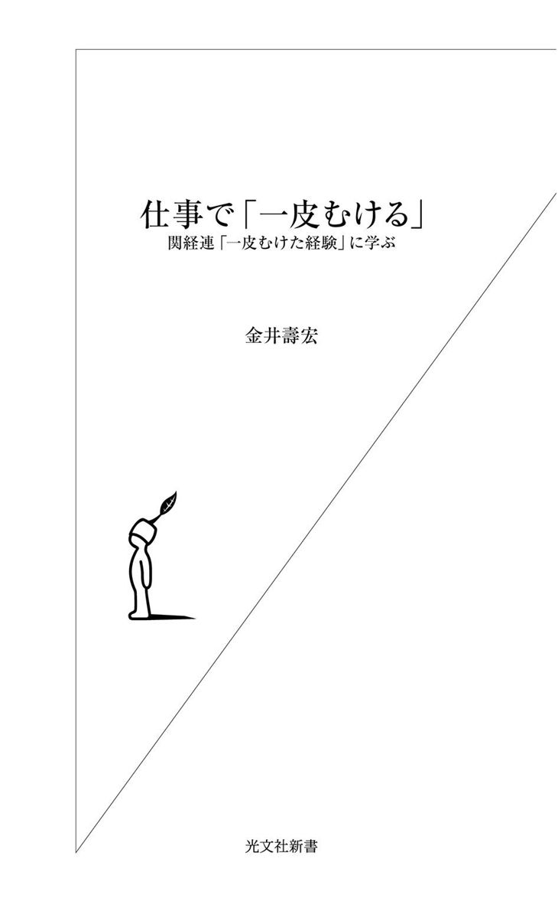
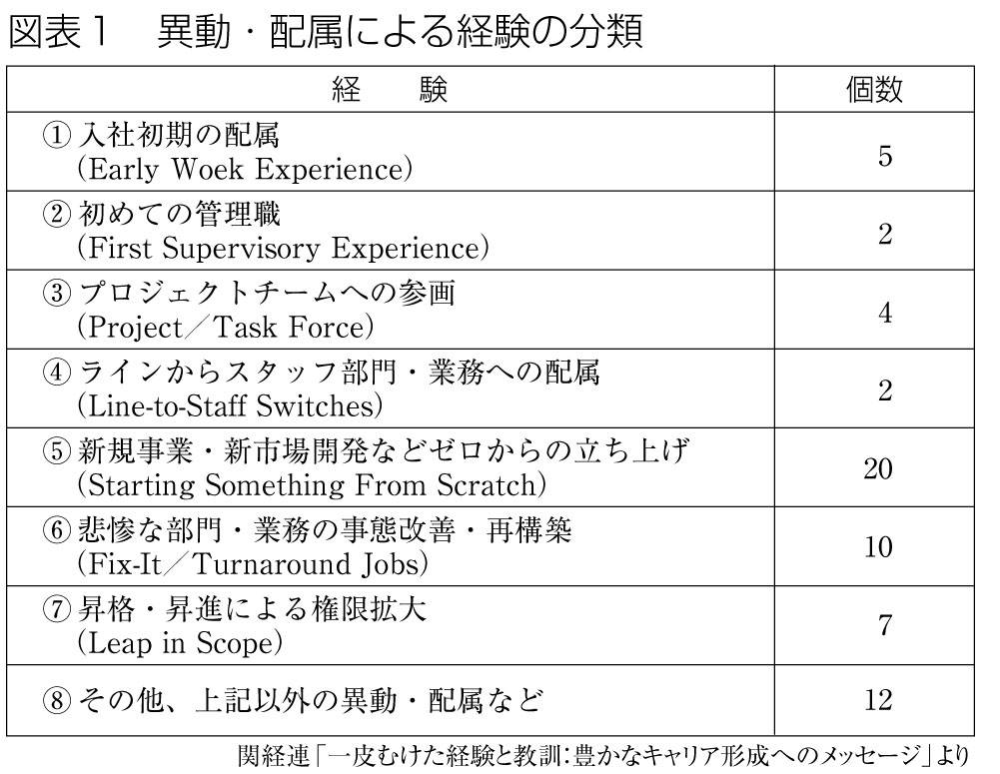
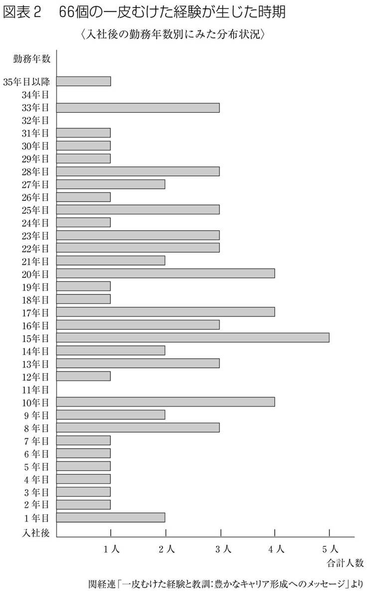

| 仕事で「一皮むける」～関経連「一皮むけた経験」に学ぶ～ (光文社新書) | |
| 金井 壽宏 | |
| (2002) | |

もしも、ひとの発達が学校時代に終わるとしたら、その後の五十年、六十年の人生はなんなのだろうか。長い仕事生活のキャリアを歩むひとにとっては、学校で就学している時期より、学校以後に仕事をしている時期のほうがはるかに長い。
もちろん、ひとは、学校を出て仕事の世界に入ってからも、発達を続ける。それを成人発達ともいい、生涯全体にまつわるひとの発達を扱う学問分野を、生涯発達心理学という。それは豊かな研究分野だが、会社に勤めて、そこでの仕事の世界に邁進しているひとには、ちょっともの足りない。なぜかというと、肝心の仕事そのものの記述が希薄だからだ。大人になっても、ひとが成長・発達を続けるのなら、そのひとが具体的にどのような産業で、どのような会社で、当時その産業とその会社の戦略にどのような課題があり、どのような仕事経験を通じて、成長・発達が生じているのか知りたいものだ。その仕事経験のなかで、どのようなお客様、上司、部下とともに、いったいどのようなことを成し遂げたのかについての語りを、ぜひ聞きたいものだ。
このような希望を常にもっていたので、社団法人関西経済連合会（以下、関経連）の人材育成委員会（委員長は、海保孝大和銀行頭取、当時）で、「経営におけるひとの問題」に取り組みたいというご相談があったときに、わたしは、「経営幹部にまで至るような方々が、いったいどのような︿一皮むけた経験﹀を通じて、経営幹部ならではの思考法や行動の仕方を身につけたのか」について、じっくり、地味だが意味のある調査をするのはいかがですか、と申し上げた。
今、成功している経営トップの話を聞いても、時代が変化しているので仕方がないのではないかという意見もあった。もっともな意見のように思った。かといって、関経連が、これまで日本の経営トップがどのように育ったかという問題を振り返ることなく、新しい形のキャリア形成を求めて、ネット系ベンチャー経営者、ＮＰＯで活躍するひと、フリーランスでクリエイティブな仕事をしているひと、専門職のひとたちの調査にいきなり着手するのも、わたしにはやや見当違いのように思えた。
まずなによりも、せっかく調査をするのなら、関経連が調査の主体であるということを最高に生かせたら、誠にありがたいことだと思った。ひとつには、関西を（そして日本を）支えるべき主要な企業の経営トップが深く関与してくださっているので、トップの声を丹念に聞き、そこから教訓を得るようなプロジェクトには最適だという点、また、委員会には熱心で優秀なミドルの方々が名を連ねてくれる点が大切に思えた。この両方の点から、トップの話をミドルが聞き、自分なりにその物語を若手に伝えるような、伝承が活発になればいい。
そういう期待を元に、調査をスタートした。われわれがもっとも感動したのは、時代が大きく変わっているときだが、関経連のメンバー企業で経営幹部をしておられる方々には、語るべき豊かな経験がいっぱいあり、また、それを受け止める聞き手のミドル（人材育成ワーキング・グループのメンバー）が、経験の物語にどんどん引き込まれたことだ。
語り手、聞き手の双方に大きな気づきがあったことを、特筆したい。
インタビューで語ってくださった経営トップの側は、うすうす感じてはいても、ミドルの真摯な聞き手を前に、一皮むけた経験を順次振り返ることによって、あらためてはっきりと気づく自分の成長・発達の軌跡とさらに将来に向かうテーマが浮上することがあるだろう。
ミドルの側は、直接に薫陶を受けているときはもとより、絶えず経営トップの言動にふれているはずだが、やはりあらためて経営トップに面と向かってインタビューすることにより、深く気づかされる教訓がある。ましてや、自社の経営幹部だけでなく、他の十九社の経営幹部を含め、二十名の一皮むけた経験を合計で六十六例もまとめて体系的に聞くことのできる機会は稀だ。データを手に、目から鱗という話がわたしにもいっぱいあったが、聞き手のミドルの委員は、それをリアルタイムで果たされたわけだ。
経験からの教訓の探索は、この語り部と聞き手のコラボレーションから、ドキュメント化されていくことになった。これまでこの国のどの経済団体も実施したことのない、素晴らしいプロジェクトになりそうだと思った。
変革の担い手のリーダーシップ、創造的なキャリア発達、イノベーションを導くようなネットワークづくりの研究の一環で、多数の多種多様なトップ、ミドルの方々に自らもさまざまな調査プロジェクトで接してきたわたし自身も、関経連のプロジェクトでメンバーが持ち帰るインタビュー・データにふれるたびに、上述のとおり目から鱗のような気づきがいっぱいあった。
この調査結果は、『一皮むけた経験と教訓：豊かなキャリア形成へのメッセージ──経営幹部へのインタビュー調査を踏まえて』（関経連人材育成委員会、二〇〇一年五月）という報告書にまとめられた。報告書は、人材育成、なかでも経営幹部の育成、リーダーシップをとれるひとのキャリア発達に関心をもつ方々に好評であった。また、人事の分野にも造詣の深い海保委員長にも、具体的な生の声を踏まえた調査に基づく提言ということで喜んでもらえただけでなく、なによりも、調査を推進したメンバー、事務局の方々にも、印象に残るプロジェクトとなり、納得のいく報告書ができたことを皆で祝った（実際に海保さん主催の報告書完成パーティをしていただいた）。
われわれの間で、「わたしたちもこのプロジェクトで一皮むけたかもしれません」というような言葉や、「このメンバーで同窓会をすれば、あれから︿何皮むけましたか﹀というのが挨拶になるでしょうね」というような言葉を共有するようになった。わたし自身も部分的に執筆させていただいたが、インタビューのアレンジ、インタビュー結果のテープ起こし作業、テープ起こしデータの分析、分析結果の作表・文書化という作業は、メンバーと事務局の方々のご尽力によって推進された。このまえがきで末尾にはなるが、謝意を込めてご氏名をリストアップさせていただいた。
なかでも、プロジェクトの立ち上げ段階から、人材育成ワーキング・グループ座長の故井上薫氏、スタッフの小巻善郎氏、関経連事務局では、西川敬三氏に、多大なお世話になった（本書の原稿を校正し、仕上げる段階で、このプロジェクトの中枢であった井上氏が逝去されました。ご冥福を祈りつつ本書を手向けたい）。全体の統括では、人材育成委員会委員長の海保孝氏、関経連理事・事業推進部長の岡政徳氏に支援されてきた。また、調査プロジェクトの推進にあたっては、同事務局の小林義彦氏、中島美絵氏のサポートもいただいた。最も大きな謝辞を捧げるべきは、大企業のトップとしてご多忙ななか、このプロジェクトの趣旨をご理解いただき、インタビューを受けていただき、素晴らしい物語を共有させていただいた二十名の経営幹部の方々だ。匿名にさせていただいているために、一人ひとりのお名前を挙げて謝辞を述べることができないのが残念だが、この新書版を手にして、ご自身の経験が引用されている場所に出会うたび、微笑んだり、苦笑したりしながら、お読みいただければ幸いなことだ。
さて、皆さんが手にとっておられる本書、『仕事で「一皮むける」──関経連「一皮むけた経験」に学ぶ』は、このプロジェクトの成果を踏まえて、光文社新書のラインアップの一冊として新たに執筆された。そのプロセスで、ライターの西山恵二氏、また全体としての新書版の編集作業では、光文社新書編集部の古谷俊勝氏に、さらにお世話になったことを記して謝意を表したい。
関経連発行の報告書を上梓させていただいた後、人事の方、経営幹部の育成に関心をもつ経営者の方、自分自身がいいキャリアを歩みたいと思う方々に、この報告書の話をしてきた。報告書を五十部ほどいただいていたので、そういう方々に手渡してきたが、わたしの手持ちも底をついた。この報告書やこの種の調査に、たいへんな価値がありそうだと聞きつけた多くの方から、自分も読みたいし、もっと広く読ませたいという感想をいただいた。
このたび、光文社を通じて、この新書版が出版されることによって、（報告書の段階で）入手できたひとの本棚には残っても、巷からは姿を消してしまわざるをえない︿硬派の﹀報告書に、永遠の生命が与えられることになった。そのことをメンバーの皆さんとともに喜びたい。
といっても、この本が︿軟派の﹀書籍だというつもりは毛頭なく、何度読み返しても、一人ひとりの経営幹部の経験の重みは心に染み入る。また、学会のアカデミックな調査を見ても、日本の経営学者による同種の研究は未だ存在せず、経営学者の目で見ても、具体的な経験の記述が豊かなだけに、非常にインスパイアされるところの多い、まったく新しいキャリアの本になった。つまり、専門的に見ても画期的なものを含むので、内容的にはけっして〈軟派〉ではない。でも、多くの方々にその経験からの教訓を、コンパクトな新書の形でより読みやすく、またより入手しやすく提供できるようになったことを、このプロジェクトに主査としてタッチした人間として喜んでいる。この実現に関与してくださった各位に心から感謝の気持ちいっぱいで、今まえがきを記している。
わたしが大好きな社会学者のハワード・Ｓ・ベッカーに、『いっしょにやるんだ（Doing Things Together）』という本があるが、ビジネスの創造も、学会での知識創造も、芸術の世界も、みな「いっしょにやっているから」夢が言葉になり、言葉が形になっていくのだと確信する。報告書からとうとう新書に至るまでのこのプロセスでも、「いっしょにやってきた」すべての人びとが、いくつになってもさらに︿一皮むける﹀ことを祈って、まえがきをお開きとして、目次から本文へ読者をいざないたい。
二〇〇二年八月
神戸大月台にて 金井壽宏
以下、関経連人材育成ワーキング・グループのメンバーである。この場を借りて謝辞を申し上げたい。（二〇〇一年四月一日現在、順不同、敬称は略させていただきました）
〈ワーキング・グループ〉座長：（株）大和銀行 渉外部理事 井上薫 座長代理：日本生命保険（相） 企画広報部部長 島田智之／ミズノ（株） 取締役（人事総務担当） 北野周三 メンバー：大阪ガス（株） 人事部人材開発チーム課長 江本雅朗／（株）大林組 本店総務部人事課長 山内頼道／鐘淵化学工業（株） 人事部人事チームリーダー 塗靖明／関西電力（株） 人材活性化室人材開発課長 松本有二／サントリー（株） 人事部課長 栗原信裕／（株）島津製作所 人材開発室室長 藤井浩之／住友金属工業（株） 人事労政部人事室室長 竹越徹／ソニー（株） 関西代表室秘書役 西川光生／武田薬品工業（株） 総務人事部人事・組織統括室課長代理 小野知彦／西日本電信電話（株） 人事部人事第二部門長人材開発部門長 高畠宏一／西日本電信電話（株） 人事部人材開発部門担当課長 辻田英仁／阪急電鉄（株） 統括本部人事統括室調査役（人材育成担当） 永井こずえ／（株）マイカル 人事本部人事部人事担当課長 楯昌樹／（株）毎日放送 人事部副部長 中山陽／松下電器産業（株） 人事グループ幹部チーム人事担当副参事 大橋智加／（株）三菱総合研究所 関西駐在代表 山﨑隆義／日本大学大学院グローバル・ビジネス研究科助教授、（株）三菱総合研究所客員研究員 若林広二／（株）リクルート HRD Division. HRD統括部HRD推進部ソリューショングループHRDコンサルタント 酒井正浩 スタッフ ：（株）大和銀行 渉外部審議役 小巻善郎／日本生命保険（相） 企画広報部課長 前田俊哉
〈事務局〉（社）関西経済連合会 事業推進第１部長 岡政徳／同 事業推進第１部課長 小林義彦／同 事業推進第１部主任 西川敬三／同 事業推進第１部 中島美絵
目次
「年齢を重ねてビッグになれるひと」と「干上がってしまうひと」
ビジネスに限らず、どの世界を覗いても、「年齢を重ねるごとにビッグになっていくひと」と「年齢を重ねるごとに干上がっていくひと」がいる。なかには「ある一定の年齢で干上がってしまうひと」もいるが、ミドルで干上がるひとが圧倒的に多い。
世間には、中年になることを「くたびれる」とか「冴えなくなる」とかいうひともいるし、「中年臭い人間になった」と自嘲的に言うひとすらいる。しかし、三十代にできないことを、四十代になってからさらりとやってのけるひともいる。
Ｃ・Ｇ・ユングは、四十歳間際を「人生の正午」という、限りなく美しく、かつ寂しくもある言葉で形容した。人生の午前から午後への変極。成長から成熟への転換点が三十八歳～三十九歳で、「四十歳から本当の個性化がある」と、ユングは言っている。
三十九歳から四十五歳までユングは精神分裂病にかかっていた。ユング心理学というのはすべて四十五歳以降の成果だ。だから、ある部分ではユングの自己正当化という点を割り引いて受け取る必要はあるかもしれないが、人生の後半に「真の個性化」があるというユングの言葉どおり、中年をすぎても大きな絵（ビジョン、ロマン、夢）が描けて実現できる人間は多いし、中年になって初めて大きな絵が描けるようになるひともいる。
たとえば、西田幾多郎の『善の研究』は四十二歳のときの仕事だ。一八七〇年生まれの西田幾多郎は、旧制の金沢四高の教官から京大の教授になったのも遅い。だから、西田哲学といわれる西田幾多郎らしい考えが本当にものになっていくのは、四十代後半。先にも挙げたユングの仕事はまるまる四十五歳以降だし、ジークムント・フロイトが精神分析とか夢分析とか言い出したのも四十五歳からである。
これらのひとは、とびっきりの機会として用意されていた「一皮むける経験」に、中年になって初めてめぐり合ったのかもしれないし、すでに一皮むけていたが、ようやく次の一皮むける節目を久々に迎えたかもしれない。
あるいは、三十代に二皮むけ、三皮目がむけるようなことを考えていたから四十代でさらにビッグになるということもある。
また、ビッグになる、大きな絵が描けること以外に、それまでに何皮かむけた人間でなければむけないようなむけ方がある。
そのむけ方とは、多分、言葉では表現しがたい人間的魅力につながるようなものであり、経営者や経営幹部のリーダーシップが最終的には人間的魅力にまで到達するというのは聞きあきた言葉ではあるが、深いレベルでやはり正解だろう。
大きな器が作れるかどうかは、節目に一皮むけてこれたかどうかにある
キャリアの問題に関して、わたしは今、「一皮むけた経験」にそそられている。
キャリアの問題は節目の問題であり、節目をどう受け止め、節目に「一皮むけた経験」をしたかどうかで、そのひとのキャリア形成に重要な影響が及ぼされるからだ。
たとえば、「役員にしたけれどはずれだった」と思われるひとと、「やっぱり役員の器だった」と思われるひとがいる。「器だった」と言われるひとを見れば、課長よりは部長、部長よりは役員になってさすがだなと言われ、年齢を重ねながらどんどんコーポレート・レベルの大きな絵を描くようになっていく。その畢竟が社長だ。
社長の座まで、会社によってはポスト化している。順送りで最後まで行って副社長が少し大きくなっただけのような社長もいる。でも、トヨタの奥田碩さんやソニーの出井伸之さんのように最後にさらに大化けして、「やはりこのひとこそは社長の器だった」と言われるようなひとも、たしかにいる。
経営幹部や社長になる人びとにその器が最初から備わっていたのかと言うと、ほとんどの場合はそうではない。「社長見習」とか「社長心得」という名刺は作れないし、副社長のときに社長の仕事はできない。結局、社長になってから社長の学習をするしかないし、社長になったその節目にさらに一皮むけるかどうかが問われる。それが、「やはり社長の器だった」と言われるか、「副社長どまりの器だったね」と言われるかの分岐点になる。だから、節目節目に一皮ずつむけ、自分なりの「物語」を紡ぎ、自分らしいキャリアを積み重ねていくことがそのまま「器作り」になる。
では、どんなときが節目になり、「一皮むけた経験」をするチャンスが訪れるのだろうか。セクション12でもこのテーマは取り上げたいが、人生にはいろいろな節目がある。
Ｆ・フィッシャーとＣ・Ｌ・クーパー編著の『節目をくぐる──変化と移行の心理学』（ワイリー社、一九九〇年）には、親になるとき、子供や青年が新たな環境に入るとき（就学や進学）、親元を去るとき（初めての下宿生活やひとり暮らし）、引っ越し、ほかの文化のもとに移るとき（移民）、学校を出て就職するとき、職場内の大きな異動があるとき、失業・退職したとき、海外勤務するようになるとき、などが節目として挙げられている。
普通の場合、会社に就職し、仕事生活を送りながらキャリアを磨く時間が最も長い。その長い時間のなかで、異動や配属、あるいは同じ部門にいてもワンランク責任の重い業務や困難な業務に直面したといったときが大きな節目になる。
疑問・軋轢・不安・焦燥・もがき・落胆があり、折衝・妥協・調和・和解・協力があり、首尾・不首尾があり、昇進・昇格・左遷がある。納得や気づき、充足や満足があり、不満・反省がある。それらの要素を内部化したものが、そのひとの「物語」になる。
本書では、会社組織内の異動や配属をきっかけにした「一皮むけた経験」、「一皮むけたパーソナル・ヒストリー」が語られている。しかし、その「パーソナル・ヒストリー」は、決して「ほかのひとには縁のない物語」ではない。なぜそこで一皮むけることができたかは重要な問題であり、その物語に含まれている教訓、気づき、学びといったものは、いま節目にあって自分のキャリアを真剣に考えているひと、あるいはこれから同じような節目に遭遇するひとにとって、有用な水先案内人になってくれるはずだ。
「一皮むけた経験」がリッチな会社とプアーな会社
今、働く個人の側から「一皮むけた経験」を眺めたが、「一皮むけた経験」が企業に持つ意義も考えてみたい。
慶應義塾大学の花田光世、高橋俊介の両先生の言葉に、「なるほど」と共鳴するものがいっぱいある。なかでも、エンプロイメンタビリティという言葉（花田先生の造語）に注目したい。一方で「他社でも通用するスキルがありますか」とか、「エンプロイアビリティ（就業可能性）を高い状態に磨いていますか」と会社の側が個人を攻撃したり、脅すような言い草がある。これは言い方や言う場面によっては失礼なことだとわたしは思う。
今、吹きっさらしの荒野にたたずむような日本企業も多いから、こう言いたい気持ちも分かるし、ときには言ってもいい。言ってもいいが、言うからにはその反対給付も考えておく必要がある。反対給付とは、「どこにでも通用するんですよ」とか、「市場価値を見たらこんなに高いんですよ」という目茶苦茶できるひとがあらわれたとき、「会社側はこのひとにきちんと魅力ある職場を提供し続けられますか」という問いかけだ。そうした魅力ある職場を提供し続けられる会社側の力を、「エンプロイアビリティ」と対比して「エンプロイメンタビリティ」という。
大変な時代になったことで、わりと自然に個人の側がキャリアを深く考えられるようになったのに対し、たとえば「自立型人材が大事だ」とか、「自立型人材のためにどんな支援ができるか」とか言いつつ、会社の側の姿勢としてエンプロイメンタビリティを問わず個人のキャリア発達を考えているつもりという勘違いが経営者や人事部にあるように思える。
エンプロイアビリティとエンプロイメンタビリティを考える上で、ペンシルバニア大のピーター・キャペリの手による、この分野でベストと思える本に『雇用の未来』（日本経済新聞社、二〇〇一年）がある。ピーター・キャペリは、雇用者と被雇用者にかかわるこのエンプロイアビリティなど二つの概念を、男女のたとえで非常におもしろく説明している。
たとえば、「あんたのことが目茶好きだから、誰にでももてて欲しい」と男に言う女性はいない。いたとしても無理してそう言っているはずだ。普通は、「素晴らしいと思われるあなただから、わたしだけとつき合って欲しいんです」と言う。ちょっとタカビーな女性なら、「誰からも素晴らしいと思われるあなただから、わたしとつき合う資格がある」と言うかもしれない。
すぐ分かるように、これがエンプロイアビリティである。
そうすると今度、男性から、「ほかの誰からも素晴らしいと言われるこの俺を、誰にも負けないくらいお前は居心地よくしてくれるのか」と、女性にはね返る。つまり、「お前にエンプロイメンタビリティがあるのか」という反問だ。
エンプロイアビリティは、そういう際どい裏面を持っている。「つねにエンプロイメンタビリティをコインの裏側に持つきわどい言葉と分かって、会社側はエンプロイアビリティを発しているのだろうか」という疑問がわたしにはある。
企業のなかには、「一皮むけた経験」に邁進したつわものを多く生み出している会社（「一皮むけた経験」がリッチな会社、あるいはそうした経験を望むひとには与えられやすい会社）と、「いや、そんな一皮むける経験といわれても困ります」と言うひとがそのまま役員になっているような会社（「一皮むけた経験」がプアーな会社、あるいはそうした経験を望んでも与えられにくい会社）があるだろう。
「一皮むけた経験」がリッチな会社がそのままエンプロイメンタビリティの高い会社というわけではないだろうが、「『一皮むけた経験』と言われても困るんです」と臆面もなく言う人間が役員になっている会社と、「これがわたしの一皮むけた経験だ」と熱く語れるひとが役員になっている会社の間に、エンプロイメンタビリティに差があっても不思議はない。
本当に従業員を磨いていたいと思えば、そして企業の力を高く維持したいと思えば、会社側はどのような人事の仕組み、どのような評価の仕組み、どのような仕事の与え方、とくにどのようなキャリア・パスを与えるか、どのように「一皮むけた経験」をしてもらっているかを真剣に考えなければならないと思う。個人の側に本当にエンプロイアビリティを問うのであれば、組織の側は、エンプロイアビリティの高いひとに見合ったエンプロイメンタビリティを持っているかどうか、検証の必要がある。
ただし、組織のエンプロイメンタビリティの高さを証明するためには、組織のなかでどんな生き方ができるかが実例がないと分かりにくい。給与がいくらとか、福利厚生がどうとかという話より、ここでどのような仕事をしたいひとがいるのか、あるいは、そのひとにはどのような豊かな仕事経験があるか、どのような「一皮むけた経験」例があるか、姿として見えるようにしておく必要がある。
「量子力学的な跳躍となった経験」から「一皮むけた経験」へ
本書には、ひと回り大きな人間、より自分らしいキャリア形成につながった「一皮むけた経験」、企業側から眺めればそれを許し、よりよいキャリア形成を支援するエンプロイメンタビリティに関わる物語が収められている。
詳しくは次のセクション１から紹介するが、この「一皮むけた経験」の調査には、先駆となるひとつの刺激的な仕事がある。その仕事は、ノース・カロライナ州グリーンズボロに本拠を置いてリーダーシップの研究と研修を行っているＣＣＬ（Center for Creative Leadership：所長ジョン・アレキサンダー）が実施したもので、「これまでのキャリアにおいて、自分が一皮むけるのに最も貢献した具体的な経験」が採取されてきた。
対象は米国企業六社に勤務する「成功している」経営幹部百九十一名で、一人当たり最低三個の具体的体験を語ってもらっている。そのためキーイベントは合計六百十六個、識別された学ぶべき経験からの教訓は千五百四十七個に達し、元ＣＣＬ幹部で現・南カリフォルニア大経営・組織学教授のモーガン・マッコールたちの手で、『Lessons of Experiences』という本に結果がまとめられている。ここでその内容を詳しく述べることは控えるが、「すぐれたエグゼクティブになるための七条件」だけを掲げておく。
①アジェンダ（大きな構想とその実施細目の両面を示す）を構築し実施する。
②ひととの関係を扱う。
③基本価値に基づいて行動する、それをほかの人びとに伝達する。
④エグゼクティブとしての資質を試される、それを高める。
⑤自分について深く知り、個人的な自覚を高める。
⑥ほかの人びとへの依存状況に対処する。
⑦経営幹部らしい深い思考をする。
翻訳がないために内容を詳しく知りたい方は原書に当たっていただくほかないが、この研究以後の展開はマッコール著の『ハイ・フライヤー』（プレジデント社、二〇〇二年）に見られ、この本なら邦訳があるので、そちらを参照されたい。
わたしが「一皮むけた経験」と呼んでいるのは、『Lessons of Experiences』では「quantum leap experience」と表現されている。
直訳では「量子力学的な跳躍となった経験」という意味になるが、そんな大それた訳語は日本人の感性になじまないし、使うことがためらわれた。日本語でこの言葉があらわす意味に近い表現をいろいろ探し、「脱皮」も考えてみたが、結局、「一皮むけた経験」という表現を当てることにした経緯がある。
自画自賛ではないが、「一皮むけた経験」という言葉は肌感覚にあう大和言葉だと思うし、以後、この言葉を、論文やジャーナリズムでの書き物を通じて、また学会発表や研修、講演の場でも使用してきた（最初に、節目で一皮むける経験に注目し、ＣＣＬにも言及した論文は一九九六年四月の『人材教育』に掲載された）。
いくつになっても、ひとは一皮むけられる
では、関経連の人材育成ワーキング・グループによってまとめられた「一皮むけた経験」はどんな内容になっていただろうか。二十人の方によって語られた「一皮むけた経験」は、図表１のように分類される。

次に、これら「一皮むけた経験」が生じた時期をグラフで見てみよう（図表２）。

これを概観すると、サンプル数が少ないために、該当する経験が〇～一個といった年数が見られるものの、どの勤務年数を見てもほぼ一様に分布している。はっきりした規則性は発見できないが、反面、いくつになっても「一皮むけた経験」が生じたことを示している。ひとの成長は生涯にわたって続くものであり、会社・職場は学校ではないけれど、ひとが継続的に成長する場であることがわかる。
今回の調査では、ＣＣＬのひそみにならい、「一皮むけた経験」を三つ程度述べていただく方法を採用した。したがって、経営の中枢に関わるような仕事に携わってきたひとは、キャリア後半で体験した重い責任のある大きな仕事を「一皮むけた経験」として挙げている可能性がある。単純に、「一皮むけた経験」の時期が遅いことだけをとらえて、「成長が遅い」と見ることが適当ではないことは言うまでもない。
今後、このような調査が数多く実施されてもっと多くのデータが蓄積され、テレビにゴールデンアワーがあるように、人生やキャリアにゴールデン・ピリオド、つまり「一皮むけた経験」が多く生じる時期が業種や文系理系にかかわらず存在するかどうか、あるいは、その時期がいつかといった点が明らかにされることを期待したい。
「一皮むけた経験」は、サナギからチョウへの質的な「変態」
ここまで「一皮むけた経験」について述べてきたが、「一皮むけた経験」の原語である「量子力学的な跳躍となった経験」という形容の持つイメージに注意していただきたい。原語には、「ひとの成長は、漫然と漸進的にずっとゆっくり進むのではなく、ここぞというときに大きなジャンプがある」というイメージが込められており、「一皮むけた経験」とは、それほど一皮むける度合いが強かった経験、インパクトが大きかった経験を指している。
この「一皮むけた経験」という言葉にたどり着く過程に、私的なエピソードがある。
一昨年の夏、近所で行われたパークフェスティバルで息子がザリガニを釣ってきた。育て方がうまかったのか、そのザリガニが自宅の水槽のなかで二回、三回と脱皮した。
いつもキャリアという言葉が頭のなかにあるわたしにとって、その脱皮はこの上なく示唆に富む光景だった。今までの殻ではきつく入り切らなくなった身体のサイズに合わせるために、過去の硬い殻を脱ぎ捨てる。脱ぎ捨てられた殻は、それまで自分がここにいたという証明そのものの形、自分の過去の等身大の大きさそのままにそこに残されている。
そのときに、「脱皮すること、一皮むける経験はこういうすごいことだ」と実感させられた。まして完全変態というか、泥のなかを這いずり回っていたヤゴがトンボになり、青虫がサナギになりやがてチョウになって空を舞う変態もある。
残念ながら、殻がない人間には「あれがわたしの五年前の姿です。今はこう成長しました」と抜け殻を見せることはできないし、完全変態して見た目の上でまったくの別の形態に生まれ変わることもない。しかし、ザリガニの脱皮やチョウの完全変態に当たるような様変わりが人間にもあれば素敵だし、齢を取るほどにそういう経験があれば最高だと思う。
わたしは、ザリガニの脱皮やチョウの完全変態に相当するものが、人間にもあると思う。それが節目をくぐるたびの「一皮むけた経験」であり、その経験を境にひと回り大きな人間、より自分らしいキャリアを磨く人間に変われる。
チョウの完全変態は一度きりの外面的な変化だが、人間の「一皮むけた経験」は内面的な変化であり、うまくキャリアを歩めば繰り返し経験できる。目にはさやかに見えないけれど、「一皮むけた経験」の繰り返しにより、さらにひと回り大きいキャリアが獲得され、いくつになっても干上がらない人間になれる。
ニコルソンのトランジション・モデルから見た「一皮むけた経験」
ここまで述べた「一皮むけた経験」に、違う方向から光を照射してみよう。違う方向とは、トランジション・モデルからの考え方である。
「トランジション」とは、日本語の節目（あるいは転機）を言い、人生行路（ライフコース）のなかで、何度か繰り返し起こること（ライフサイクル）という文脈のなかで、「移行」ないし「移行期」を指す。生涯発達論やキャリア論におけるライフサイクルの視点では、人生やキャリアは安定期と移行期の繰り返しととらえられる。
トランジションについては、臨床心理学者だったウイリアム・ブリッジスの考え方がまずある。ブリッジスは、「終焉（何かが終わる時期）」から「中立圏（混乱や苦悩の時期）」、そして「開始（新しい始まりの時期）」という三つのステップでトランジションを説明する。
ひとはいろいろなときに悩ましくものを思うが、なかでも〝もの狂おしくものを思う時期〟が思春期だ。なぜ思春期にものを思うかといえば、大人のようで大人でない、子供のようで子供でない宙ぶらりんの時期だからである。ひとの一生が移行期と安定期の繰り返しとすれば、思春期とは紛れもなく中立圏に当たる。
普通、大学生になると、そのようなもの思う時期は終わっているといわれるが、学生と真面目に話をしていて、「君ら、自分らは本当に大人と思うか、子供と思うか」と聞くと、結構、悩ましいところがある。「大人と思う」と言えば、「ほんまに大人と思うんか」と突っ込むとぐっと詰まるし、「まだ子供と思う」という返答には「だけど、二十一歳で子供はないやろ」と切り返すこともできる。大人期の開始にはまだ手が届かず、かといって完全な子供期は終焉している学生たちの現在地こそ、中立圏という宙ぶらりんの一例と見なせる。
先にブリッジスのトランジション論を紹介したが、彼の論は人生全般にまつわるもので、焦点が必ずしも仕事の世界にはない。キャリアという問題により密接なキャリア・トランジション・モデルとして、ロンドン・ビジネス・スクールのナイジェル・ニコルソンのモデルに注目したい。
ニコルソンのトランジション・モデルは、四ステップから成っている。
第一段階......新しい世界に入る準備段階
第二段階......実際にその世界に初めて入っていって、いろいろ新しいことに遭遇する段階
第三段階......新しい世界に徐々に溶け込み順応していく段階
第四段階......もうこの世界は新しいとはいえないほど慣れて、落ち着いていく安定化段階
彼のこの四ステップは円環状になっているが、このステップは一周でゴールではなく、メリー・ゴー・ラウンドのように準備→遭遇→順応→安定化、安定化の次はまた準備という再帰性がある。しかも理想的にはスパイラル状態に生涯展開していくから、第四段階が第一段階にもなっている。本書で扱っている「一皮むけた経験」は、ニコルソンのモデルに照らしていえば、前のサイクルから、量的にも質的にも一気に高くジャンプしたような経験を意味している。キャリア・トランジション・モデルについてより深く考えたい方には、僭越ながら拙著『働くひとのためのキャリア・デザイン』（ＰＨＰ新書、二〇〇二年）を一読されることをお勧めしておきたい。
本書に収録された「一皮むけた経験」は、先輩ビジネスマンたちが語り部となってくれた現実のキャリア・トランジションであり、「器作り」であり、よりよいキャリアを望むすべてのビジネスマンにとって実践的で示唆に富んだよき指標となってくれるだろう。
自分は何が得意か、いったい何をやりたいのか
就職したひとが最初に「一皮むけた経験」をするチャンスは、それほど経験を積まない時期にも訪れる。ひとによっては、入社五年以内の配属・異動で一皮むけることもある。「入社初期の配属・異動などわたしにはもう関係ない」と言うビジネスマン、ミドルがいるかもしれない。しかし、わたしは、キャリアの問題を考える際に「ミドルと新入社員は合わせ鏡」とつねづね言っている。この言葉の真意はあとで説明したいが、「人生の正午」を迎えたミドルであろうと、就職から入社初期の配属・異動と今のキャリア、そしてこれからのキャリアは無関係ではない。だから、ここを飛ばさないでいただきたいと思う。
このセクション１を出発点に、「一皮むけた経験」とキャリア発達の旅に出る前に、これからの旅程の周遊券である「キャリア」についての定義を見ておきたい。
キャリアの定義でよく引用されるものに、ボストン大学のＤ・ホールの定義がある。
「キャリアとは、あるひとの生涯にわたる期間における、仕事関連の諸経験や諸活動と結びついた態度や行動における個人的に知覚された連続である」
ただし、ホールは仕事関連の諸経験に限定してキャリアを把握し、家族やコミュニティとの関わりや趣味といった、すべてを含めた人生としてのキャリアという考え方をとらない。わたしは、生涯発達や、人生全般の転機の研究からキャリアを追求したいので、キャリアと人生をオーバーラップする立場から考えたいと思っている。そこで、わたしたちの考えるキャリア観は次のようになる。
「成人となってフルタイムで働き始めて以降、生活ないし人生（life）全体を基盤にして繰り広げられる長期的な（通常は何十年にも及ぶ）仕事生活における具体的な職務・職種・職能での諸経験の連続と（大きな）節目での選択が生み出していく回顧的意味づけ（とりわけ、一見すると連続性が低い経験と経験の間の意味づけや統合）と将来構想・展望のパターン」
あまりに長いので、わたしは通常、「長い目で見た仕事生活のパターン」と言っている。これからキャリアという言葉が登場してきたときは、この意味で使われていることに留意していただきたい。そして、キャリアを考えるとき、経営学におけるキャリア論の大御所的存在といえるＭＩＴのエドガー・シャインは、次の三つの問いについて内省することが、キャリアについて考える基盤を提供すると主張している。
①自分は何が得意か。
②自分はいったい何をやりたいのか。
③どのようなことをやっている自分なら、意味を感じ、社会に役立っていると実感できるのか。
就職は、キャリアの入り口という大きな節目だ。この節目を契機に、学生は「自分探し」と「会社選び」を真剣に考える。意識するかどうかは別にして、ほとんどの学生がそのときに手がかりとするものが、Ｅ・シャインの掲げた「三つの問い」になるはずだ。
先のニコルソンのモデルに照らしていえば、就職活動は第一段階で、入社初期の異動・配属は第二段階になる。それでは、ニコルソンのトランジション・モデルの第二段階、つまり入社初期段階の異動・配属が「一皮むけた経験」につながったいくつかのケースを見ていこう。
酒類・食品製造業に勤務する経営幹部の場合だが、このひとは入社後、当時まだ一つしかなかったＡビール工場に配属されている。ビール事業参入後四年目で新発売したブランドが成功をおさめ、品切れ状態が続き、技術系新入社員は全員増産要員として生産現場への配属となったためである。「当時は自動化も進んでおらず、かなりの重量のホースを担いだり、発酵終了後のタンクのなかに入って酵母洗浄をしたりしていたが、入社前には現場の業務を経験したかったこともあり、真面目な作業員だった」と語っている。
他部署から応援にきていた新人は三カ月間で全員原部署に帰っていったが、このひとの場合、当初から工場配属であったためさらに二カ月間、計五カ月間の現場経験をしている。その間に、工場には管理職・一般社員・工員（その後社員と統合）・協力会社の社員が明確に区別されており、現場でのものづくりは工員と協力会社の社員が担っていたことを知る。一方、工員と協力会社社員だけではとうてい工場をうまく動かすことはできないが、工場にとって重要なことで幹部が知らないことが結構あるということも知る。
このひとは、現場体験からいくつかのことを学んでいる。まず、「組織の本当の動き・構造・実態を正しくつかむことが必要であり、名前や形による錯覚を防がなければならない」ということを学んでいる。
「××事業部がこう言っている、△△工場がこう言っているという情報が簡単に一人歩きして、みなが思わぬ方向に行ってしまうことがあるが、その部署の誰がどういう状況で言ったのかを確認すると、部署全体で繰り返し検討したうえ部署長が結論を出した場合と、一担当者がちょっと聞かれたから答えただけという場合があり、混同している場合が多い」
もう一つ、学んだ重要なことがある。
「この工場は新入社員にとっても言いたいことが自由に言える素晴らしい風土だった。しかし、こういう本音の議論ができる風土でもみんなで日頃メンテナンス（官僚主義の芽が出たときにすぐ摘んでしまうということを）しないとどんどん駄目になる」
こう述べたあと、「組織風土は、ボスの影響が強いのは当然であるが、ボスだけでなくみんなが注意して育ててゆくものであることを繰り返し確認したいものである」と、組織の風土に関する根本的な教訓を学び取っている。
金融・保険業の会社から調査対象に選ばれた経営幹部は、「これまでの経歴を振り返ると、前例がないというか、初めてやったことが多い。そういう意味では恵まれていたと思う」と述べ、「一皮むけた経験」として、入社三年目から事務部で八年間にわたって第一次オンラインを開発した体験を挙げる。「今ではコンピュータはどこにでもあるが、当時はまったくゼロからの出発であり、センターにコンピュータを置いて、全店をオンライン・リアルタイムで動かすという初めてのことをやった。その後、第二次オンライン、第三次オンラインとどんどん内容が進化していったが、二次から三次になったり、三次から四次になるのと、ゼロから一次になるのとでは全然違う」
このひとが、その配属を「一皮むけた経験」とするのはどのあたりに理由があるのか。
「原理原則というか、何のためにやるのか、なぜこれを作るのかをまず徹底的に考えなければ進めない。その癖がついた。何でも原理原則からスタートする。
それに加えて、〝トップダウン・アプローチ〟と言っているが、これは第一次オンラインのときにＩＢＭ社と一緒にやって学んだことであり、まず理想形からスタートする。つまり、あらゆる制約条件を取り払って、理想形はどうあるべきかを考える。そして、それを実現するためにはどういう枠組みなり、仕組みが必要なのかを考える。そうした後で、物理的な制約条件、たとえばお金の問題などが入ってくるが、それらを組み込む。
第一次オンラインを開発したときの経験から言うと、一つ一つのプログラムを順番に作っていけば無茶苦茶になる。まず、全体のデザインを描いて、これとこれの取引のオペレーションなり構造は同じだから端末はこれを使う、しかしこの取引は違うので別の端末を使おうというような仕分けをする。このようにトータルデザインをもとにして、有機的に個々を考えていくことが、トップダウン・アプローチである」
オンラインシステムの開発という前例のない仕事から、この方は、「原理原則からスタートすることの重要性」、「トップダウン・アプローチの重要性」という貴重な教訓を学んでいるが、もう一つ重要なことを学んでいる。
「五十人くらいで分担してプログラムを書くが、一カ所でも弱いところがあると、全部駄目になってしまう。ほかがいくら強くとも、一カ所弱いところがあればそこで切れてしまう。そうであれば、極端に弱いところを作らなければよい。別に強くなくても普通でもよい。五十個つながれば、かなりのパワーを発揮するからである。このことは、チームでプレーしているときにも当てはまり、また自分一人のことでも当てはまる」
この方の言葉を借りれば「鎖は弱いところで切れる」ということであり、「極端に弱いところを作らないこと」と、「一番苦手なところでも、ある程度は知っておかないと、総合判断を下すときにかなりのリスクを負うことになる」ことを学んでいる。
調査協力者のうち放送業の会社で活躍する経営幹部は、「労働争議に対応できる人間」と見込まれて、総務局人事部に配属された。マスコミ志望者のほとんどがそうであるように、この方も「現場志望」で入社したが、新社屋建設事務局に出るまで、二十二年にわたって人事・労政を経験している。
「当時労働争議が激しい時代で、それに対応できる人間ということで自分は採用され、また不況の時代の営業強化ということで一般職採用七名のうち自分以外の六名は全員営業に配属され、自分だけが人事に配属になった」
たまたま翌四十年の春闘が大争議となり、琵琶湖毎日マラソンの中継に出る中継車にピケを張られ、会社が五日間ロックアウトしたり、『ママの育児日記』という生番組に組合がピケを張り、放送に労働歌が混入するなどの出来事があったという。最終的に組合三役がその責任を問われ解雇となり、それがもとでかなりの数の労働訴訟が起こった。これが最終決着し全面和解したのは五十二年、関連企業などの訴訟も含め最終的に決着したのは五十八、五十九年のことになる。
「人事・労政時代は労働争議・訴訟を経験し、かなりの修羅場をくぐった。入社以来人事で組合員経験がなく、つねに会社側だったので、四十六、四十七年くらいまで組合と激しい折衝を行い、そのなかで嫌がらせも経験した。
『実際の交渉は我々だ。我々が会社からいくら取ってくるか、我々が会社から取れるように君たちも会社に協力しろ』ということを繰り返し話しながら誠心誠意交渉している間に、会社べったりの人間ではないということを次第に理解されるようになった。
一番辛かったのは労働訴訟だった。支援団体がやってきてかなりの暴言を言われた。そのなかで自分を支えたものは、弁護士と社内スタッフとつねに何でも話し合える環境にあったことだ」
厳しい組合との折衝や労働訴訟を通じ、このひとは「誠心誠意相手と向き合うことの重要性、立場が違っても誠心誠意で臨めばやがては理解される」と、人間の機微を学ぶ。
「組合との事務折衝を誠心誠意で行った。組合との交渉を通じ、後半は徐々に自分を理解してもらえるようになった。世の中の機械化がいくら進んできても、基本は『人と人との繋がりが絶対必要だ』ということだと思う。情報も送りっぱなしではなく、フェース・トゥー・フェースで相手の顔色や言い方を感じ取っていくことが必要で、これは仕事を進めていくうえでの基本だと思っている」
人事・労政担当者として一皮むけるばかりか、組合との関係から業務そのものの本質を学んでいる。入社初期段階に配属された自分の意に沿わない部署でも、キャリアに重要な「一皮むけた経験」は得られるという好例だろうと思う。
運動用品製造業のある経営幹部は、入社して二カ月ぐらいはお得意先の名前、住所を覚えるため、荷造り発送の業務を経験している。当時はまだ荒縄で梱包し、腰に鎌を差しての業務だったという。その後、外商部へ配属となって新聞社や大手企業・メーカー、学校へ直接商品を売ることを経験した後、梅田地下街の直営店第一号店のオープンのために小売部への異動を経験している。入社五年目のことだ。
「今で言うマーチャンダイザーとして、また実働部隊の責任者という立場であった。男子四名、女子はパートという編成であった。何とか期日までにオープンにこぎつけた。当時はよく『もの』が売れた。初代社長が会社の帰りに店に寄ってくれ、誉めてもらったことが記憶に残っている」
昭和四十一年の春に堂島地下センターのオープンのために今度は堂島店へ配属となり、ここのオープンも手がけ、つごう二カ所のオープンを手がけた。そのオープンに際して、最初の「一皮むけた経験」を経験している。
「直営店オープンのとき、少ない人数ではあったが、一つのチームとして、しんどいけれども組織としてみんなで楽しくやることを経験した」
その頃に、初代社長から大卒者が全員呼ばれて、『これからはメーカーの時代であり、工場を強化する。工場に行きたいものは手を挙げよ』ということで、自分から手を挙げて大阪工場への異動となっている。工場では、バッグやリュックサックを製造する部門に最初配属され、型紙作成・見本作り・協力工場での生産など、モノ作りの基本的なことを覚えている。
「大阪工場でも、多くの人と一緒に仕事をすることが大きな経験となった。その当時、工場も家族的な雰囲気のなかで、年末は演芸会があったり、また運動会などもあったが、それらの盛り上げをするなど、お祭り気分的な感覚で全員で何かをするという経験は、後々いろいろな組織運営のうえで、また仕事をするうえで、よい経験となった」
この方はこう振り返るが、ふたつの部門で学んだ「チームプレーの大事さ」と「多人数で目標に向かって業務をすることの大切さ」が、のちに大きく役に立ったと述べている。
エネルギー業の会社で今回の調査に協力していただいた経営幹部は、「一皮むけた経験」として、入社四年目の昭和三十七年の出来事を挙げているが、それに先立つ入社二～三年目の昭和三十五～三十六年時代の思い出をこう述べている。「昭和三十五年頃は、電力需要が所得倍増計画の影響を受けて急速に増えていた時代で、当時は国の許認可を取る仕事や、需要分析などに携わっていた。需要分析の業務では、ない知識を絞って、『景気は強含み』と分析したところ、当時の次長から『この言葉は何だ』と怒られた。『株と電力は違う。下劣な表現を使うな』という訳だ。歌の文句ではないが、怒られることの多い、そんなほろ苦さのある時期であった」
そして、入社四年目の昭和三十七年から四十年にかけて、東京での燃料と企画の仕事で一皮むける。
「当時は石炭から石油へシフトしていく時期にあったが、石油に関する知識が会社全体で不足していた。エネルギー革命のなかで、石油の使い方について、軽質油分（ナフサ）を抽出した残り（重油）を燃やして発電するという考え方と、原油をそのまま燃やして発電するという二つの考え方があり、これについてレポートを書くことになった」
本を読んでも分からず、情報をどう集めるかを考えた結果、通産省の石油課に三カ月間通い詰め、立場上は「電力は敵だ」と言われながら、人を紹介され、いろいろと教えてもらう。鉄鋼会社、石油会社の商社のメンバーを二十七人も集めてもらい、勉強会を開いたり、いろいろ本を貸してもらったりもしている。
そのときの人脈は今も生きており、「立場や年齢を超えて相手を大事にし合う関係になれば、人間関係という一生の財産が築ける」ことを学んでいる。さらに、この勉強を通じて公害問題への視点を開かれ、それが次のキャリアにつながっていく。
「当時の重油は、硫黄分を三・二～三・五％程度含んでいたが、公害問題とコストを考えると、硫黄分一・〇～一・五％程度が均衡点ではないかといった議論をした。私は、公害問題は経済学的に整理はついていないが、将来きっと重要になると考えた。月給が一万五千円か二万円の頃だったが、カップ著の『私的企業と社会的費用』という一冊二千円の本を十冊ほど買ってメンバーに配ったのを覚えている。この本には、公害問題を社会的費用としてこう計算してみたという分析が載っている。たとえば、空気の汚染を経済的にカウントする方法として、通常の環境であれば五年は保つ塗料が、大気汚染の酷いピッツバーグでは一年半しか保たないから、三年半分が社会的コストと」結論したそうだ。
この考え方をレポートにまとめて会社に提出したところ、本社の企画課長の目に止まり、昭和四十年から本社の企画課で燃料の成分を検討する仕事に携わることになっている。
入社初期のふたとおりの「イニシエーション」
入社初期の異動・配属によって一皮むけた五例を紹介した。
これらのケースでは、「学校では教えられてこなかったことではあるが、職業生活のなかには学ぶべきことが多いという自分の気づき」、「仕事が完遂するまでにどのようなプロセスがあり、どのような人々が関わり、何が彼らを動かしているのか」といった仕事の仕組みを観察し、自分なりに把握できたことが「一皮むけた経験」となっている。
入社初期段階の配属経験は、そのひとのキャリアにとって重要か。この問題はじつに悩ましい側面を持っていて、わたしには「イエス、バット」と答えるしかない。
というのは、名古屋大学の若林満、慶應義塾大学の南隆男の両教授によるある関西の流通業の研究では、初期の適応だけでなく、二十五年フォローしても、最初の上司との相性やつながりのよさが大きなインパクトを持っていた事実が浮き彫りにされたからである。最初の配属先が自分で決定できるわけはなく、最初の上司を選ぶこともできない。いわば他律的に与えられる環境であり、それがここまで影響を及ぼすことの意味は大きい。最初の配属で「一皮むけた経験」が得られなくても、相性のよい上司と遭遇することを願うしかない。
もうひとつ、入社初期段階の配属で考えなければいけないことに、「リアリティ・ショック」がある。期待に胸を膨らませて入社したのに、現実とのギャップがあまりに大きく、その結果陥る幻滅感をリアリティ・ショックと言う。
就職を希望する学生たちに大きなリアリティ・ショックを与えず、新しい世界にうまく順応していくために、できるだけ良質な情報を提供することを「ＲＪＰ（Realistic Job Preview、リアリズムに基づく事前の職務情報）」と言う。その提唱者がＪ・ワナウスで、わたしが好きな「南極探検隊の募集」記事やワナウス自身による電話会社ＳＮＥＴ（Southern New England Telephone）の研究、わたしも一部タッチした野村総合研究所の会社案内の実例などおもしろい話もあるが、本論とは直接の関係はないので割愛させてもらう（興味のある方は、『働くひとのためのキャリア・デザイン』前出）を参照いただきたい。
話をもどそう。二～三年もすれば普通のリアリティ・ショックは乗り切れる。この過程で、米国の産業組織心理学者のＤ・フェルドマンは、「職場集団への加入儀礼（グループ・イニシエーション）」と「職場の仕事上の課題面での加入儀礼（タスク・イニシエーション）」というふたつの重要なステップがあるという。（参照元へ戻る）「イニシエート」とはそもそも「始める」という意味で、「イニシエーション」は「そこを超えれば本格的に一人前のメンバーとしての新たな生活が始まること」を指し、加入儀礼や通過儀礼と訳される。
フェルドマンがここで使ったイニシエーションには、ふたつの意味がある。ひとつは、「職場集団のメンバーに自分も仲間の一員として認めてもらうこと」で、もうひとつは、「職場の課題に仕事面できちんと貢献できることを認めてもらうこと」である。この両方ができて初めて一人前と認められるが、どちらのイニシエーションが先に姿をあらわすかは、職種・業種によって違うらしいことが報告されている。
「一皮むけた経験」を繰り返しながらひとはキャリアを磨き、自分の人生をよりよいものにしていくという考えからすると、たとえ自分の第一志望ではなかった会社に入社し、志望しない部署に配属されても、それを節目ととらえて成長できるかどうかが大きなターニングポイントになる。ニコルソンのモデルの第二段階である「遭遇」で何を見、何を感じ、何を喜びとし、何を身につけるか、それが自分らしいキャリアをスパイラル状に歩んでいく推進力になる。
ミドルになって、キャリア初期の夢に溯る意味
就職活動に始まり、入社から入社初期段階の経験が一定の意味を持つのは、何も新入社員だけではない。すでに入社動機の記憶が薄れかけたようなミドルになっても、それなりの入社初期時の経験の生かし方はある。たとえ入社初期の異動・配属で、「一皮むけた経験」をしなかったとしてもである。
キャリア全体を通観する場合、わたしは、キャリア初期の夢にまで溯る必要があると考えている。だから、ミドルのひとのキャリア中期の課題を探るには、必ずどこかでキャリアの出発点まで溯ることも必要になる。ところが、「これまでのキャリアの節目を挙げてください」と三十代後半から四十代のミドルに言うと、初めて社会人になった就職のときという節目を忘れているひとがいる。あるいは、挙げることは挙げても、「初心」を忘れてしまっているひとがいる。
あとのセクションで触れる機会もあると思うが、わたしも二回ほど企業への就職を考えたことがある。一度目は大学三年になる頃で、臨床心理学を学んでカウンセラーになるという自分なりに描いていた将来の路線変更を考えはじめたときになる。このときは、四年生の夏休みに、神戸大学医学部の友人と神戸大学の六甲台キャンパスまでドライブし、そこで偶然に見つけた神戸大学大学院の入試要項が縁で院入試を受けている。
二度目は大学院で修士論文に着手する頃で、その頃のわたしにはずっと大学にいる自分の姿が想像できなかった。だから、就職活動をして外資系のコンサルティング会社から内定をもらい、東京で住む場所まで決めていた。このときは、「自分のテーマを選びたいのなら大学だぞ」と最もお世話になったある先生から真剣に言われ、考えに考え抜いた。Ｂ５のカードを使って、大学での研究の継続と外資系のコンサルティング会社に勤務することのプラスとマイナスを考えられるかぎりリストアップし、結論を行きつもどりつして大学助手への道を選ばせてもらった経験がある。
あまり偉そうに言うと外野席から野次が飛んでくるかもしれないが、わたしの内部には、企業という選択を捨て大学を選んだときの「初心」と「不安」が今でもまざまざと記憶に残っている。
ミドルと新入社員は、キャリア研究においては合わせ鏡だ。ミドルであれば、毎年入社してくる新人と接する機会があるはずだ。社会人としてのキャリアを歩み始めた新人の姿を見て、ミドルのあなたの鏡には何が映り、何を思い出すだろうか。仮に、あなたが「夢なんか実現しっこない」と思っているのであれば、次の言葉を考えて欲しい。「夢なんか実現しっこないというひともいるが、実は夢しか実現しないのだ」
この素敵な言葉はベンチャー経営者の増田宗昭さんの言葉だが、キャリア喪失感のあるミドル、よりよいキャリアを望むミドルであれば、初めて社会人になった節目と「初心」を思い出す作業で、「この会社に入ったことは、自分にとって果たしてどういう意味があったのか」と考え直していただきたい。
「部下を持つ」という新鮮な節目の経験
新しい世界への扉でありキャリアの入り口でもある就職を経験し、初めての配属や入社初期段階の異動で経験を積み始める。入社時に抱いたリアリティ・ショックも、フェルドマンが提示したふたつのイニシエーション（セクション1、入社初期のふたとおりの「イニシエーション」を参照）をくぐっていくうちに数年で消えていく。
話は少し前後するが、この間の経験をエリク・Ｈ・エリクソンの漸成説に訪ねてみたい。エリクソンはアイデンティティの概念提唱者としてのみ知られがちだが、八段階の発達段階から成る独自のライフサイクル論も展開している。エリクソンは、そのおのおのの発達段階において乗り越えるべき発達課題とその対立項（発達課題をクリアできなかったときに陥るまずい状態）を示すとともに、この課題をクリアした人に備わる「virtue（美徳）」を体系的に提示している。「美徳」というと倫理の匂いがするので、キャリアを考える場合、わたしは「強み」という表現に置き換えてもよいと考えている。
それによると、会社に入る間際には、「わたしはいったい誰なのか（アイデンティティの確立）」という重い問いにそれなりの折り合いをつけてクリアする。この発達課題をクリアすると、「何に打ち込むべきか」が分かってくるので、目ざすものに打ち込むことができるという意味での「忠誠」が美徳（強み）として備わるようになる。
入社してから管理職になるまでの時期では、発達課題のうえでは、自分にもアイデンティティがあり、相手にもアイデンティティがあることを前提としたうえで、「自分以外の大切なひとと深く接触し親密になれるか」という課題が待っている。フェルドマンの「ふたつのイニシエーション」を無事に通過できるかどうかがこれに相当するだろう。
漸成説については再びセクション９で触れたいが、入社してから管理職になるまでに、Ｇ・シーイーが「何でも試せる二十代（the trying twenties or the tryout twenties）」という響きのよい言葉で表現した時代を通過する。自分で可能性を試し、会社側からも可能性が試される。入社初期段階で一皮むけたかむけなかったか、二十代か三十代かという話を別問題として、「最初の管理職」という節目を迎え、キャリアの新しいサイクルに進む。
初めて部下を持つ経験は、大変でもあるが、うれしい通過点だろう。調査でインタビューしたひとりの経営幹部（化学工業のひと）は、部下を持ったときの出来事を「一皮むけた経験」に挙げていないが、「（大阪から）東京へ転勤になりました。このときに主任に昇格したのですが、うれしかったね、主任になるというのは。主任昇格というのはこのときに大事だと思いました。ここからの七年間が自分にとってのひとつの歴史ですね」と述懐している。
では、今回の調査で「初めての管理職」で一皮むけた方はどのような経験で一皮むけたのだろうか。
運輸・通信業の会社に勤務する経営幹部は、「初めて管理職になって『会社』という組織を背中に背負って、まったく逆のスタンスに立っているひととネゴシエーションをする。これはわたしを変えたと思う」と述べ、課長として団体交渉に当たったときを「一皮むけた経験」に挙げている。入社九年目の三十歳になったばかりのときで、経理畑から労務への異動もともなっていた。
「課長になると、団体交渉委員になる。現在では団体交渉というのは（当社を含め）、どこの会社も、全員が並んでの交渉は春闘のときぐらいで、通常は窓口どうしでやっているが、当時はそうではなかった。日本全体がきわめて尖鋭な労働運動で、総資本対総労働の時代であり、三井三池闘争に代表されるような時代だった」
このひとが課長で赴任した地域は、本人の言葉では「日本で一番労使関係の厳しいところ」だった。別の地域では説明員がおり、分からないことは答えてくれた。課長は交渉には出ていくが、実質的にはプロの係長がうまくまとめてくれるというところもあったという。しかし、このひとが赴任した地域には、厳しい労使関係のために、労使双方が説明員を入れずに団体交渉を行っていた事情があった。
「『この件は前の課長はどのように説明をしているのだ？』、『これは組合とはどのように？』と部下に尋ねても、『私たちは組合交渉に出たことがありません』、『あなたは着任されたばかりですが、何とかこの資料で交渉してきてください』という返事だった。とにかく、『自分で決断する』しかなかった。とにかく辛かった。今から思えば誰にも相談できない──自分自身で右にするか、左にするか、突っ込むか、引くかを判断しなければならない──そういう状況だった」
説明員抜きの連日の団体交渉、帰宅は毎日午前二時という状況のなかで、覚悟と開き直りという貴重な教訓を得る。
「『もう、誰に相談してもしょうがない。失敗したら会社がわたしを解雇すればいいじゃないか。転勤させればいいじゃないか......。まあ、解雇まではいかないだろう』と、一種の開き直りだったかもしれない。また、助けてくれるひとも大勢いたから。しかし、いろいろと相談に乗ってはくれるけれども──たとえば部長と相談しても細かい案件は『そんなもの自分で裁け』で終わりだったし、比較的重要な案件の場合でも、部長は慣れており、『後でわたしが出てまとめるから君は頑張っておけ』という感じだった」
しかし、しばらく経つとコツを覚え、「これは頑張っておけば、時間が経てば解決の方向が出てくる。そこまでは徹底的に頑張らなければいけない」とか、「この程度なら、自分で処理してもかまわない」とかが分かってくるようになる。
「こちらも会社を代表してやっているのだから、多少は裁量で言わせてもらわないと組合と（の関係が）もたないので、あまり経営に大きな影響を与えず、相手の主張に一理ある場合は『解りました。やりましょう』と答えることもあった。そういうことも経験だ。そうすると、時間が解決するということを覚えてくるので、その点でも気分転換をはかっていたのかもしれない」
よく酒を飲みながら、「命まで取られるわけではあるまいし、頑張ろうぜ」と言っていたという。本人はそれを「開き直り」と表現しているが、厳しい状況を「一皮むけた経験」とするには「覚悟と開き直り」はキャリアを動かすエンジンとして大きな意味を持っているように考えられる。
今回の調査協力者の経営幹部のなかで電気機器製造業のひとは、インタビューにおいて、入社八年目に初めて管理職になった経験を「一皮むけた経験」に挙げている。「現場に近い技術部門」を希望していたこのひとは、録音機事業部の生産技術に配属になり、キーデバイスを内部で一貫生産するという、事業部の将来を懸けた大きなプロジェクトのスタッフとして仕事をしていた。
当時の昭和五十年前後は、東南アジア諸国が安いオーディオ機器を中心にマーケットに参入していた。そこで、対抗策として、キーデバイスの内製化・一貫生産プロジェクトが発案、推進されていたのである。
「会社生活のなかでトリガーになったのは、そのプロジェクトを推進した結果出てきた生産現場そのものへ自分が行ったことですね。このときはある意味ではすごいショックやったんです。生産技術に配属になったことはハッピーやったけど、ある日突然、『職長』と後ろから呼ばれるようになったんですね」
プロジェクトが推進された結果、今までひとが大勢いた工場が見る見る間に自動機に埋め尽くされ、プロジェクトが終わった頃には機械がずらっと並んでいる工場になっていたという。三十四歳ぐらいのときにその工場への異動が発令され、ある日、突然、二百七十～二百八十人の職場の職長になっている。
「ちょうどその現場が一階にありましてね、メカの、最新鋭の広いフロアーですけど。生産技術は二階にあったんです。いつも渡り廊下を渡りながら、下を見とったわけです。ある日突然、その下へいかなあかんかったんです。いったとき、叩き上げの課長がいてはりましてね。今も忘れへんですけど、こんな紙袋を『よう、きみか』、『明日から、きみ、ここのラインの職長や。わしからのプレゼントや』言うてね、紙袋をボーンと置かれたんです。中見たら、帽子と安全靴が入ってるわけです」
その日から、安全靴を履き、帽子かぶって仕事をすることになった。しかし、これを「一皮むけた経験」とするのは、そこから貴重な教訓を学び取っているからだ。
「その現場を見ることによって、当社の現場のひとの技能というものはどんなものであるか、それから二百名、三百名のひとが集まって集団の力ちゅうのはどれだけ出てくるのか、モノを作る現場からモノを設計するとか、開発するとかいうことが、どういうことかということを見させてもらいまして、ものすごいええ勉強になったと思います。
設計者が頭だけで分かって、決して本当のことを知らないことを、現場のひとは必ず現場の知恵で解決してるんやとね。自分も分からんかったことが、現場へいくとよう分かります。ですから現場から設計とか開発を見ると、どうすれば本当にうまいモノ作りができるんかちゅうのが、そのときの経験で非常によく分かりました」
集団の力、技能の持つ本当の意味、さらに机上の空論によらないモノ作りの機微を学んだと言えるだろうが、このひとは、そうした経験で得たものと対人関係能力の高まりを「今でも自分の強み」と言う。
初めての管理職務が真のトランジション体験になるための条件
今回の「一皮むけた経験」調査では、「初めての管理職」で「関与している仕事全般」、「他人の考えを理解する」、「ひとに関わるマネジメント」などの教訓を学んでいる。
日本で初めて管理職になるのは、企業によってはバラツキがあるものの、非組合員になったときと理解していることが多い。ただし、労使双方が合意した「範囲協定」により、本来は立派な管理職と認められる部長職でも組合員とする会社もある。
一般的に、管理職になったときに学ぶことのひとつに、マネジメントがある。マネジメントとは一般的にひと（部下）の効果的・効率的な使い方であり、事務的・技術的なスキルの習得とは一線を画すものと考えられる。
管理職のトランジションを考える際、わたしは研究所の研究員の話をよく使う。
たとえば、ある会社の研究所で研究一筋に打ち込んできた研究員が、管理職になったとする。初めての管理職務が真のトランジション経験になるためには、ブリッジスの「終焉」と「中立圏」をしっかりくぐることが求められる。
長らく研究員だったひとの場合、「まだ第一線や現場で研究を続けたい」という気持ちもあるだろう。しかし、迷いながらも深く自問した結果、やがて自分の気持ちが統合できれば、「管理者として研究所をマネジメントする」という新しいドアをノックする心構えが違ってくるし、勢いも違ってくる。リアリティ・ショックにも耐えられるだろう。
われわれの調査に先行するＣＣＬの「一皮むけた経験」調査では、初めての管理職を「一皮むけた経験」とする例が多く、教訓としてはマネジメントの学習が多く挙げられた。しかし、今回の調査ではケースが少なく、マネジメントの学習以外の気づきが多かった。
この理由としては、いくつかのことがらが考えられる。
まず、管理職になったとしても、仕事のラインと権限がはっきりしているアメリカとは違い、日本の場合は形式的にラインや権限が与えられているだけであったりすることがある。また、実質的な部下がいなかったり、有能なひとであれば主査・係長といった役職時からプロジェクトリーダーを任され、部下の育成活用に携わっているなど、非管理職と管理職との関係が曖昧なことも見受けられる。
こうしたことから、日本ではそのときを絶好の機会としてマネジメントのあり方を学ぶことは難しく、かなり上級の管理職になってからマネジメントを意識的に学ぶ必要を痛感することが多いとも考えられる。これらの点が、日本企業と欧米企業とのひとつの違いと指摘することもできるだろう。
語るべき「ウォー・ストーリーズ」を持っているか
今回の「一皮むけた経験」の取材全般を通じて、わたしたちは、語られる数々の物語は「ウォー・ストーリーズなのだ」という感慨を強く持った。平和主義者は戦争のたとえを嫌うけれど（わたしもそういうひとりだけれど）、「一皮むけた経験」はまさにそのひとの「ウォー・ストーリーズ」そのものなのである。
仕事をしながら齢を取り、キャリアを積み、よい方向で成熟していく（サクセスフル・エイジング）ことには大きな意味がある。そこにはそのひとのアイデンティティと密接にからむ「物語」がある。今回の個人インタビューは、まさにそうした「個人の物語」のインタビューであり、「ウォー・ストーリーズ」を聞くことだった。
わたしにこの言葉を連想させてくれたのは、日本の有力企業で副社長まで経験されたあるひとりの姿だった。
「これだけのひとの前で、『わたしが一皮むけた経験はこれこれです』って言うことには大きなリスクがふたつある。ひとつは、本当に皆さんが『すごいっ』て言ってくれたら自慢話になってしまうこと、もうひとつは、『そんな程度のものですか』って言われたら恥をかくことになること、なのです」
そう言いながらも話しているときは嬉しそうだったし、その様子から、わたしは「ウォー・ストーリーズ」という言葉を連想した。ビジネスの世界でも、恋愛の世界でも、陸上競技の世界でも、経営コンサルタントの世界でも、この「ウォー・ストーリーズ」はある。のちに「ウォー・ストーリーズ」として語られることになる経験が節目の経験であり、その経験を「一皮むけた経験」として語れることが節目をものにしたことになる。
「一皮むけた経験」にはすべてそうした「ウォー・ストーリーズ」としての側面があるが、ひときわ色濃いものが「新規事業・新市場のゼロからの立ち上げ」経験になるだろう。
一四九二年、クリストファー・コロンブスはパロス港を出港し、バハマ諸島を発見した。本人は新大陸の一部を発見したとは知らず、最後までインドの一部と信じていたおかしさはあるが、新発見目がけて大海に乗り出していく姿には心躍るものがある。
そうしたパイオニアの経験と同じような切迫した状況と使命感、精神の高揚感が「新規事業・新市場のゼロからの立ち上げ」にはある。また、意表をつく展開が準備されていたり、「戦友」や「同じ釜の飯」、あるいは「赤提灯でのほろ酔い話」といった日本人の心情にフィットする感情や場面があったり、良質のドキュメンタリーの主演者や重要な共演者にもなれたりもする。
だから美男・美女のラブストーリーや悪の帝国などは登場しなくても、トランジション・サイクルから見ても、「一皮むけた経験」と呼ぶにふさわしいような量子力学的な大跳躍（quantum leap）の機会となる。では、今回、「新規事業・新市場のゼロからの立ち上げ」でどのような「ウォー・ストーリーズ」が語られ、どのような教訓が得られたのだろうか。
調査協力者のうち情報サービス業でキャリアを歩んできた経営幹部は、情報通信事業の立ち上げとその撤収経験を「一皮むけた経験」として挙げている。情報通信事業はこの会社では昭和六十年に新事業として立ち上げられているが、それまでは、ネットワークとか通信とかはまったく無縁の会社であった。
「二十一世紀の当社のあるべき姿を議論しますと、まず情報誌で一次検索をし、次に映像を使った情報通信で情報の二次検索をして、最後にアクションを取る。こういう情報誌と情報通信の両輪で社会によりよい選択の機会を提供する当社を目ざそう、ということになりましてこの事業に取り組んだわけです」
昭和六十年は電電公社がＮＴＴとして民営化された年で、通信自由化が始まった年になる。このインタビューの経営幹部がいる会社でも通信ネットワークサービスをビジネスとしてやれるということで、同じ頃に第二種通信事業者になってネットワークのビジネスを始めている。
「非常に大きい経験だったのは、初めて自分で値段がつけられない事業を経験したわけです。要するに仕入れ元のＮＴＴの高速デジタル回線の料金と一般回線の料金、この価格差をビジネスにしていたわけですね。大容量は格安なのでそれを仕入れて販売する。
それまでの当社というのはすべて価格は自分たちで決められるビジネスでずっと成功するパターンが続いていたわけですね。本当に私自身、価格決定権が持てないビジネスがこんなに難しいものかということを改めて経験したわけです。事業を進めているなかで、どんどん世の中の料金の遠近格差が縮まってきまして、そうするとわれわれのビジネスの幅がどんどん圧縮されるわけですね。それで結局四年ぐらいやったんですが、結論としては、事業としては厳しい、事業撤収もせざるを得ない状況になったわけです」
情報通信事業は撤収せざるを得ないが、情報誌と情報通信の二本柱で経営していく会社にすべきという判断が示され、その判断を実現するための苦労が始まっている。
「この事業は事業構造上撤収せざるを得ない。ですから、いかに人材を残して事業撤収をスムーズにやるかということが一番苦労したところですね。
単純に事業撤収すれば、人材は雲散霧消する。そうすると二十一世紀の当社に情報通信の事業を二本目の柱としてやる土台がなくなる。この問題をどう解決するかが難問でした。
当時は今のようなインターネットの爆発ということは予想できませんでしたから、日本中にＩＳＤＮがいき渡るのが二〇一〇年、この事業撤収もせざるを得ない状況になったのは一九九〇年代の中盤、十年以上どうやってこれをつなげていけるのかと」
その方策として、情報誌事業と情報通信事業の間に属するような組織（電子メディア事業部）を作る。この組織で、ＦＡＸとかボイスメールといった情報通信により、情報誌と消費者をつなぐ２ウェイコミュニケーションツール開発を行う。そこに人材をいったん移し、情報通信関係の人材の温存をはかったわけである。
このひとの場合、「事業撤収にともなう人材の散逸をどう防ぎ、将来の布石とするか」というマネジメントでの重要な一課題を学習している。それが「一皮むけた経験」となるとともに、人材温存策とインターネット・ビジネスが予想よりも早く到来したことも手伝って、このとき立ち上げた組織は、現在のＩＳＩＺＥというインターネットビジネスの母体になっている。
調査協力者のうち化学工業の会社に勤務する経営幹部の場合、あるプラントでの特命の達成を「一皮むけた経験」としている。大阪本社から、主任として東京へ転勤になったあとの経験だった。
「昭和五十七年、部下一名と仕事をしていたときですが、事業部長よりある特命を受けまして、内容は『Ａ製品の中間原料製造のプラントを安定的にフル生産にしろ』というものでした。その当時はオイルショック後で景気もよくなく、比較的新しいプラントで生産量にもかなり余力がありました。Ａ製品競合の各社を回りましてね、競合といっても原料は他社から買っていたり、自社で作っていても生産が追いつかず足りない量を他社から買っていたりと、入り込む余地はあったのです」
会社によっては、「あなたのところのプラントを止めて私のところから買ったらどうですか」という提案をしたところもあったという。当時、この方は主任だったが、回った会社の相手はたいてい課長か部長で、徹底的に下調べをして自分なりに分析・理解をし、相手と情報を交換して相手にもメリットのある提案をしている。
「同業メーカーへの中間原料のビジネスですから、見方を変えれば『敵塩』です。契約は五年くらいのタームで、現実的に可能なところです。相手側にとっても、中間原料のコスト削減を可能にできることなどいろいろなメリットもありますが、自分のところのコスト的に劣位なプラントを止めてもらうなど、こちら側から安定的に供給されなければ困るというリスクもあるわけですから、きっちり契約書を結び、長くつき合っていくことが前提でした。内部からは敵にメリットのある商売をするのかという話も出ましたが、原料を作るプラントをフル生産すれば、当社での原料も安くなるのですから、両方にメリットがあるわけです」
完全にでき上がったのは昭和六十年で、一年後にはフル生産が実現している。成功すれば社長表彰に匹敵する業績だと乗せられて頑張ったが、業績が評価されて課長に昇格して社長表彰は見送られている。
「自分で仮説を作って、そして動いて、もう一回チェックして、また仮説を検証してまた動いて、納期ぎりぎりまで自分なりの仮説を作る、作ったらチェックして直し、もう一回チェックする。これは身についています。そのためには、とにかく動き回ったことは間違いないです。『これどう思う、あれどう思う』と各社を動き回っていました。だからプランが成功したのだと思います。そのため泥臭いプランができたと思うのです」
このひとは、この特命で「仮説を作りながら検証していくやり方」と「とにかく動き回ること」、「相手の弱み強みを分析し、譲るべきところは譲ること」などを学んでいる。
調査協力者のひとりは、海外事務所の開設を挙げている。金融・保険業のひとだ。ここで断っておくが、「一皮むけた経験」は複合した要素が多いことは当然で、海外事務所の開設をゼロからの立ち上げの項目でなく海外勤務の項目に分類することもできる。しかし、今回の調査では、「海外での新工場建設」や「現地法人の設立」などのケースは「新規事業・新市場のゼロからの立ち上げ」に分類している。
このひとの場合、ロサンゼルス支店に勤務して三年ぐらい経過した昭和五十九年に、シカゴ駐在員事務所の開設に携わっている。
「いきなり人事部長から電話がかかってきて、シカゴに駐在員事務所を作ってくれということで、ロサンゼルスに家族を置いて一人でシカゴにいった。当然のことながら、シカゴには何もない。事務所探しから始まって、従業員を採用したり、テレックスを引いたりというように、すべてをゼロから始めた」
同業他社では本店から手伝いがくるところもあるが、その会社では何もなかったという。結局、ビル探しから全部自分でやったことが「一皮むけた経験」となったわけで、同じようなことをカナダの現地法人への出向（平成元年）でも経験している。
「当社が一〇〇％出資の現地法人に社長として赴任した。初代ではなく、二代目であったが、初代の人は器を作って、会社の形だけを整えた段階であった。現地の銀行法に範った現地法人の器を作ることは、それはそれで大変なご苦労ではあるが、当然のことながら、業務の展開までには至っていない状況であった。二代目がいって、取引先の開拓などいろいろなことをやった。これも、二代目だけれども、ゼロからやったような話である」
このひとは、シカゴ事務所開設のときに、その後のキャリアに影響する重大なことを学んでいる。開設パーティの日が指定されていたことからの教訓だ。
「今でも日を覚えているが、五月十二日に日本からトップがくることになっており、これは大変だった。準備期間が二カ月ぐらいしかなく、とにかく四百人ほど集めないといけなかった。イリノイ州政府やシカゴ市の各省庁、各企業を回って、『何でもいいからとにかくきてくれ』とお願いした。何とかきていただいたが、本当に大変だった」
このことから、「現場に聞かずに、日を勝手に決めるというのはやめないといけない。自分がそういう立場に立ったら、そういうことはやめておくこと。自分の考えを押しつけず、まず現場の意見を聞くこと」を教訓として学んでいる。
「自分の考え」とは価値観であり、その価値観を他人に押しつけることのまずさを痛感したことになるが、それが「公私の峻別」に結びついていく。
「公私混同はよくお金の面で使われるが、むしろ、価値観の押しつけとか、アフター・ファイブや日曜日に麻雀やゴルフに無理矢理つき合わせるようなことは、絶対に避けなければならないと思う。〝公〟の部分は九時から五時までだけで、そこでは自分も部下も仕事を徹底的にやる。しかし、〝私〟の部分は勝手にすればよい。思いつきで買い物をしようと、趣味に打ち込もうと、その人が楽しめることをやればよいわけだが、それを〝公〟に持ち込んだら絶対にいけない」
こうした「公私の峻別」は、米国駐在の経験で叩き込まれたと推測される。確かに、部下を飲みに誘ったりなど、上司は親切のつもりでやっている場合もあるだろうが、誘われた部下はありがたがっていないことも多い。だからこの方は、「公私峻別は上に立つ者が意識的にやらないと駄目だと思う」と述べている。
調査協力者のうち運輸・通信業に勤務する経営幹部は、「会社を作り上げるということと、仕事をするうえで経営という視点を意識するようになった」と述べ、炊飯事業とレストラン事業を行うために立ち上げられたばかりのグループ会社への出向を「一皮むけた経験」のひとつに取り上げている。
この企業では、大卒新入社員には新入社員教育として運輸実習が課せられ、車掌と運転士を約一年間経験したあと、一部の社員は運輸部に残り、残りの事務系社員は原則として経理部に配属される。このひとは経理部に配属されたのち、他部署への異動希望が認められて、四年半後に不動産部門へ異動になっている。そして、入社十四年目の昭和五十三年十一月に、立ち上げられたばかりのグループ会社に出向する。
「計画段階から参加したのではなく、実行段階に入ってから、レストランを開業するにあたっての用地の手当てが必要ということで、土地のことと経理のことが分かる者としてわたしが選ばれたようだった。営業部と管理部の二部で会社は構成されていたが、わたしは管理部長として赴任した。会社を創るということは、何もかも一から始めなければならない。それまでにまったく経験したことのないようなことに、非常に忙しい思いをしながらも勉強して業務に当たった」
当時の状況は、社長は非常勤で、常務が事実上のトップ、取締役営業部長がいて、われわれの調査協力者は、管理部長でナンバー３という立場で、初めて会社経営にタッチしている。
「それまでは会社の一部門である不動産部門で土地を仕入れて、加工をして販売するという一つの事業、さらに、わたしはそのうちの主として仕入れの部門を担当していたということにすぎず、全体のことを考えないわけではないが、当時は上には課長や部長がいる係長で、少なくとも組織全体をコントロールしないといけないというような環境にはなかった。
ところが、ここでは事実上のナンバー３となり、経営をどうしていくかということを、事実上のトップの常務と議論をしないといけなかった。鉄道部門出身の人たちは、そもそも部下というものは上司の命令を基本的には聞くものだという意識が強い。当時など、とくにそういう雰囲気だった。常務はわたしよりも一回りほど年長で、部下から『そんなことをしていてはいけない』とか『こうしないといけない』などというようなことを言われたことがなかったため、なかなか言うことを聞いてもらえなかった」
その状況を打破するために、このひとは、「専門家から話を聞けば、自分よりよく知ったひとからのアドバイスとして受け入れやすいであろう」と考え、コンサルタントを導入する。しかも、ただコンサルタントを入れるだけでなく、「常務の言うことだから聞き入れるというのであれば首にする。本当に会社がよくなることを思って相談に乗ってほしい」とコンサルタントには言い含め、ことを運んでいる。なかなかしたたかな作戦である。
「常務は大変熱心な方で、お客様のためにとお考えになっている基本姿勢についてはわたしも大いに評価できるのだが、収支とかは度外視してしまうようなところがあり、具体策とコストとのバランス感覚が不十分であった。これではいくらやっても収支のバランスが取れないので、それも考えながら経営しないといけないということで、コンサルタントに入ってもらった」
このひとは、「一から事業を起こす『しんどさ』」を学ぶと同時に、「意欲だけではどうにもならない。それなりのノウハウとか知識とかを持ち合わせていないと、事業というものはそう簡単には成功しないこと」を学んでいる。
さらに、「お客さんに直接、接する人がどういう対応をするかでその企業が評価される」と接客の大切さも学んでいる。ただ接客の大切さには、もっと深い意味がある。この方の言葉を借りれば、「経営者がどんなに立派な考えを持っていても、下まで徹底できていなければ、そんな考えは役に立たないということ、こういう事業では教育そのものが経営」というマネジメントの重要な一側面に踏み込んだ教訓を得ている。
鉄鋼業の会社で経営幹部をしている調査協力者は、日本が高度成長期に入っていた昭和三十六年に入社し、入社後は営業部門に配属され、以来ほとんど鋼管の営業に携わっている。
この頃の日本の鉄鋼生産量は二千八百万トンくらいで、会社は百七十万トンくらいの生産規模だった。入社したその年に和歌山に最初の高炉を建設し、その後二年程度のピッチで和歌山に五基、鹿島に三基の高炉を建設している。
このひとが「一皮むけた経験」としてとりあげるのは、入社七～八年目頃に、トランス・アラスカ・パイプライン向けの商談を担当したことだ。〝前例のない新品種のパイプ製造への挑戦〟という業務内容から、「ゼロからの立ち上げ」に分類した。
「アラスカ──北米間の長さ八百マイルの石油の幹線パイプラインで、外径四十八インチものパイプが五十万トン必要なプロジェクトであった。当時外径四十八インチのパイプは、当社とドイツでしか製造できなかった。最初は全量当社で製造して欲しいというのがユーザーの希望だったが、最大月二万トンが限度なので、五十万トン中三十万トンを当社に発注し、残り二十万トンを、翌年から新工場が稼働する予定の同業他社に発注するよう誘導せざるを得なかった」
「今にして思えば無謀な話であった」と当時を回顧するが、とにかくこの線で商談が内定したものの、内定の前後から大変な苦労が連続する。
まず当時、和歌山での厚板ミルは月四万トン程度の能力で、「二万トンずつアラスカ・パイプライン向けに十五カ月間も取られては厚板の商売が成り立たない」という意見が社内で沸騰する。さらに当時、アメリカ向けは自主規制という数量制限があり、各社の輸出はある限度で抑えられていた。この三十万トンが自主規制の枠内ということになると、その他の品種の輸出がほとんどできなくなるという心配もあった。
このふたつの問題は社内説得と米国側の理解で解決されるが、パイプそのものに要求される低温特性が最大のネックとして残った。
「技術問題の解決は容易ではなかった。低温地で使用する石油パイプラインのため、低温で脆化しない材質を開発する必要があった。工場と営業で相談し押し切って受注した経緯があったものの、当初から要求規格に合致するパイプが本当にできるか本社の技術サイドでは疑問視されていた。結果的に、試作品はできたが量産品としては製造できず、技術サイドで大量受注は不可能と判断し、客先に対し製造不可と回答せざるを得ないこととなってしまった」
いわば挫折だが、このときの経験から貴重な教訓を学んでいる。
「恥ずかしいとか情けないとか考えるのではなく、とにかく製造できないという事実を早く客先に伝えなければ大変なことになると考えた。もちろん、一度受けた注文を断るため、ユーザー側から厳しい反応があると覚悟していたが、意外にも、ユーザー側は当社の開発経緯からこの回答を予測しており、ユーザー側からも開発をバックアップするので、引き続き製造開発を継続し、受注を受けて欲しいとの要望を出してきた」
その後、ユーザー側から示された開発バックアップ案と、技術担当者を含め、二カ月間ほとんど不眠不休で取り組んだ努力が報われ、低温靭性を持ったパイプの製造に世界で初めて成功し、納期に間に合わせることができている。
「この商談で得た教訓が、私の仕事の原点となっている」と語っているが、その教訓とは、「問題に直面したら、お客様にも正直に事情を言うことで解決の道が開けることがあること」、「必要ならば、お客様であっても巻き込む大胆さと正直さが必要なこと」になる。さらに、「メーカーの活力の源泉は製造現場にあり、できる限り現場に足を運ぶことが重要である」という自分なりのキャリアの基本スタンスを獲得している。
「新規事業・新市場のゼロからの立ち上げ」での「一皮むけた経験」というと、どうしても部署単位のチームプレーやチームの一員としての経験が目立つ。でも、そうしたケース以外に、「一人での市場開拓」もあり、その種の経験もこのセクションに加えておきたい。
放送業の企業に勤務するある経営幹部は、テレビ営業時代に迎えた三十歳（入社七年目）の誕生日の出来事を「一皮むけた経験」としてとりあげた。テレビ営業での仕事はほぼ番組セールス・オンリーで、大阪本社四年、東京支社二十三年、さらに本社で一年と通算二十八年に及んでいる。
「東京支社営業は全社収入の半分以上を上げており、やりがいはあったが、長い間いると本社から見れば〝カラフト犬〟のような存在で、本社に帰りたいといっても信じてもらえなかった」
その長い支社営業時代の三十歳のときに、「一皮むけた経験」を迎えている。
「三十歳の誕生日、浜松町の貿易センタービル上層階のＡ社のオフィスに、自分で作った企画書を持って説明しにいっていた。そのとき高速エレベーターの重力で、抱えていた企画書がものすごく重たかったのを覚えている。企画は毎週日曜日朝ＯＡの海外取材番組。企画書をほとんど自分でレイアウトして印刷所に回し、でき上がったものを持っていったのがその日だった」
彼が企画した番組は、日本の若者で海外に住んで活躍している人の紹介がコンセプトになっていた。普通の企画書ではおもしろくないと、印刷所近くの寺の住職にタイトルを墨で書いてもらい、スケッチブックに印刷して表紙にしている。
「今は営業もスポットコマーシャルを中心とする効率重視のデータ商売になっているが、まだその頃は番組の企画に関わり、己がテレビ文化を売っているという意識が営業マンにあった。そのなかで自分で企画を立て、自分でスポンサーをつけて実現させるという夢をかなえた第一号がこの仕事だった」
この番組はその年昭和四十五年十月からスタートし、昭和五十年三月末まで続く。「あいつエライことをやったぞ」と業界内での知名度が上がり、話題にもなった。
この経験から、まず、「相手（スポンサー）を説得するには、商品知識が充分であることと、その商品に惚れ込んでいることが鉄則であること」を学び、「その仕事に惚れ込むこと、そのために徹底的にやること、それで何も悲壮がることなく楽しんでやることの大切さ」を学んでいる。次に、「いろいろなひとに支えられて仕事は進むこと」や「ひととのつながりはビジネスだけではないこと」も学んでいる。
「具体的には、当時の東京支社の三人の副部長に支えられてできた。営業部の副部長はその企画を実現させようと協力してくれた。報道部の副部長は海外取材番組を作るにはどうしたらいいかと協力してくれた。また、編成部の副部長は企画にダウトをかけ続け、そこで四人で議論しつくしたことが、ずいぶん後で利いてきた。逃げられない状況でそういう鍛えられ方をした。三人の副部長と議論できる環境にあったという意味でひとに恵まれたといえる」
番組の提供社の扱い代理店の人たちともかなり親しくなり、そのときに形成された人脈ネットワークがあとの仕事につながり、役立ったともいう。その当時のつき合いは現在も続き、「異動や転勤があってもできるだけ引き続きつき合っていくつもり」と、語る。
バトル体験を内部化しキャリアのなかに位置づける
ここで経験を紹介した事例、あるいは紹介できなかった事例も含めて、企画業務の設定・遂行、人的な関係への対応、基本的な価値、幹部としての気質や個人としての気づきといった分野でじつにさまざまな教訓を学んでいる。なかでも、「関与している仕事全般」、「戦略的考え方」、「組織・管理体制の構築・活用」、「交渉時の戦略」、「他人の考え方を理解する」、「基本的なマネジメントのあり方」、「逆境に負けない」、「曖昧な状況に対処する」などが学んだ内容としては多数を占めた。
ここで、ＣＣＬの調査を参照しつつ「新規事業・新市場のゼロからの立ち上げ」から何が学べると確認されているかをみておこう。
①何もなく、あるのは使命だけという状況のなかで、管理者は何が重要なのかを識別することを学び、また使命を成し遂げるために組織化することを学ぶ。
②必要な人員構成を図ることは、どのように部下を選び、訓練し、動機づけるかを管理者に教える。
③成功裡にことを成し遂げれば、「生き残れる」ということを管理者に教える（生き残ること以上の目的があろうが、修羅場はそこをうまくくぐり抜けることが肝心）。この原体験は、自信を強めさせ、リスクに立ち向かわせる心構えを培う。
④管理者は、どのくらいのリーダーシップが必要であり、またそれがどのくらいの孤独であるかを学ぶ。
個人のキャリア発達史では「新規事業・新市場の立ち上げ」での経験が花形として語られ、「一皮むけた経験」でも絶好のイベントになる。セクションの初めの部分でも述べたように、このイベントには華々しい「ウォー・ストーリーズ」がタピストリーのように編まれる可能性が高く（その経験をくぐっているときは大変でも、そうだからこそ）、過ぎた後には、そこに琴線に触れるような物語があり、ひとを感動させるような汗と涙の秘話も誕生するからである。
ただし、新規事業の立ち上げや新市場の開拓だけが「ウォー・ストーリーズ」になるわけではないこと、その成功だけがよきキャリア・ランナーを約束するものではないことは指摘しておきたい。キャリア自体は短期の成功や失敗も単純には含意せず、キャリア研究の大御所Ｍ・サビカスが筑波大学の渡辺三枝子教授に語った言葉どおり、「キャリアにアップもダウンもない」からである。
新規事業や新市場と格闘しているとき、ひとはバトルを体験している。成功、あるいは失敗でもいいが、後知恵でもいいから、バトル体験を内部化しキャリアのなかに位置づけることにより、「バトル・ストーリーズ」は「ウォー・ストーリーズ」となり、物語られるだけの価値を持つ「一皮むけた経験」になる。この作業があって初めて、先の四つのポイントが気づきとして得られ、次のトランジション・サイクルで生きる経験としての色彩を帯びるようになる。このこともつけ加えておきたい重要なことになる。
海外勤務には、一皮むける機会がうまくビルトインされている
これまで何度か繰り返し述べてきたように、ひとは移行期と安定期を繰り返しながら成長を続けていく。会社のなかでの安定期とは、たとえば異動と異動の間で、同じ部門に数年在籍し、そのセクションにいることや仕事が空気のように感じられる時期を指す。それに対して、移行期とは、それまでいったんはうまくできるようになった仕事を離れ、さらに大きなことに挑戦する時期を指す。
移行期では大変な適応課題をともなうこともあるが、劇的な環境の変化で新たに身につくものも大きい。一九九四年九月から六カ月間、ロンドン・ビジネス・スクールに客員教授としてすごしたときにわたし自身が行った調査のひとつに、日本の代表的企業の英国での現地法人で、ミドル・マネジャーとして勤務している三十代から四十代の日本人ミドルを対象にした集中的な面接調査がある。この調査からは、ミドルの頃の海外勤務がキャリア発達に対してもつ意味あいが浮かび上がってきた。詳細は「海外ミドルの適応と長期的キャリア課題」（『国民経済雑誌』第一八一巻第５号二〇〇〇年四三──七〇頁）という論文にまとめられている。
①日本にいるよりもワンランクもツーランクも上の仕事になる。たとえば日本にいれば課長クラスでも、英国では部長クラスの仕事をこなさなければいけない。
②現地法人の社長は、往々にしてエースクラスのひとが赴任している可能性が高い。誰のもとで学ぶかという課題について、大きな好影響が受けられる。大きく任される機会に、どうせお仕えするならスケールの大きいひとの下がよい。
③日本からきたＶＩＰとともに行動する時間が長くなる。日本にいればほとんど接触できない経営幹部と深く接触する機会が増え、気づきや学びがある。
④たとえ三十代でも、会社を代表するような振る舞いが要求される。
これらが論文の主要趣旨だが、海外勤務には一皮むける機会がうまくビルトインされていると言える。まして現地法人の責任者として赴任するようなことになれば、それがキャリアでの大きなジャンプ、「一皮むける経験」の機会となることは想像にかたくない。
節目の移行ということで言えば、海外への移行をうまくできるかどうかの判断尺度は、ほかの節目をうまく乗り切れるかということの判断尺度とよく似ていると考えられる。
ちょっと残念なところもあるが、ある大企業の人事担当者からこんな話を聞いたことがある。その方は、「何を学んでくるのか知らないが、慶應大学のビジネス・スクール卒業者や神戸大学でＭＢＡを取ったひとよりも、ペンシルバニア大ウォートン校とかハーバードとかＭＩＴなど海外のビジネススクールから帰ってきた人間は一皮むけている」と語ったものだった。それはプログラムの内容の違いだけでなく、海外で日本を代表するような場面がもたらすプレッシャーという違いにもよる。
サンフランシスコ州立大学のデービッド・マツモト先生は、日本人の留学生などが米国でうまく馴染めるかどうかの尺度をつくっている。マツモト先生は、その尺度はあらゆる節目の移行に役立つと考え、異動そのものに関しての応用を研究中である。海外への異動・配属をうまく移行できるひとは、そもそも節目を乗り切ることがうまいひとと表現することも可能になる。
では、一皮むけるような体験がビルトインされていることの多い海外勤務で、先輩たちは何を体験し、何を学び、どう一皮むけたのか、その声に耳を傾けてみたい。
海外勤務といってもずいぶん守備範囲の広い話で、調査対象のある経営幹部（化学工業の会社に勤務）の場合はアメリカでのＭ＆Ａを「一皮むけた経験」として挙げている。このひとは、営業から同じ事業部の管理に回り、二年後に主力工場の管理課へ異動になり、その一年半後にある製造部部長スタッフに転じている。一年半を経過した時点で再び事業部にもどり、管理課長を経験してから人事課長を拝命、三年を人事ですごしたあと事業部に再び異動となって海外勤務を経験している。
Ｍ＆Ａのテーマは米国の工場買収で、プロジェクトチームを作っての実行だった。工場を買うことは土地を買うことであり、そこに最大の注意を払っている。
「（土地を買うということの）課題もいろいろ習いましたね。アメリカでは環境コンサルタントの能力というのはものすごいですね。土地の歴史については、何年何月にこんな事件がありましたなど詳細を一週間以内で調べます。あとはボーリングで土地自体を掘って調べました」
こういう経験を通じて土地を買うことの怖さ、さらに、どう引き継ぐのか、年金をどうするかという４０１ｋの問題、保険の問題、賃金の決定システムなど、国内の人事ではあまり勉強しなかった従業員にまつわる多くの問題を学んでいる。
「Ｍ＆Ａでは、実行のツールを覚えたということより、アメリカの怖さというか、すごさが勉強になりました。スタッフのなかにはいろいろな人がいましたから、彼らの生き様とか将来の感覚論は非常に勉強になりました」
手がけたＭ＆Ａは大手総合商社とのジョイント・ベンチャーだったこともあり、商社マンや海外のコンサルタントなど社外の人もスタッフのなかにかなり入っていた。Ｍ＆Ａに関する社内的・個人的な知識がなかったため、とくにリーガル（法律）を含めたスタッフの使い方が勉強になったと言う。
「はじめにすべからく相談してしまうのではなく、自分のストーリーのなかで相談しながら活用し、また相談するということ。リーガルにどうしましょうかと持っていったら、リーガルな意見を言うでしょ。意見を言い出したらどんどん前にいくのですよ、前へいかしたら相手もリーガルな面ばかりが出てきてビジネスは壊れる。何かをまとめようと思えば、法律的根拠がＭ＆Ａで入りますよね。でも、リーガルを使うときのタイミングというのがあります」
とくに何かアドバイスが必要なときには、Ｍ＆Ａに詳しい外部の専門家に助言を仰いでいる。よいアドバイスがもらえるようなタイミングでこの専門家に相談し、専門スタッフの使い方、活用にその助言を生かしている。
「何をなすかによってそういった専門スタッフをどうやって使うか、それを私は『陣立て』と呼んでいるのですけど、この使い方を一歩間違えれば、またどちらかの専門スタッフが先行すればあらゆるプランがつぶれるのではないでしょうか。陣立てというのは、目的を達成するためにどうスタッフを組み合わせるかです」
海外勤務での最大の経験が「陣立て（専門スタッフの使い方・使い分け）」への気づきであり、そのノウハウをこのときにしっかり身につけたそうだ。
電気機器製造業で活躍してきた、ある経営幹部の場合、シンガポール工場に四十三歳で責任者として赴任している。その十年前にも、自分たちが作ったオーディオ関係の設備を据えつけるために、二～三カ月の短期間だがシンガポールに勤務している。
「当時の社長あるいは副社長が私に言われたことが、オーディオの中核の拠点という位置づけから見ると、シンガポールはもっと近代化せないかんと。それで『君が経験した仙台工場に負けないモノ作りのできる工場にしなさい』、『開発力をつけて、工場を根こそぎもう超近代的な工場にしなさい。そのためには設備投資も要るだろう。しかし借金はするな。投資をしたら加速償却をしろ。それでも赤字にはするな』と非常にミッションをはっきり言っていただいたんです」
赴任した当時、シンガポールの会社には三千三百人が働き、雇用人数ではシンガポールのベスト７か８に絶えずランクされていた。売上げの規模もそこそこ大きく、その会社としても重要な位置づけにあった。しかし、会社設立から十年ぐらい経ち、経営成績はとくに悪くはなかったが、収益力は落ちてきていた。日本での経験を生かして百数十億の設備投資をやり、一年、二年経ってきたひとが目丸くするぐらい現地工場は変貌を遂げている。
「シンガポールでの経験というのはですね、一言で言えば、グローバル感覚なんですよ。日本人と違う価値観って何なのかとかね。シンガポールしか知りませんけども、グローバル経営って何なのかいうのが、また何かちょっと、自分としては視野がぐーっと広がったと思いますね」
日本と違う価値観の学びをもう少し具体的に言えば、現場部門でも間接部門でもどんどん会社を変わっていく「ジョブホッピング」であった。
「人が辞めることよりも、辞めないことのほうが、もっと経営的には苦しい。そういうことをね、身をもって言える、感じる。そういうのは、やっぱり日本の経験があって、シンガポールへ行ったからです。それとシンガポールの技術部門の平均在職年数は非常に短く、一方、日本は二十何年もある。そんな人が給料五分の一でこれだけの設計ができるということはすばらしいことである。むしろ、おかしいのは日本ではないか」
これらはいずれもシンガポールが日本と同じようなカルチャーの国であれば感じられることはなかった。カルチャーの違う海外への勤務経験の大きな意味がここにあるだろう。
最後に、そうした成功の陰に、ある事件でのリーダーシップに関するエピソードがあることに触れておきたい。その事件とは、製品の欠陥問題である。何万台という在庫を全部やりかえることになり、ほかの日本人責任者が誰も改造ラインに入らないなか、作業服を着てラインに入り、ダイヤルの交換から商品の袋詰め、取扱説明書と保証書を一緒にたたんでセロテープで留めて段ボールの箱に入れるまでの作業を一日中実践している。「あとから聞いたら、現地のひとの日本人社長に対するイメージがいっぺんに変わった。今までの日本人の社長いうたら、何かオフィスにおって、ネクタイとカッターシャツで、あんまりできもしない英語はできるだけ喋らずに、日本人と何かやってるいうイメージがありますやん。『今度きた、何や若いやつ、けったいな奴やな。作業服着て、改造ラインの場に入っとる』と」
その姿が現地の従業員にどういうインセンティブを与えたかは分からないが、「同じ作業を自分がやるということは、大事でしょうね。やれるいうことを、示さないかんです」と、語っている。
総合建設業で経営幹部をしている調査協力者は、「これまでの経験のなかで、最大の転機は、入社六年目（二十八歳）で海外勤務となりタイでダム工事に携わったこと」と言う。現地はバンコクから飛行機で一時間飛んだ空港からさらに百八十キロ離れ、タイのなかでも本当の田舎の現場だった。
「本当に大きな組織のなかで毎日の仕事をしていることを思い知った。当時ちょうど海外勤務から帰ってこられたひとの話を聞き、組織に埋もれず自分の力で仕事をしている点に共感」し、海外勤務を志願している。
「じつにいろいろな体験をさせてもらったが、なかでもタイ人労働者によるストライキは今でも忘れがたいものがある。日本国内であればさほど問題はないかもしれないが、タイ労働省側からするとわれわれが外国人であり、ストライキをしているタイの労働者は自分たちの大切な国民に当たるとして、関知してもらえず、海外でのストライキが難しい問題であることを身に染みて感じた」
この経験から、海外、とくに発展途上国の労働者に対しては、さもしい態度は禁物であるということと、食事関係への配慮が大切であるということを学んでいる。また、この工事はタイ政府からの発注で、台湾企業とのジョイント・ベンチャーだったが、ちょうどその時期、日中の国交が正常化し、逆に台湾との関係が悪化するという事態が起こっている。
「私自身は、日本政府がどのような判断を下そうと、実際の仕事をやり遂げるほかなく、そのため会社に対しては、当社の台湾事務所は撤退すべきではないと訴えたりした。国情がどうなるか分からない状況下での非常に厳しい仕事であったが、それだけに得がたい経験をさせてもらった」
このひとは、今挙げたようなこと以外にも多くのことを学び、身につけている。
「海外で業務を遂行する場合、絶対に正しいと思えるまで深く検討している時間はなく、まず自分自身で考えて、ただちに行動を起こすという前向きな姿勢が必要である。私自身『七割正しければ、ＧＯ』、『考えて、ＧＯ』ということの繰り返しであったと思う」
そのためか、「私は今でも非常に決断が早いと自分では思っている」と述べている。
また、自分の海外経験をその後の社内規定の整備にも役立てている。
「当時は海外勤務者に対する社内規定があまり整備されておらず、たとえば、海外の都市から別の国へ転勤となる際の赴任手当や、親族に不幸があった際の一時帰国旅費の取扱いなどについても、私自身の経験を踏まえて当時の人事に働きかけ、その後制度化されたものもある。この頃は会社全体も東京に本社を移転した時期であり、規定を整備する転機にあったのだと思う」
精密機器製造業の会社における調査対象の経営幹部の方は、昭和三十九年入社、それほど大きくないマーケットを対象とするＸ製品という小型装置の技術開発を十年ほどやったあと、Ｙ事業の機器だけを販売する小さい会社を作るために米国赴任を命じられている。三十五歳のときになる。
「海外なんて興味ありませんし、調べもしてませんから、確か、初めは断ったんですよ。家族も、そんなこと全然考えていませんでしたし、青天の霹靂という感じで。それでも、『どうしてもいけ』で。最後は、『駄目だったら帰ってこい』とか言われて、うまいことだまされましていきました。望んでいったわけではないんです」
会社設立時期での赴任で、規模は日本人三人、アメリカ人二人くらいで、自分たちが作った製品をいかに売るかに全力を上げた体験が一回目の大きな転機になったと言う。
「昭和五十年くらいですから、まだ日本の地位も低い時期です。日本の技術なんかあまり買ってくれない時期に、日本のものをアメリカで売り歩きました。
営業はアメリカ人しかできません。私は技術屋だったので、マーケティングとサービスですね。モノを売るのは営業マンが一人だけいました。その営業マンには技術のことは分からないから、私が一緒にいつも車の横に乗ってついていって、デモンストレーションをやったりしました。装置が故障すると、車で四時間、五時間のところでもいって直しました。そりゃすごかったです。ドサ回りもいいとこです」
米国での知名度はゼロというハンディがあり、毎週月曜日の晩に装置を載せてアメリカ中を車で走り回り、朝から晩までトントン「こんにちは」という四年間だった。その経験のなかから、モノの開発とか研究者の思いとか、アメリカの強さとかを肌で知り、「人材育成としては最高だったと思います」とその体験を語る。
その後、このひとは、開発プロジェクトへの参画、左遷に近い形での工場の工務課長時代を経て、Ｘ製品のプロダクトマネジャー時代を四年経験する。このプロダクトマネジャー時代に、先の米国中を走り回った飛び込み営業の経験が生かされる。
「そのときに、これは自慢になりますが、Ｘ製品の歴史のなかで、唯一世界でトップを走った製品を開発したんです。
私はアメリカでの四年間、Ｘ製品という製品だけを売っていました。当然、お客様のところにはアメリカのメーカーの製品ばかり入っている。そういうところをずっと見てきたので、アイデアを温めておいて、当時非常に優秀な技術屋がいまして、その彼に設計を依頼して作ってもらいました。唯一今までの歴史のなかでアメリカのメーカーより一歩先んじてた、二年間ほど先んじてたんですけどね、そういう商品を出した時期で、私にとっては技術屋として一番楽しい四年間だったんです」
技術者として楽しい時期をすごしていたとき、今度は社長として米国赴任を命じられる。使命は、当時百人くらいになっていた社員のレイオフで、その体験はセクション５に譲ることにする。
鉄鋼業で経営幹部をしている調査協力者も、二度のアメリカ駐在経験を「一皮むけた経験」としている。入社は昭和三十六年、一回目のアメリカ駐在は昭和四十八年から五十二年の五年にわたっている。最初の駐在で、このひとは「アカウンタビリティ（説明責任）」の重要さを骨身に染みて感じさせられている。
「油井管の販売会社のアメリカ人セールスマンと一緒に仕事をする機会があった。彼の休暇中に、彼の客から連絡があり、私が用件を処理したところ、休暇後、『なぜ休暇先に連絡をしなかったか』と烈火のごとく怒られたことがあった。その理由は、『この客は私のアカウント（得意先）であり、私が責任を持っている。だからすべて自分に任せてくれ』というものだった。確かに彼はお客の面倒をじつによく見ており、生活全部を知っていると言っても過言ではなかった。こういう触れ合いを通して、いざというとき、競争相手の値段を教えてもらったり、引き合いを独占的にもらうことができるようになるのだ、と感じた」
この経験から、「よく面倒を見てもらって嫌がるお客は世界中どこにもいない。このとき、アメリカ、また世界でのセールスマンシップの一端」を学んでいる。
二回目の米国駐在は、昭和六十三年から平成三年までで、今度はニューヨーク事務所長としての赴任になる。
「当時アメリカは深刻な不況に直面し、ブラックマンデーで株が暴落したのは昭和六十二年の秋だった。製造業の空洞化が進み、失業が増え、治安も悪化して犯罪が増加していた。ただ今回のアメリカで印象づけられたのは、ケーブルテレビとネットワークの普及、大幅な規制緩和、容赦のないリストラだった。当時、当社と関係のあったアメリカの鉄鋼会社の経営が悪化しており、会社更生法により再建中であった。この会社に対し、当社から技術と資金の援助を行ったことを通じて、アメリカの経営スタイルの一端が経験できた」
ここで言う「アメリカの経営スタイル」とは、よく指摘される「強力なリーダーシップによるトップダウン方式」になる。米国企業がすべてこの方式かどうかにはいろいろな見解があるが、このひとは次のように分析する。
「部下からの提案を待つ日本のスタイルとは大きく異なる。アメリカではスタッフ人数が少なく、トップが自分で情報を集め、考え、実行する。反面、現場の人たちの会社に対する忠誠心は少なく、マネジメントは難しい」
そして、「このとき、日本がアメリカのあとを追って、不景気のどん底を這って行くようになることをまったく想像していなかったこともあり、アメリカの経営スタイルを取り入れようとは考えなかった」と述べ、「ここ数年、日本の経営スタイルは世の中の変化のスピードへの対応が遅く、アメリカのスタイルに変えようと考えてきたが、現実の体制は一朝一夕には変わりにくいと感じている」とも言及している。
長い海外勤務への振り返りから、このひとは、「心のつながり」と「ひとつの規範にこだわらないこと」を重要なポイントとして挙げている。
「現地へいったら、現地の人たちと苦楽をともにするようにした。これにより連帯が生まれ、信頼が得られたと思う。国際化の必要性が最近よく言われるが、言葉ができるなどではなく、心のつながりが必要であり、どこの国でも流儀は同じであると考えている。また、一つの規範にこだわらないようにし、その規範に基づいた考え方を押しつけないように心がけた。つまり、つねに自然体でいるということだ」
最近は、「副社長（インタビュー時の職位）の意見はよく変わる」と言われているそうだが、「間違えたら認め、柔軟性を持ち、結果には責任を取ることを忘れないことが重要であると思う」と述べている。
海外で一皮むけるために必要なハードシップと克服するタフネス
海外への異動を「一皮むけた経験」に挙げたひとは少なくなかったが、そこにひとつの共通項が発見できる。つまり、「海外における事業のゼロからの立ち上げ」や「難局への対処」という使命（ミッション）を帯びて赴任したり、大課題に直面したことである。
こうした使命や課題は、ことさら海外でなくともひとにとって大きく成長する絶好機となり、「一皮むけた経験」につながることは言うまでもない。今回の調査は、とくに海外赴任でこうした使命を担うことは「一皮むけた経験」に直結しやすいことを物語っている。
海外への異動・配属が「一皮むけた経験」の機会となる要素として、今回の調査では次のように分析している。
①日本人とはまったく異なるものの見方や考え方を持つ人びとや文化、習慣などに直接かつ日常的に触れ、そのことによって多様な価値観への許容力と適応力が身につきやすい。
②グローバルなものの見方をする機会が多くなる。つまり、世界を視野にとらえた思考ができるようになる。
③異文化コミュニケーション能力が身につく。つまり、グローバル・ビジネスにおけるマナーや習慣に対する理解力、また日常のビジネスにおける交渉力とそのツールとしての語学力、さらにはこれらを駆使する総合的な人間関係力が高まる。
④異質な人材へのマネジメントができるようになる。
留意しておきたいことは、逆は真なりかどうかということだ。ここで掲げたような四項目を学ばせようと海外への異動を発令したとしても、赴任先の業務がこれまでの延長線上であり、課題や使命を背負わない場合、その配属が「一皮むけた経験」につながり、キャリア形成に貢献できるかどうかが疑問になる。
ＣＣＬでは、「一皮むけた経験」につながるような仕事経験の特徴のひとつを「ハードシップ（修羅場経験）」と表現している。これは背伸びでもなく、いじめでもなく、これ以上は駄目というギリギリのところを経験する業務を指している。ハードシップの観点から眺めると、先にも引用した「海外留学でＭＢＡを取得したひとのほうが、国内でＭＢＡを取得したひとより一皮向けている」という人事部長の言葉がよく理解できる。
海外勤務でハードシップを与えられる側にすれば、課題や使命という形でのハードシップは大きなプレッシャーには違いない。しかし、プレッシャーは作用・反作用でエネルギーを生み、「やったるで！」という情熱の母にもなる。だから、与えられたハードシップにへこたれない精神と肉体のタフネスが要求される。
組織側を照射すると、海外勤務で一皮むけることを希望するのであれば、ハードシップの度合が要になる。国内でのルーティン・ワークと大差ない業務体験が海外でも継続した場合、あるいはそのひとの潜在的な知恵・知識・持てる技術を総動員して対処しなければならないような課題や使命が何もなかった場合は、キャリアに影響するほどインパクトのある経験をくぐれないことも充分に考えられる。
「タフであり説得的であること」と「タフであり機械的であること」を学ぶ好機
セクション３で取り上げた「新規事業・新市場のゼロからの立ち上げ」と並んで、この「悲惨な部門・業務の改善と再構築」もウォー・ストーリーズが誕生する最右翼の体験になる。したがって、「一皮むけた経験」を得る好機のひとつとなり、われわれの調査でも「一皮むけた経験」の数は二番目に多かった。
「悲惨な部門・業務の改善と再構築」からはいろいろなことが学べるはずで、ＣＣＬの調査では、以下のようなことがらが学べるとしている。
①タフであり説得的であること
管理者は、どのような方針で臨んでも解雇などの人的犠牲を払わなければならないときに、タフな判断を下すことを学ぶ。また、いったんゼロにして再び構築するうえで、最良の方法がほかのひとを巻き込むことだと学ぶ。
②タフでありながらも配慮を忘れないこと
何人かの管理職は、携わっている仕事に焦点を当て、解雇などの人的犠牲でなく、数字を変えるようにする。困難な状況下ではこれが要求される場合もあるが、配慮の欠如がしばしば逆効果を招くことがある。
今回の調査で、どのような「悲惨な部門・業務の改善と再構築」が指示され、その機会に直面した方々はどう対処し、どう一皮むけたのか、六つの物語の扉を開けてみる。
情報サービス業で経営幹部をしているひとは、総務部長時代に、勤務していた会社をめぐって勃発したスキャンダルで悲惨な状況を経験している。スキャンダルの内実こそ違え、最近では雪印乳業や雪印食品、日本ハム、それに地方のＪＡなどが社会的事件を起こしているから、今後はこの種の経験が続出する可能性もある。当然、望ましいことではないが。
「昭和六十三年から丸一年間、当社事件というのは続いたわけですが、ひとつ改めて実感できたことは、企業の本質はやはり顧客接点の強さなんだということ。それまでの当社は、よくも悪くも創業者のワンマンだったわけですが、突然そのトップを失ったわけです。
しかも取締役のほとんどが、連日東京地検に呼ばれているという状況下、そんな一年をすごしたわけです。が、それぞれの事業の前線では、お客様の支援に支えられて増収増益を果たしていたんです」
辛い経験には違いないが、この経験が以後のビジネス人生のひとつのベースを形作る。
「もちろんトップボードという存在は、その企業の遺伝子を決定づけるフィロソフィーを確立したり、大きな戦略転換の意思決定をするなど、きわめて重要な存在ではあるのですが、やはりベースは顧客接点を作っているところがいかにきちんと活性化しているかということが基盤にあって、その上にトップボードの正しい先見性とか将来のビジョンとかが嚙み合わさって初めて企業というのは進むんだろうなと。それがそれ以降の私自身のビジネス人生の一つのベースみたいなものになっています」
また、「人間という存在は一〇〇％弱い生き物である。人間というものは、ある限界寸前までの状況であれば、かなり個人の強さというものによって、正しく貫ける人とそうでない人が出るが、ある一線を超えると、どんな人でも五十歩百歩」というもうひとつの実感を得ている。事件の解明が進むにつれ、真贋取り混ぜての証言が噴出したからである。
「当社事件が始まったときに、わたしが非常に信頼している当社の弁護士から、『これから長い間取り調べが続きます。その後事件になってしまった場合、事件の後裁判になります。その裁判のなかでは、みなさんの会社の幹部の発言が調書としてすべて開示されます。そのときにあなたが驚くような調書が出ます。あったことなかったこと含めて、いろんな調書が出ます。しかし決してその人を責めてはいけない』と言われたんですよ。
僕は何を言っているのかよく分からなかったんですね。『あったことはあったし、なかったことはなかったし、ということではないのですか』というように言っていたんですけれども、やはり裁判が始まって、何だこれは、というものが何点か出ましたからね」
この事件から、現在の経営哲学の基盤になる大きな教訓をふたつ学んでいる。
ひとつは、「企業というものは弱い生き物の集合体であり、それぞれの強いところを組み合わせて組織の運営を進めていけばいいこと」、もうひとつは、「どんな大企業であっても、トップとミドルとの人間力の差はそんなにあるわけではない。差があっても、乗り越えられないほど大きな差異ではない。だから、どういう方と会うときでも、まっすぐにコミュニケーションすること」である。
電気機器製造業の経営幹部は、「これ以下はないという体験をした」と本人が回顧するシビアな出来事に対処し、それを「一皮むけた経験」に挙げている。
その経験のバックグラウンドは、昭和五十六年から五十八年ぐらいに起こった事業部の大同団結によるオーディオ事業の大構造改革である。入社したときには四つあったオーディオ関係の事業場が、この大構造改革でひとつになってしまっている。さらに、この改編と同時に、ＶＨＳで勝利をおさめて非常な勢いで伸びていたビデオ事業と旧オーディオ本部が合体し、ＡＶ本部が作られている。
「ＡＶ本部になったとき、オーディオの生産の仕事は門真でやめなさいと言われました。生産の周辺についている技術部門もビデオの仕事に変えようじゃないかと。それで旧オーディオ時代の宝物やった一貫生産するメカニズムの生産ラインをぴかぴかに磨き上げて、どんどん東北工場へ、設備移管、仕事の移管が進んだわけです。
そうすると、この工場の周辺にいた間接部門も含めて五百五十人ぐらいの人がどんどん仕事がなくなっていくわけです。それでオーディオの余剰人員の受け皿として、ビデオの仕事をやるということを趣旨とした開発工場が組織化され、私がそこの初代工場長ということになりました」
組織のスタート時には、当時の副本部長から、「この工場は発足するけど、工場長以下、全員余剰人員や。お前も余剰人員やねん」と、みんなの前ではっきり言われている。ただし、副本部長はただそう突き放しただけではなかった。
「副本部長に『余剰人員やっ』と言われた一方で、『ビデオは何千人分の仕事を外部へ出しとる。きみらの生産力、品質力、コスト力が一番やったら、仕事はなんぼでも取ってこれる。そのためには使いたかったらなんぼでも最新の設備投資はせい。それで仕事をやれ』と言うてくれました。もがき苦しんで、仕事はないんか言うたら、もがき苦しんだら仕事はあるんです。ビデオ事業部が『外注よりもこいつらへ出したろ』と思うてくれたら、やれる仕事はもう山ほどあるわけです。なんぼ余剰人員や言われても、自分たちが要らんとは、誰も心から思うてなかったからね。そこがやっぱり、運営とか、人の妙とか、上のほうが僕らの気持ちを本当に摑んでおられた。だから実際苦しかったけども、楽しかった」
ビデオの仕事で外注に出ている仕事を取り込みながら、苦境を切り開き、交代制勤務でプリント基板を作る三班三交代システムを全社で初めて実現させる。そうした過程のなかで、当時の副本部長の厳しい叱咤・指導で経営の勉強を積み重ねていく。
「（副本部長が）毎日、夜の八時、九時になっても、現場におりてきてはるんです。『この機械、何で止まってるんや』とか、『何で、ここ、はげてんや、この機械、ペンキ塗れ』とか、『お前ら、機械の心臓の音が分かるか』とかね。しかも毎月一回、『間接何人、直接何人、人件費はなんぼやったか、加工賃収入なんぼやったんや、仕損なんぼ出したんか』など、細かいことを決算検討会で徹底的に追及されるんです。これがすごい経営の勉強になったんです。売上高限界利益とか、金型費用損益分岐点とか、ものすごいディテールなことで、毎月、有無も言えないぐらい責められましたね。それで固定費を細かく管理するなんていうことが、どんどん理解できたんですね」
何を学んだかについて、こう発言している。
「『逆境は己を磨く天与の機会』ということ。もうこれ以上悪い条件がないところでも、将来の光明はあった。ただひたすら信じて頑張ったら、やっぱり全社でできなかった交代制いうことができた」
金融・保険業の会社で経営幹部をしていた調査協力者は、入社後十六年半を経過した頃に支社次長として地方支社に赴任し、支社での経験を「一皮むけた経験」としている。株式部門、人事・企画部門、全社的な方向づけを考えるプロジェクトチームの経験はあったが、それまで保険の現場をまったく知らなかった。保険の実務も初めて、女性との仕事も初めての環境に置かれ、株の知識も、いろんな役員を知っていることもまったく役に立たない。
「それまでは保険の現場を全然知らなかったので、生命保険のセールスのひとからさまざまな点で教わることが多かった。支社では女性が実務を担っていることが多い。彼女たちが何を感じ、どういう視点で仕事をしているのかを一緒に考えないと仕事ができない。自分の仕事上の視点が変わったといえる」
このように述懐するが、赴任した支社は前年度の社内検査で百二十ほどの支社中で成績最下位の支社だった。支社のヘッドである支社長は営業に軸足を置いており、支社次長として女性を中心とする事務部隊の管掌に当たる。
「何をすればいいのか、という任務は分かっていたが、どうすればいいのかが分からなかった。支社のことも、営業職員のことも紙の上でしか知らなかったからだ。
具体的に事務管理をどうするのか、担当者をどういうように管理するのか、営業の現場で管理職をやっている支部長とどう良好な関係を作るのかなど、いっさい分からないままに支社にいったので大変だった。事務独特の専門用語も分からないので、当初はいちいち聞くような状態だった。自分が何かやろうと思っても、それぞれ部隊が動かないとまったく進まない。初めての経験といってもよく、非常に厳しいものだなあと思った」
支社の印象は、「もともと優秀な職員がそこにいたのだけれども、火がつかなくてくすぶっていたという感じだった」と言う。
「保険会社の事務はいろんな面でチェッカーとしての機能もあるので、営業が契約を取ってきても、場合によっては断ったりする場合がある。そういうこととか、きちっと営業のビヘイビアをよくするために、相当口うるさく言うこともある。業績が低迷している支社の支社長は、どうしても営業の弁護に回るので、なかなか事務のほうがうまくいかないことがある。そういう状況でくすぶっていたときに、営業に対抗する事務体制にするように何とか火がつけられた。一年後ぐらいには実際に火がついた」
事務体制に火がついた結果、赴任最後の年になった三年目には、支社のランクはＥからＡに大幅にランクアップしている。
「自分の思い込みかもしれないが、うまくいったのは、彼女たちの考える座標軸まで自分が下りていったことだと思う。当時三十ぐらいの営業支部があって、そこに営業職員がいて、それぞれ二人ほど事務職員がいる。必ずそういうひとたちがいる現場までいって、いろんな状況や悩みを聞いたりすることを繰り返した。彼女たちが悩んでいる課題は何であるとか、支部長や支社の課長にこういうことを言いたいのだが、なかなか言えないというような話をいろいろ聞いて、共有化しようとした。自分一人では難しいことだが、何人かのちょうど同じ年ぐらいのベテラン女子職員と仲良くなっていくと、彼女たちがまた動いてくれたりもした」
逆境を切り抜けられたポイントについて、「自分が何も知らないことを知っていたこと」と言い、「騒いで、順境に変わるわけはない。どんなに逆境だったとしても、『逆境だ、逆境だ』と騒がないことが重要」と述べている。
運輸・通信業で経営幹部をしている調査協力者は、グループ会社への数度の出向経験を持つが、三回目の出向は貸し切りバス事業の解散を織り込んだ業績不振子会社を持つ会社の社長としての転出で、その体験を「一皮むけた経験」としている。
「この会社では、路線バス、遊覧船、ケーブルリフト、食堂売店を経営していた。さらに、この会社には貸し切りバス事業を運営する子会社もあった。しかし、この事業は過当競争でどの会社も大変で、この子会社でも年間一・五～二億円程度の赤字を出しており、累積赤字が十数億あった。そんなことで、いつまでも続けているわけにもいかないので、ひとつにはその会社の解散業務を円滑に進めるようにという使命を与えられて社長として出向した。路線バス事業も、過疎地のために売上げが下がる一方で、遊覧船やケーブルリフトも観光客が減っており、たいへん厳しい状況だった」
こうした厳しい状況のなかで、しっかりした現状把握から解決策を考えることにする。各課の課題・みなが思うところを提出してもらい、提出されたものを持って現場を回り、ヒアリングもする。
みずから変えていこうという姿勢が社員にはなく、自分の目で確認した課題を明確に社員に指摘するためだった。
「レストランなどは目茶苦茶な値段の設定をしていた。『値段は高い、入って食べればまずい』という具合だった。担当課長を捕まえて状況説明を問うても、ひとつもちゃんとした答えが返ってこない。なぜかと言うと、現場に任せっきりで課長が何も把握していない状況が分かってきた。
月一回課長以上が集まる会議でも、単に前月の収入報告がされているだけだった。現状を知っただけでは何も役に立たない。報告するのはいいが、それに加えて各課がそれぞれに何を課題として考えているのか順番に発表すること、それに対してどうしようと考えているのか、さらに、それについて他の部や課からの意見があれば出すように要望した」
さらに大きな問題が組合対策だったが、「いまの時代は、会社だ組合だという時代ではない」と言い、厳しい経済環境のなかで生き残るための協力の必要性を訴える。
「いい格好をして言うのではないが、本当にそうしてもらわないと心底困るのだということを率直に伝えれば、割合と理解してもらえるものだ。たとえば、増収を図れるところは努力するが、それもなかなかむずかしいならコストを下げるしかないので、定年退職者がいても補充はしなかった。『社長、これまで十人でやっていたことを八人でやれ、ということですか』という質問に、『そうだ。そうして欲しい。そうでないと会社はもたないのだ』と組合に言うと、『そこまではっきり言われると言い返しようがない』と呆れられてしまい、結構、協力してくれた」
たびたびの出向経験から、「物事を判断するときに、出向していない人と違うかなと感じることはある」と言い、「視野や守備範囲が広くなること」や「あまり神経の細かい人だとプレッシャーになったり、適応できなかったりというリスクもあるが、それを克服できればプラスの経験になる」とする。
エネルギー業の経営幹部が業務の事態改善・再構築で得た「一皮むけた経験」は、新市場のゼロからの立ち上げという側面もあるが、第一次オイルショック時のものだ。
このひとの履歴を簡単に振り返ると、入社後二年の営業所勤務から本社の営業部開発課に転じ、その後ＰＲの担当になっている。このＰＲ時代に、過去の「夏に湯沸かし器をつけていただくと冬まで代金はかかりません」というキャンペーンの大成功を目の当たりにし、マーケティングのすごさと独創性を発揮すると世の中が動かせることを追体験していた。
そして、異動した販売チームで家庭用機器の販売企画を担当したとき、「長い会社生活のなかでもひとつの大きな節目だったと思う」と語るような「一皮むけた経験」をくぐる。右肩上がりの輝かしい成長を続けていた日本経済を襲った第一次オイルショックだ。
「最初は商品を確保するのに苦労するくらい売れまくっていたのが、値上がりが始まり、まったく売れなくなった。今までの感覚がまるで通用しない渦中に放り込まれた。省エネのＰＲをするなど、マーケティングも変わったし、会社自身も変わっていった」
在庫の山を抱えたその頃に、モームの『今も昔も』という小説に出会う。
「フィレンツェの役人であったマキャベリが、苦境を打開するために、交渉にいく。絶体絶命の状況であったが、交渉にいってじっとしている間に力関係のバランスが少しずつ変わってくる。その事態を冷静に観察しながら自分の行動も変えていく。その瞬間でいいと思うことにすぐに手を出して対応策を考えないで、事態が変わる機会をじっと待って、的確に対処していく」
このマキャベリと自分が当時置かれていた環境から、「短期的に起こることにスピード重視で慌てて対処すると大やけどすることもある。事態は必ず動く。それを見極めることが大事で、すぐに目先の目標に向けて走ることは戒める必要がある」ことを学ぶ。
その後、このひとは二年間京都支社で営業を担当し、再びＰＲにマネジャーとしてもどる。
「当時は第二次オイルショックに見舞われ、会社がだんだん窮屈になり、広告宣伝費も削られているような状況だった。またガスの使用量も頭打ちとなり、ただ機器を売るだけではなく、生活の原点というか、機器が使われている状態まで踏み込むＰＲの発想の転換が必要になった」
そんなとき、洋酒メーカーの斬新なイメージ広告に出会う。従来の性能や特典など購買機会を想定したＰＲから、ウイスキーを飲むことの価値にシフトしたＰＲだった。これをガスやガス機器に置き換えてみるとどうなるかと検討した結果、ホームメイドのケーキ・お菓子づくりにいき着いている。
「料理講習室に菓子材料を置いたら、講習を受けたひとたちが帰りにどんどん買っていった。この戦略は高速レンジの普及の大きな力となった。さらに、自分で焼いたケーキをプレゼントするためのパッケージも置いた。ケーキは見た目が奇麗でひとにあげたくなるもので、箱を売ることにより、さらにケーキづくりの伝播に拍車がかかり、レンジもよく売れた。これらの経験から、料理はソフトがハードの販売を牽引することがよく分かった」
この気づきが、これからの業務にソフトアプローチとして生かされていく。
たとえば、あまり売れなかったハイカロリーバーナー付きの家庭用テーブルコンロでは、中国料理の炒め物を前面に出してガスによる強火をＰＲし、パスタなどのイタリア料理、パエリヤなどのスペイン料理も展開していく。給湯器では、お湯の家庭での使用シーンを模索しシャワーの普及を目ざし、シャンプーの個人ごとの使い分けや、洗髪できる洗面化粧台の登場といった状況を見て、「朝シャン」ブームの引き金を引くことを目ざす。
「世の中の状況が変わってくることと自社の新しい機器とを上手に組み合わせてブームに乗っかっていくというおもしろい体験をこのＰＲの時代にできた」と振り返りながら、この経験から、「ガスというものは、ソフト化されて人間の生活のなかに溶け込んでいく。衣・食・住とも生活は少しずつ変化している。変化をとらえ、仕かけられるときはブームを作り出していく。ただ大きな流れには逆らえないので、よく見極めてリードしたり手を加えていく」ことを学んでいる。
化学工業の会社で経営幹部をしているひとは、人事部長として困難な訴訟を和解に導き、一皮むけたと言う。
このひとはそもそも総務人事課に配属されて人事畑を順調に歩んでいたが、営業に転じた静岡と四国の営業課長時代には「旗本直参から尾張百万石の陪臣になったような悲哀」を味わい、価値観の大逆転を体験している。その話はセクション８で紹介したいが、人事から営業に変わって十三年半が経過した平成三年に営業本部の副本部長に就任している。
「営業でもきちんと仕事ができるという評価もいただいた。自分としてもそう思えるようになって、生涯、営業部門の一員として頑張ろうと思っていた」
その思いが、平成三年の十一月に百八十度覆る。同年の十二月に人事部長が急逝し、十一月に社長に呼ばれて、人事部長をするようにとの内示を受けたのである。
「当時はすでに人事への愛着もなく、人事という遅れに遅れた部門にもどるのは嫌だった。営業に出て、人事を見ると、あんな部門にいたのかと思うことがたくさんあった。ほかに適任者がいくらでもいると言って断ったが、社長から『よいとか悪いとか言える内示をしていると思っているのか』と言われ、『考えさせてください』とだけ答えて帰った」
奥さんからは「あなたの会社もひとがいないのね」と言われたというが、結局、人事部長に就任し、初仕事が訴訟の和解だった。
「百年裁判といわれていたくらいですでに十八年裁判を続けており、人事に帰ってきてもまだやっていた。当時、弁護士も担当者もこの裁判には勝てると強く主張していたが、相手方がユーザーにまでビラを送りつけるという事態も、再々起きていた。たとえそのビラに書かれていることが事実無根だったとしても、営業担当者がユーザーにいくと、本来お願いをしにうかがっているのに、言い訳から始めなければならない。『勝ったって誰もほめてくれないぞ』と営業時代の上司から言われた」
「勝てる裁判だから勝ちたい」と猛反対する部下をなだめ、弁護士、ＯＢ、組合にも説明し、急いで社内の意見をまとめていく。ちょうどその頃、裁判長による和解勧奨が行われて和解が成立。和解成立から、このひとは、「自分で思ったら周りは動かせる」ことを学んでいる。
六つの物語から得られた、改善に結びつくアドバイス
「悲惨な部門・業務の改善と再構築」に直面したとき、改善や再構築を成し遂げたほうが「一皮むけた経験」に結びつきやすいし、次のキャリア・サイクルに生かせる教訓も多く得られるだろう。今回の調査でも、「悲惨な部門・業務の改善と再構築」で一皮むけたと言う経営幹部たちの語りは、（途中いくら大変でも、結果において）そうしたサクセス・ストーリーだった。
仕事生活を続けてキャリアを重ねていくうえで、「悲惨な部門・業務の改善と再構築」を使命（ミッション）として与えられることは尻込みしたいことかもしれない。と言っても、個人的な理由で拒否できるケースは現実にはあまりないはずだ。そこで、「どうやって難しい使命を実現し、使命を成し遂げるか」が大きな問題になる。そのひとつの指針として、ここで取り上げたひとがどのような教訓を得、どのような心構えを大切としているかを紹介する。
「意思決定というのは、セオリーに照らし合わせて行うもの。そのセオリーというのは、ビジネス書になかなか書いてなくて、経験からしか出てこないものじゃないですか。セオリーまで高まるかどうかは経験の深さと、その経験を真面目に受け止めるかどうかでしょう。経験なり自分の環境を素直にまず受け入れてしまえばね、必ず信念とか知恵とかセオリーとかに結びつくと思います。与えられた条件を素直に飲んで経験せんとあかんと思います」（電気機器製造業）
「与えられた環境や条件を所与のものとして、そのなかで何がベストの解答かを考える。それで、ベストの解答がないときは、次の選択肢としてのセカンドベストは何かを考えること」（金融・保険業）
「人を動かす、それも納得させて動かすというのはたいへん難しいとつくづく感じる。それなりの地位につけば、人は言うことを聞いてはくれるが、納得して動いた場合とそうでない場合では、出てくる結果に差があるように思う。仕えた上司によってもやる気が出たり出なかったりすることもあるので、仕事の与え方も大切だ。目標を与えるというのは、負荷になる一方、達成感を得ることにもつながるのだから」（運輸・通信業）
「状況判断を的確にして、次はどのように動くか、ある種の予測をして自分の動きを決める。自分がそのなかで何をできるか見極めること」（エネルギー業）
「ひとの話をよく聞くことが基本だ。そして、それと相反するが、拠って立つスタンスがぐらつかないことが大事だと思う。相手の話を聞けば聞くほど話に吸い込まれてしまい、自分を見失ってしまう。基盤・スタンスを変えず、譲れない一線を守ることが大事だ。譲れない線は、年齢・経験により変わる。普通の場合には妥協を重ね、譲れない線というものは次第に後退していく。しかし、たとえ後退したとしても、ここから先は妥協しないという一線をしっかり持っていないと、他人からなめられてしまうと思う」（化学工業）
こうした心構えがすべてのケースで必ず好結果にはね返るとは断言できないものの、現在、悲惨な部門・業務の改善と再構築に当たっている方は耳を傾けても損のないアドバイスになるだろう。
この配属を「一皮むけた経験」とする経営幹部は少なく、ミドルに多かった
「ラインからスタッフ部門・業務への配属」はまったく違う世界への移行であり、キャリア・トランジションの観点から見れば、新しいサイクルの開始になる。しかし、われわれの調査で、「ラインからスタッフ部門・業務への配属」を「一皮むけた経験」として挙げられたのは二個と少なかった。
一方、ＣＣＬの調査では、この配属を大きな教訓を得られる異動・配属としており、われわれの調査結果とは少し違った結果が出ている感触がある。ＣＣＬがこの異動・配属を大きな教訓を得られるとする根拠は、以下の四つのチャレンジが求められるところにある。
①業務を遂行するための新しいスキル（New Skill on the Run）
→それまでのスキルがもはや通用しないという状況を与える。
②利害がらみの高い目標の業務（Play for High Stakes）
→いずれも強いプレッシャーを与えるものである。
③人びととの戦い、時間との戦い（Trying People, Trying Times）
→厳しい状況のもとでほかの人びとと一緒になって仕事をすることを求めている。
④肉体的・精神的な負担に対処する（Handling the Physical Strain）
→通常の場合、肉体的にも精神的にも、負担の大きいものである。
ＣＣＬの調査では、このセクションで取り上げている「ラインからスタッフ部門・業務への配属」以外に、「プロジェクトチームへの参画」、「新規事業・新市場のゼロからの立ち上げ」、「悲惨な部門・業務の改善と再構築」、「昇格・昇進による権限の拡大」などでもこれらのチャレンジが求められるという点で同じ要素を含んでいると指摘している。
こうしたチャレンジングな要素を述べつつも、ＣＣＬの調査でこの異動・配属を「一皮むけた経験」としたのは一・〇％、われわれの調査でも三・〇％ときわめて低い。
日米の調査で、「ラインからスタッフ部門・業務への配属」が少なかった理由を考えるひとつの手がかりとして、すでに経営幹部として多くの「一皮むけた経験」をくぐっており、原則として三個ほどの「一皮むけた経験」に絞ったことの影響が考えられる。「一皮むけた経験」のプライオリティを考慮した結果、「ラインからスタッフ部門・業務への配属」が三個の枠からこぼれた可能性がありそうだ。
この可能性の指摘を補完するデータとして、リクルートワークス研究所の古野庸一主幹研究員を中心とした研究データがある。この研究はミドルを対象としたもので、『Ｗｏｒｋｓ』（リクルート研究所、二〇〇一・〇八・〇九号）に詳細なデータと分析が発表されているが、わたしとの共同論文「一皮むける経験とリーダーシップ開発」（『一橋ビジネスレビュー』二〇〇一年ＳＵＭ．）からの一部も援用して議論を展開してみよう。
わたしたちの分析からすると、ラインからスタッフへの異動を「一皮むけた経験」とするミドルは一一・〇％と著しく高率である。このことから、役員レベルの場合にはミドル以後にくぐったより重い「一皮むけた経験」によって「ラインからスタッフ部門への異動・配属」のプライオリティが下がり、三個という限定枠からこぼれたことは充分に推測される。
会社はまさにひとが生涯発達を続ける場であり、一皮むける経験はいくつになっても存在し、この推測が正しければ、現場から本社への異動もそのひとつである。この経験をくぐり抜けることでスパイラルにトランジション・サイクルを歩み続けられる。
経営トップがリーダーシップを発揮するためには、①大きな絵を描くこと、と②人びとを巻き込むこと、が必要である。この両面からは本社スタッフ業務より、現場のラインの指揮官の仕事のほうがリーダーシップの育成にストレートにかかわっているように思われよう。しかし、スタッフになることにより現場を離れるけれども、より大きな地図を描く企画等の業務を担当することが多く、そこから①のスケール拡大。視野の拡大にもつながる。本社が現場に対して加害者になっている場面にも不本意ながら出くわすことがある。このことが、次に現場のラインに異動したときのリーダーシップのスケールと質を高める。また現場を経験したばかりのひとを受け入れるスタッフ部門の側にも、よい緊張感と新風が生まれるという期待もあることだろう。
運輸・通信業で経営幹部にまでなったあるひとは、入社十四年目の昭和五十三年に、炊飯事業とレストラン事業を行うために立ち上げられたグループ会社に管理部長として出向、昭和五十七年に親会社に復職、昭和六十三年に電気工事関係のグループ会社に出向したあと親会社に復職して東京支社に赴任している。次に都市本部都市企画室に異動したあと、人材開発室長へ異動している。
「まさか、人材開発室長になるなど予想していなかった。従来、人事畑のひとはずっと人事にいるか、あるいはどこかに出て帰ってくるというのが通例だった。おそらく、人事の在籍経験がなく室長になったのは私が初めてだろう」
青天の霹靂みたいな人事ということだが、事業部門にいた関係からスタッフ部門に対して批判的なところがあったという。人材開発室長への着任に際し、この方は、「人事部というのは人を動かして威張っているというようなところではない。各事業がうまくいくようにサポートをするという意識で仕事をしてほしい」と、室員に伝えている。
この言葉には、事業部門時代からのスタッフ部門への批判と求めるべき姿が込められていたと考えられ、異動にともなう自分への命題にもなっていただろう。「各事業がうまくいくようにサポートする意識」は、この会社の特別審査制度にすぐに反映される。
「当社には、特別審査という制度（特審制度）がある。各職場が決める昇格者とは別に、人事が一定の受験資格のある社員に試験や面接をし、昇格順位をつける。同じ部で三人受験して二人しか昇格させられないようなときには、人事課長に、『あなたは特審制度の面接に立ち会ったかもしれないが、一面を見ているにすぎないということもある。所属部長のほうがよく見ている部分もあるのだから、人事の採点した結果を持って所属部長の考え方も確認するように』と指示した。それまでなら、おそらく人事で決めたことがそのまま通っていたことが多かったのではないかと思う」
この制度には特審論文の発表があり、発表時の印象が審査委員の判断に影響することもあったと言う。審査委員の知らないことを述べたようなひとは「よくできた人物」、スムーズな発表ができなかったひとは「駄目なひと」といった判定が下されることになる。このひとの体験のなかには、たまたま人物を知っていたこともあって、人事課長が特審制度で昇格候補に挙げてきた人物に対し、「この人は駄目だ」と言ったこともあるという。
「ひとを育てるのは楽しい」ということを前提にしながらも、次のように述懐する。
「人事という仕事には、ひとを育てるという面もあるが、経営環境が厳しくなり、ひとを人件費としてとらえるという風潮が強くなりつつあった時期でもあり、正直言って、そういう意味ではあまり好きな仕事とは言えなかった」
その後、数回の異動を経て現在は再び人事に関わり、定期昇給のあり方、実績と報酬との適正なリンクという新しい課題と取り組んでいる。そして、「是正していくには時間がかかる。そう単純にはいかないが、そこに手をつけていかないといけない、と思っている」と目標を語っている。
総合建設業の経営幹部は、入社六年目（二十八歳）にタイでダム工事に携わったあと、一度帰国して法務部門に異動し、次にイラク勤務を体験している。イラクから帰国後は二年ほど国内勤務を経験し、昭和五十八年のシンガポールへの赴任を経験してから東京本社の人事課長に就いている。
「海外経験が長いわたしは、人事課長としては異例の経歴だったと思う」と述べているように、人事課長への異動は予期しないものだったことがうかがえる。しかし、人事課長としての業務遂行に、その異例の経歴は役立ったようである。
「通常の人事課長とはまったく異なるキャリアであったため、人事業務に関しても違ったものの見方ができたのではないかと思っている。余談だが、採用活動に要する費用を十五倍にしてくれと言ったこともある。結局は隣にいて気分がいいかどうかが採用のポイントだから、学生とゆっくり飲みに行って人物をしっかり見極めてこい、と言いたかったのである」
こうした異例の配属の背景には、組織側の見込み・要望が大きな要素としてある。素質があると思えない人間を、人事という部門、それも人事課長という要職に据えることはまず考えられない。このひとの場合、いろいろな経緯があるだろうが、イラク勤務時代にひとつのヒントがあるように思う。
当時、サダム・フセインの独裁が始まったばかりの時期で、このひとたちが建設した橋は、イラク国内を東西に分断しているチグリス川に初めて架かる戦車部隊用の橋だった。
「イラクは隣国のイランと対立しており、シリア側に置いていた部隊が次々とわれわれの橋を渡り、イラク側に移動されていくのを目の当たりにした」
いかにも緊張感漂う時期でのイラク赴任だったことがよくうかがえる。
「当時イラクには日本人学校がなく、私は一年間単身赴任をし、みずから働きかけて日本人学校を作ったうえで家族を呼び寄せた。同業各社の社員は単身赴任者がほとんどで、どうしても限られたつき合いになっていたようであるが、私は家族を呼び寄せたことによって、当時の大使館や商社の人とも広くおつき合いすることができたし、今でもその関係は大切にしている」
みずから働きかけて日本人学校を作ったということ、これが人事課長というスタッフ部門配属の理由を探る大きなヒントになるかもしれない。もう一つ挙げれば、このひとの性格だろう。「あとから『あいつはなぁ......』と言われるようないいかげんなつき合いはしていないし、ひととの出会いを何よりも大切にしてきた。お陰で今でも小・中・高・大学すべての同窓会で幹事のようなことをさせてもらい、呼んでもらっている」
こうした性格的なところも、人事を管掌する部門の目に止まったのかもしれない。
ライン部門からスタッフ部門への異動時に考えるべき「Ｗｈａｔ構築能力」
ライン部門からスタッフ部門に異動したひとにまず要求される能力が、「Ｗｈａｔ構築能力（課題の発見・提起）」ではないだろうか。
誤解がないように言っておくと、このセクションで「Ｗｈａｔ構築能力」を取り上げているからといって、この能力が「ライン部門からスタッフ部門への異動・配属」のときだけに問われる思考特性や行動能力ではないことは当然だ。クリエイティブで、しかもスパイラルなキャリア発達を目ざすのであれば、どの部門においても要求されるが、とくにライン部門からスタッフ部門への配属替えのときに問われる能力と考えられるからである。
「Ｗｈａｔ構築能力」は慶應義塾大学の高橋俊介さんが重視される新たな概念で、わたしは、価値の高い「エンプロイアビリティ」の有力な源泉のひとつであり、一皮むけるための大きな要素ともとらえている。
以下、『組織改革』（東洋経済新報社、二〇〇一年）に基づいて高橋さんのお考えにふれたい。どのような職種にも「ＷＨＡＴ（課題の発見・提起）→ＷＨＹ（課題を分析してやり方を考える）→ＤＯ（実行する）→ＣＨＥＣＫ（結果を検証する）」という仕事のサイクルがある。職種タイプが異なれば、より強く求められるものがただうまくできさえすればよいというスキルなのか、成果との関係を前提としたコンピテンシーなのかを問いかけている。
ＨＯＷやＤＯの仕事のサイクルの特定部分だけを行う職種タイプはスキルがベースで、スペシャリストやジェネラリストをここに分類している。対して、プロフェッショナルやプロフェッショナル・リーダー、ビジネス・リーダーにはコンピテンシーが重要で、「Ｗｈａｔ構築能力」はその核となる。
「Ｗｈａｔ構築能力」は、ジョブ・デザインとキャリア・デザインの両面にかかわってくる。ジョブ・デザインにおける「Ｗｈａｔ構築能力」とは、「顧客の判断基準や価値基準を充分に理解し、顧客にとってより価値の高いＷＨＡＴを提案する能力」であり、キャリア・デザインでは、「自分の動機とマッチングし、将来的な市場の流れとも合致したところに、キャリア・デザインを仕かけていく能力」になる。
たとえば人事部門に異動したとき、「顧客」を「社員」に、あるいは「組織」と読み替えたりすれば、ジョブ・デザインにおける「Ｗｈａｔ構築能力」が明確になる。新製品の企画部門であれば、「顧客」を「市場」に置換してみればよい。
これまで人事といった部門ではスペシャリティが重視され、スペシャリストが求められてきた。今後ともそうした面が完全に消えることはないだろうが、これからの人事では自分で仕事を提起し、組織に提案を行い、社員と組織に高い付加価値を提供していくプロフェッショナリティが必要になってくる。
個人のニーズと組織のニーズのダイナミックなマッチングにはズレも必要
ところで、「ラインからスタッフ部門・業務への配属」には、「待ってました」と内心で快哉を叫ぶようなひともいれば、ラインでキャリアを磨き、これからもライン一筋でやっていく腹づもりを固めていたひとのなかには「何で俺が」と人事にねじ込むようなケースも考えられる。
ＣＣＬの調査によると、スタッフ部門・業務では、「企業の可能性を検討するために、より幅の広い技術的なフレームワークを考え出すとともに、そうした可能性の実現には企業文化も影響することの理解」、「正しい答えもなく、明白なものも少ない案件について、馬力のある経営幹部や上司と渡り合わなければならないという不安への対処」、また「全体の戦略と整合的な形でビジネス・リスクを取ることができる心構え」などを学べることが判明している。つまり、「企業戦略、企業文化の理解」と「曖昧な状況への対処」が二大テーマとなるわけで、これらの気づき・学びが「一皮むけた経験」につながる。
「ラインからスタッフ部門・業務への配属」について納得しかねるひとは、「いいキャリアとは何か」という視点から考えていただきたい。これはなかなかの難問で、答えは単純ではない。本セクションでも答えをすべて挙げることはスペース的にも不可能（考えてみたい方は『働くひとのためのキャリア・デザイン』〈前出〉を参照）だが、とくに挙げたいことが「個人側のニーズ（欲求）と組織側のニーズ（要望）のダイナミックなマッチングにおけるズレ」になる。
組織においては、自分が望むものを通すだけではうまく生きていけるとは限らない。かといって、組織の要望に自分の生き方を合致させるだけでは、自分らしさが消失する。いいキャリアは、外的適応と内的適応の両方の声を聞いていなければいけない。
わたしは、個人的ニーズ（欲求）と組織的ニーズ（要望）をある時点で静的にぴったり合わせることを目ざすのが必ずしもいいこととは思わない。静態的なマッチングではかえってダメージを受けることがある。発達するということは、つねに成長の痛みをともなう。現状にあまりにしっくりしすぎると、ズレや緊張がなくなり、発達のレベルがその心地よさを感じた段階で止まる可能性もある。「マッチング」より「発達」を大事に思うなら、キーワードは、自分らしさが大事になってくる。
ミシガン大学の組織論学者カール・Ｅ・ワイクに、「適応は適応力を阻害する」という有名な命題がある。過剰適応が招く新しい状況への適応力欠損だ。自己実現で有名なアブラハム・マズローも適応一辺倒の生き方に否定的だったし、ＭＩＴのクルト・レビンは「緊張がひとを動かす」と言っている。
「ラインからスタッフ部門・業務への配属」は、成長の痛みをともなう異動・配属になりうる。新しい世界で個人のニーズ（欲求）と組織のニーズ（要望）のダイナミック（動態的）なマッチングが成功すれば、そのひとは一皮むけることができる。さらに、マッチングそのものをうまく設計し、仕事に自分を合わせるよりも自分らしく生きること、働くことがメインになるようなキャリア指向性もある。
絶えず良質なプロジェクトが生まれる土俵作り、戦略はトップの責任
本セクションで扱う「プロジェクトチームへの参画」が「一皮むけた経験」として取り上げられた数は、前項の「ラインからスタッフ部門・業務への配属」同様、われわれの調査では少なかった。プロジェクトチームへの参画を体験したひとがたまたま少なかったのか、参画したプロジェクトチームで一皮むけるようなインパクトある機会にめぐり会えなかったのか、今回の調査ではそこまで分析できない。しかし、使命があり、わけがあってのひと選び、仕事の全貌が見えやすく、大きく任される部分も多いプロジェクト経験がしばしば大きなインパクトを個人に及ぼす。このことは、ＮＨＫの『プロジェクトＸ』にもよく描かれている。劇的なプロジェクトは、キャリアで何回も遭遇するものではなくても、一般的に考えれば、プロジェクトチームへの参画は大きなキャリア・トランジションのひとつととらえられる。ＣＣＬの調査では、「プロジェクトチームへの参画」で次のようなことが学べると指摘している。
①ほかの人びとの考え方を理解する。
ほかの人びとの持つ専門性が欠如していることや、事態をコントロールできないことから、管理者はほかの人びとがどのように考えているかを学ぶために自らをさらけ出し、説得し、また問いかける。こうして得られた知識を、プロジェクトを完遂するために共通のゴールとその戦略を設定するために使う。
②自らの技術の習得だけで切り抜けるのをあきらめる。
何が重要なのかを理解するため、管理者は不慣れな領域のなかで短期間で勉強する。彼らの考え方は、専門家としてのものから、ほかの人びとを通じて仕事を成し遂げる管理者としての考え方に変わる。
プロジェクトのメンバーとしての参画経験には、キャリア形成に貢献する多くの要素がある。ましてプロジェクトチームのリーダーとしてメンバーを巻き込み、引っ張る責任と、目標と実現までの大きな絵が描ければ、それこそ大きなキャリアの節目になる。
今回の調査とは別の機会に研修の場で、日本を代表するような会社の新任課長さんに（「一皮むけた経験」ともオーバーラップするような）ベスト・ジョブを挙げて記述してもらったことがあった。この会社では業種の特徴としてプロジェクト・タイプの仕事が多く、思わず、「最高ですね、こんないい仕事してたら」とコメントしてしまうような大きなプロジェクトの経験者が多数おられた。それを素直に感想として述べたところ、研修を企画した人事部長はうなずかれながらも、「彼らが、若いときにこんな経験ができた最後の世代になるかもしれません」と、ぼそっと口をはさんだ。
現在、この業種でさえ従来のようには巨大プロジェクトはなかなかないという。経営トップはその理由を経済環境や時代変化に転嫁するけれど、つねにワクワクするようなプロジェクトが出てくるようにするのがトップの責任ではないだろうか。だからわたしは、「若い世代に、絶えず良質なプロジェクトがぼこぼこ生まれるような土俵を作り、戦略を立てていますか」と経営者に問いたい。この部分で日本の大企業では事業経営責任者の育成法や戦略発想のあり方に問題がありそうなことが、神戸大学大学院経営学研究科の三品和広さんと、神戸大学経済経営研究所の延岡健太郎さんの研究からも強く示唆されている。トップへの注文はこれくらいにして、「プロジェクトチームへの参画」で一皮むけた方は、どのようなインパクトのある経験をしたのだろうか。
金融・保険業の経営幹部は、入社十五年目のプロジェクトチームへの参画を「自分の見る目が変わった最初の経験」と振り返り、「一皮むけた経験」に挙げている。チームは会社経営の全体の方向づけを行うもので、社外の機関からの参加も含めて十人ほどの規模だった。
「プロジェクトチームで仕事をやったときに、相方のコンサルティング会社から学んだことが大きかった。分析の仕方というものだ。これも徹底的に事実を集めることから始める。それまでは内部にいて、初めて社外の人と一緒に仕事をやることになった。当社には、理念・理屈先行のような人が結構いる。右だから右なんだというような感じで。コンサルティング会社の人は、『なぜ右なんですか』、『右と判断した根拠は何ですか』、『どういう事実にあらわれていますか』というように、どんどん具体的な事象に降りていく。これは自分自身にとても勉強になった。理屈はあとから考えればいいので、とにかく事実をきっちり認識したうえで最終的な判断をすればいい。会社では留学とかはさせてもらっていないが、あのときの一年間は結構多くのことを学んだ」
プロジェクトチームで学んだことは、これだけではない。
「各部門にいると、その部門なりの世界があって、そこの価値観であるとか、そこから見える景色で物事を見ている。二十代の頃は株式一辺倒でやっていたため、仕事上は保険についてまったく興味がなかった。どこの株を買ったらいいのか、保険会社としての株式投資はどうあるべきかということを最初の七年間、その後、人事部門や営業関係の企画部門のことをやっていたが、要するにそこの部門の物差しでしか物事を見られなかった」
このプロジェクトへの参画で「物差しというか、座標軸、自分の視座みたいなものが一遍に広がった」と述べるとともに、「当時、それまではまったく話をしたことのない人、あるいは全然関心のなかった部門の方と話をすることも多く、おもしろく画期的な時期だった」とも語っている。
プロジェクト経験からの気づきを根に、のちのふたつの「一皮むけた経験（業績の悪い支社への出向経験と入社二十七年目の出向体験）」を経ることで、「外から自分の組織を見ること」の意味がより深く自覚されていく。
「当時は、そういうこと（外から自分の組織を見るということ）を思っていたわけではないが、三つの経験はいずれも、それまでいた場所よりも高い場所だった。言い換えれば、座標軸が少し大きくなったと言える。ある特定の部門でしか考えていなかったのが、会社全体で考えるようになった、あるいは本部しか経験していなかった自分が営業現場に出て、そこから本部を見るとか、会社から離れて自分の会社を見るとか、少しずつ違うけれども、固定された座標軸、価値観が動くという意味では共通している」
このような経験から、このひとは「頭のシミュレーション」という考え方を獲得する。
「組織のなかにいると、組織の価値観とか利害関係などがまず優先される。自分が所属している組織の思考パターンでいる間は、いい仕事ができないのではないかという気がする。どうしてもその組織の枠に縛られるということがあるが、できれば組織から少し離れたところにいるひとの見方を真剣に聞いてみるとか、あるいは、自分が組織の外からこの組織の仕事を見たらどう見えるだろうか、会社から離れて第三者的な立場から自分の会社を見たらどう見えるだろうか、また取引先やお客様から見たらどうだろうかなど、頭のシミュレーションを常時やれば、意外に見えてくるものがあると思う」
調査協力者のなかで、酒類・食品製造業の経営幹部が物語ってくれたプロジェクトへの参画経験はこうだ。
技術系新入社員として入社後、ビール製品のヒットにともなって増産要員として工場に配属され、五カ月間の現場を体験する。次に新ビール工場の建設プロジェクトに参加したあと、工場のＳ＆Ｂ（スクラップ・アンド・ビルド）プロジェクトに参加している。ふたつのプロジェクト経験のうち、ここでは後者を取り上げたい。
このプロジェクトは、「うちの生産体制はまったく遅れている」という経営トップのひと言から始まっている。
「何を指して言っているのかは分からないが、生産のトップから何か考えろということになった。当時はウイスキーの需要がどんどん伸びているときであり、全工場の中期生産増強計画案を物流費をも考慮して一カ月くらい考えて提出したところ、生産のトップから『おもしろくない計画だ』と却下された」
おもしろい計画がどういうものかも分からず困っていると、当時の部長から、「この会社に今、工場がひとつもないと思って考えたらどうか」というアドバイスをもらった。最初の計画案はすでに十いくつあった工場を生産が伸びる分だけさらに増強するという案であり、いきなり何千万ケースの洋酒の需要があり、それを生産する工場が一晩で建設できるとすればどんな案になるか、と言い渡された。なかなかおもしろい発想と受け止めてプランに入る。
「洋酒はビールと異なり、複雑な形が多いので、どんな製品でも同じラインで製造するということは無理である。当時でもビール瓶は一分間に千本くらいのスピードで作っていたが、洋酒はせいぜい一分間に百～百五十本程度であった。ある工場に実験ラインを設置して製品ごとにテストを繰り返したうえ、瓶形のよく似た製品はできるだけ同じラインで製造できるよう検討を重ねた。そのうえで五年後の生産量予測で割り返したライン数を、物流費を考えながら北海道から九州までのどこに配置すればよいのかを考えた」
でき上がった計画では、すでにあるＡ工場とＢ工場は不要で閉鎖。逆に東京方面にある工場は大増産が必要で、それでも足りないからもう一つ工場を新設する必要があるということになる。このプランをプレゼンテーションすると「おもしろい」と生産のトップに言われるが、それきりで終わってしまう。
翌年、もう一度最新の生産量予測をもとにシミュレーションし直したところ、各工場長に配布しろと指示される。結果的にこのプランが生産性三倍運動という形で全社的に実施され、増産計画の対象となった工場の増設と新工場建設が実行されると同時に、閉鎖対象の工場は閉鎖されなかったものの生産量の漸減がはかられる。最終的に、生産性は二・七五倍まで上がっている。
「組織を動かす、と言うと有能な人間がしっかり管理する、というイメージが強いが、計画による管理というものがあることを覚えた。いつもうまくいくとは限らないが、自信のあるすばらしい計画を示せば、みんなが自主的にひとつの方向に動いていく場合がある。インターディシプリナリーなチームのおもしろさ、専門を超えて何かひとつのものを創り上げていくダイナミズムは興味深い」
プロジェクトの成功を中国の故事になぞらえ、この経営幹部は「幸せな物語」の寓話を語ってくれた。
「中国の故事にことがなったときの三つのパターンというのがあるらしい。
①ものすごい独裁者がやったので、みんなは下を向いているだけ。
②中心になった人がすばらしいから、みんながほめたたえる。
③みんなが俺がやった、俺がやったと自慢する。
今回の場合は③のパターンになった。新工場の建設や設備増設をした人は自分がやったと思っているし、人員削減や工場閉鎖を実行したところは、生産性アップは自分たちが成し遂げたと感じており、わたし自身はこのプランのオリジナルプランは俺が作ったんだという自負がある。専務自身も、結局やらせたのは俺だ、と思っていたに違いない。全員が達成感を感じることのできた幸せな物語である」
ここまでのプロジェクトによる「一皮むけた経験」は、メンバーとしての参加体験によるものだが、次に紹介する電気機器製造業の経営幹部の場合は、プロジェクト・リーダーとしての仕事が「一皮むけた経験」になっている。そのプロジェクトのテーマは、グローバライゼーション、あるいはローカライゼーションにどう対応していくかだった。
「わたしは、半導体のエンジニアとしましては、半導体の技術部長までやったのですが、技術部長になった途端に、半導体工場から本社のほうへ呼びもどされまして、資材本部長をやるようにと言われたのです。何かかなり変わったことをやらされるなとは思いました。結局それは、製品の需要のあるところで地域の人たちと一緒にモノを作るというグローバル・ローカライゼーションがテーマでした。そのためには、今で言うグローバル・サプライチェーン、あるいはネットワーク生産の仕組みの、言うならば前段階みたいなことをやってみるように、ということだったのだろうと思います」
その頃すでに、この会社の製品の売上比率は日本よりも海外のほうが高くなっており、海外に販売した製品のアフターサービスの問題がクローズアップされてきていた。そして、客に迷惑がかからないようなグローバル・アフターサービス・ネットワークを作るというようなこともプロジェクト・リーダーとしてのテーマになっていた。
「今から考えますと非常に原始的ではありましたが、コンピュータ・ネットワークのような、たとえばスペア・パーツのサプライ・ネットワークを作ることをスタートしたのです。今のような優秀なパソコンやインターネットがあれば苦労しなかったと思うのですが、非常に素朴で、しかもそれぞれのところがそれぞれ違う旧式のコンピュータを入れていたものですから、そのマッチングをはかることが大変でした。
とくにサービス・パーツというのは、お客様が修理の必要性があるときに、すぐに供給できるような体制を作らないといけないのです。しかし、いつ不具合が起きるか分からない。また、世界のいろいろなところにお客様がいますので、あまり長い間待たせると評判が落ちてしまいます」
ある程度の予測在庫を持っていなければならないが、全部使われるという保証はない。結果として、在庫のかなりの部分を年度末には償却することになった。その結果、原価が上昇しがちだった。そこで、どの種類をどれくらい持てばいいかという需要予測を行うことにした。さらに、海外と日本とで在庫の役割分担なども考え、客の需要にできるだけ短期間で応えながらコストを安くすることをめざして、サプライ・ネットワークを構築したのであった。
ビジネス人生を通じて、このひとはいろいろな教訓を得て心構えにもしているが、それらの教訓のなかからこのプロジェクトに関するものを抜粋してみる。
「会社のいいカルチャーだったと思うのですが、チームそのもののベクトルははっきりさせよう、向かうべきターゲットもクリアにしよう、なかでやる人は自由闊達に、フルにエネルギーを発揮できるようにしようというやり方を、そのまま私たちも踏襲しました。
チームの業績が上がる、あるいはチームが新しい発見をして貢献できるということを優先したいと思っていましたし、つねにいったいこの仕事は何に役立つか、何に貢献できるのか、言うならば目的優先型のチーム・リーダーシップを発揮したいと考えてきたわけです」
そのために、「結局自分一人の力でできることには限りがあるわけですから、自分の右腕になれる人、あるいは内野や外野を守ってくれる人、そういう人たちを育成し、仕事をしてもらわなければならないということで、必要に迫られて何人かの部下を、ときには厳しくしたり、あるいはほめたりなだめたりしながら、一緒に仕事をしてきました」と言う。そして、プロジェクト・リーダーとしての自分が貫いた考えについては、「評価とか称賛などというものはあとからついてくる、とにかくやらなければいけないことはきちんとやろうということでしょうか」と控え目に打ち明けている。
ひとの巻き込み方には「リア・ローディング」と「フロント・ローディング」がある
わたしは大学に勤務しているので純粋に企業でのプロジェクトの経験はない。しかし、大学の研究者としてマネジメントやキャリア発達をテーマに選んでいることから、メンバーとして、あるいはリーダーとして、これまで多くのプロジェクトチームやグループ作業に関わってきた。本書のプロトタイプとなった報告書も、関経連人材育成委員会に設けられた人材育成ワーキング・グループの活動と努力が結晶化されたものだ。その活動に連なっていたことで、本書のような形にまとめることが可能になった。
それらのプロジェクト経験でどれほどのひとが一皮むけたかは即座には分からないが、少なくとも、プロジェクトに参画して顔つきが変わった（一皮むけた）ひとはみな、この試みにおいて傍観者ではなかった。プロジェクトの渦のなかに巻き込まれることを喜び、そのことでプロジェクトへの参画をインパクトのある経験にしていた。傍観者でないことは「やる気」や「持続力」の源泉でもあっただろうし、「とにかくやらなければいけないことはきちんとやる」という電気機器製造業の経営幹部の言葉にその姿がオーバーラップする。
プロジェクトにもいろいろあるが、仕事の進行につれて巻き込まれるひとがだんだん増えていくのが普通の形だろう。開発の仕事では、初期には小人数でテーマを追いかけ、形が見え始めると人員を増やしてチームが立ち上げられたりする。ある会社の中央研究所長から、「基礎研究が一なら、開発には一〇、設計・試作段階では一〇〇、量産になると一〇〇〇から一〇〇〇〇の労力がいる。あとの段階ほど負荷（ローディング）が高まっていく」と聞いたことがある。これを「リア・ローディング」の発想と呼ぶ。
しかし、同じ開発の仕事でも、たとえば新車開発の場合のように、立ち上げの段階から、あとで関わってくるひとに頭を突っ込んでもらったほうがいいケースもある。これを「フロント・ローディング」による開発プロセスという。フロント・ローディングは大和言葉では「段取り七分」がこれに相当すると思われるが、開発リーダーとしては、関わりの出てきそうな人びとを最初の間に巻き込んでネットワーク形成をしておいたほうが、アジェンダ（いったい何をすべきか）もより現実的になるし、実現可能性も高まる。
とくに変革を目ざすプロジェクトの場合、関わりのあるひとを企画段階から参加させていないと、変革への抵抗が起こってしまう。変化を被るひとに参加してもらうのが変化への抵抗を緩和する方法として有効であり、誰を巻き込むべきか当初見えなければ、見えてきた時点でどっと巻き込むという方法もある。
言わずもがなかもしれないが、アジェンダを明らかにするために、「ラインからスタッフ部門への異動・配属」でも取り上げた「Ｗｈａｔ構築能力」がとくに問われる。この能力がリーダーに不足していたり、欠如していると、誰もが成功を予感できるような魅力のある絵は完成しない。
任せすぎると「ヒラメ・パラドクス」に陥る
プロジェクトの推進段階では、リーダーの発揮するリーダーシップとそれによるエンパワーメント（元気づけ）、メンバーのモチベーション（仕事欲求）が三基のエンジンとなって推進力が維持される。ゴールまで軌道を大きくそれないで運行するためには、リーダーシップががぜん浮上する。プロジェクトの終了まで、メンバーをまとめ、上昇気流に乗せ、浮上してくるいろいろな問題をつぶし、目標に向けてスパイラルに巻き込みながら実現プロセスを仕切っていかなければならない。
同時に、巻き込みには、アンビバレントな（両価的でどちらともとれるという意味で曖昧で微妙な）「任せ方」、ちょっと気取った言い方をすれば「任せることで巻き込んでいくスキル・度量」も要求されてくる。今回の調査ではプロジェクトで一皮むけたひとは少なかったけれど、リーダーになったひとは少なからずひとの巻き込みと任せ方を学び、キャリアの新しい一ページに書き込んだはずだ。
情報・教育産業に属するある会社の新入社員百人を対象に、新人が「任される」状況から「任せ方」の機微とタクソノミー（体系的分類枠組み）の分析を試みたことがある。そのデータと結果は『「はげまし」の経営学』（宝島社、二〇〇二）に詳述してあるので、ここでは発見事実のエッセンスだけを抜粋する。
■自律的な職務は、新人の情報の有用性認識の感度を高める。
■新人にとって、組織を介する情報フィードバック源としては、上司とメンター（「師匠」、セクション８を参照）が大切にされている。
■（ａ）よりチャレンジングな職務に就いている新人ほど、少し年上の先輩を情報源として大切に思っている。（ｂ）よりチャレンジングな職務に就いている新人にとって、上司や先輩との日常的接触のほうが、同行外出のような特別な機会よりも重視されている。
■マニュアルをはじめ、情報源のなかには、職場がチャレンジングになったからといって、重要性を増さないものがある。
■（ａ）分権化が進んでいるほど、新人の情報源への感度（各情報源の大切さについての自覚）は、広範かつ鋭敏になる。しかし、（ｂ）分権化は、その情報源へのアクセス可能性をともなっているとは限らない。また、（ｃ）分権化の進行にともなって、外部の協力者や顧客の情報源としての有用性は、高まるわけではない（むしろ減じられる）。
■分権化を進め担当者レベルにも思い切って任せると、少なくとも新人に限っては、会社、職場、仕事への適応のために情報探索のアンテナは外向きではなく内向きになる。いわゆる「ヒラメ・パラドクス」に陥る。
これらの発見事実は新人を対象にした調査から導かれたものであるにしても、かなりの確率で普遍的に見られる事実とも考えられる。そこで「新人」を「部下」に読み替えると、プロジェクトをはじめとする各種チームでの「任せ方」の参考点も出てくる。
「戦略的自律性」と「戦術的自律性」
「任せること」の機微について、実践的示唆を与えてくれるＭＩＴのロッテ・ベイリン教授の研究も挙げておきたい。ベイリン教授にはわたしも留学中にお世話になったことがあるが、ＡＴ＆Ｔのベル研究所に勤務する研究者のインタビュー調査に基づき、自律性には「戦略的自律性」と「戦術的自律性」のふたつがあるというアイデアを提出している。（セクション9へ戻る）
「戦略的自律性」は、「研究者がどのような研究領域を選び、何をテーマとするかを自分で描けるという自律性」で、「テーマは自分で選びたいのだが、そのテーマにどのようにアプローチするかはきちんと指示して欲しい」というひとになる。もうひとつの「戦術的自律性」は、「研究者として道具箱のなかから自由にツールを選ぶ自律性」で、「どんなテーマでも器用にこなす自信があるから、テーマは上から決められてもいいが、テーマへのアプローチ法は自分に任せて欲しい」と願うひとだ。
ベイリンは、「任せ方」に問題のある多くのケースを、「戦略的自律性を求めているひとに戦術的自律性を与えているミスマッチ」、逆に「戦術的自律性を求めているひとに戦略的自律性を授けてしまっているミスマッチ」で説明できるのではないかと主張する。
ベイリンの考察は研究部門が対象だが、プロジェクトのような活動、企画をともなう創造的活動には、かなり普遍的に見られるミスマッチではないかと想像される。プロジェクトのリーダーとしてひとを巻き込み、動かしていく場合、「戦略的自律性」と「戦術的自律性」のミスマッチを冒すとプロジェクトがぎくしゃくするばかりか、坐礁にもつながりかねない。
せっかくプロジェクトに参加したのであれば、新しい世界で広い視野、広角の視座を獲得して一皮むけて欲しい。リーダーとして活動するのであれば、部下が一皮むけられるようなメンターとなるとともに、ひとのマネジメント（巻き込むことと任せること）の機微を通して自分も一皮むけていただきたいものだ。
「キャリア・ミスト」の向こうに何を発見するか
今回の調査では、「降格・左遷を含む困難な環境」を「一皮むけた経験」としたのは二十人中二人だった。これを少ないと見るか、多いと見るかはさておくとして、かなり厳しい状況に置かれた場合でも、逃げ出さずに仕事に前向きに取り組む心構えや姿勢、行動が個人を成長させ、キャリア発達にもつながることが理解される。
キャリアを「履歴」や「経歴」と誤解するひとは、降格や左遷を「キャリア・ダウン」ととらえて悲観したりするが、そもそもキャリアとはアップもダウンもないという立場からは、降格や左遷、さらには大病のような仕事がオフになる経験さえマイナスにちがいないと考えることは妥当ではない。その意味づけ、経験の生かせ方、教訓の引き出しこそが大切だ。
ひとの生涯発達というキャリアの考え方からすれば、「会社とは成人が継続して、さらに発達していく場」であり、「出世・昇進・昇格のレース場」ではない。仕事を通して自分を知り、自分を磨き、自分を試し、自分を高める場、それが会社というものだ。
セクション１で、キャリアについてのホールの定義やわたしたちの考えを紹介し、わたしたちが「長い目で見た仕事生活のパターン」とキャリアを定義していることは述べた。その内容をより理解してもらうために、わたしは、馬車と轍のたとえをよく使う。
馬車の行き先ははっきりしていることもあるし、茫漠としていることもある。岐路に差しかかるたびに、どちらかの道を選ぶ。今いるところにたどり着くまでに、どれほどの岐路があったか分からない。それでも馬車は進み、現在地点に到達した。
振り返れば、轍が残っている。その轍には何らかのパターンが発見される。たとえば、いつも西に向かっていたなとか、迷ったときは北へ向かっていたなといったような。そうして歩んできた馬車の道程を示す轍が、キャリアにたとえられる。馬車の御者がキャリアを歩むひと、つまり本書を読んでいるあなたになる。
その御者が、一瞬、手綱を絞って馬車を止めるような状況がある。霧が急に立ち込め、進むべき道がよく見えなくなってしまったときだ。金井研究室の加藤一郎氏は、この状況を「キャリア・ミスト」と名づけた。加藤氏は二十代の終わりから三十歳に差しかかるひとを対象にした調査でこのキャリア・ミストを発見しているが、「何か霧がかかっているようでよく見えない」といった感じになる。
わたしは、四十歳になっても、五十歳になっても霧がかかることはあると思っているし、降格や左遷はキャリア・ミストが濃くなる状況のひとつととらえることもできると思う。では今回、「降格・左遷を含む困難な環境」を「一皮むけた経験」に挙げた方々は、どんなキャリア・ミストを味わい、その霧をどう振り払い、霧の向こうに何を発見したのだろうか。
精密機器製造業の経営幹部は、Ｘ製品のプロダクト・マネジャーから工場の工務課長への配属を味わっているが、この左遷時の経験が「一皮むけた経験」になっている。
「上司が意地悪をしたのか、工場の工務課長に移されました。工務課長というのは、工場の経理、企画、総務という部門です。そんなことを今言ったら叱られるけど、当時はあまりイメージはよくない部署でした。なぜかと言うと、技術が晴れ舞台の会社のなかで、工務課長というのは縁の下の力持ちでしたから」
工場の工務課長への異動には、じつは伏線があった。Ｘ製品のプロダクト・マネジャーに就く二年前に、米国での四年間の海外勤務を終えて帰国している。
「四年して帰ってきましたらね、どうしてもアメリカ風が吹いちゃうんですよね。何の風もないはずなんですが、『こんなの駄目じゃないか』とはっきり言ってしまうわけです。私たちはアメリカで、装置が動かないとか目茶苦茶言われたりしましたから、帰ってきたらギャーギャー言ったわけですね。性格が変わったわけじゃないんですが、アメリカにいってものすごくストレートにものを言うようになっていました」
当時、このひとをアメリカに出してくれた上司はあまりに偉くなっていた。両者の間に入ったひとが、「あいつはとにかく偉そうにしすぎる」ということで、頭を冷やさせるために一年間くらい冷や飯を食わされた。その一年間は、開発のプロジェクトに関わっていたが、米国から帰って元気よくしているのに、ちょっと頭を押さえられた格好だったという。
「みんなのものの考え方も古いと感じていました。ですから、『まあ、静かにしとれ』という感じで。その間、会社には悪いけれど、あまり仕事をしてないんです。しかし、私の人生で最も物事を考えて、最も早く自宅に帰って、いい時間でした。非常に充実した感じの一年でしたね」
「冷や飯」を一年食べさせられたあとＸ製品のプロダクト・マネジャーになるが、その期間は一年だけで、その後工場の工務課長に異動になる。理由について、この方は、米国に出してくれた上司と自分との間に入ったひとの意地悪ではないかと推測している。ただし、この体験を「一皮むけた経験」としているように、工務課長経験はキャリアを飛躍させた。
「工務課長は一年しかやっていませんが、これはあとで子会社の社長を務めることにものすごく役立ちました。ここは何十億という工場のお金を使うところで、また工場の利益とかすべてやるところでしたね。ここで一年の間にすごく勉強しました。
当時はパソコンが出始めた頃で、自分でＢＡＳＩＣでプログラムを組んで帳票作成とかいろいろやった時代です。初めてコンピュータを入れてそういう計算をやりながら、結構楽しい。まさかこんなことが将来役立つとは夢にも思いませんでした。工場の管理会計を充分、分かっていたことが、あとあとものすごく役立ったんです」
管理会計以外の面でも、工務課長時代に大きなものを得ている。
「そんな前向きに考えたわけじゃないのですが、やっているうちにおもしろい仕事はあるなって、思うようになりました。でも、それで分かったんです。いろいろな部門の人が一所懸命仕事しているのを見て、以前はよくあんなおもしろくなさそうな仕事しているな、と思ったものです。でも、みんなおもしろいと思ってやっているんですね。そうじゃなかったら、自分の仕事できませんものね。それは自分でやってみて気づいたんです。それまでは技術の仕事だけがおもしろいと思っていたから」
そして、現在の自分を振り返って、「現在の基礎は、おそらく工務課長をやるまでにだいたい埋まっていると思います。それが、今に役立っています」と言い、「知識に関しては工務課長のときに一所懸命やったことがそのまま使えています」と断言している。
化学工業の会社に勤める、ある経営幹部も、降格・左遷に類するような辛い状況を経験して一皮むけている。
この方は総務畑を歩み続け、入社十六年で本社の人事課長になっている。当時としては若くして課長になったほうで、自分よりも年配の部下が大勢いたという。「本社人事課長になるまでは、比較的順調だったといえる」と語るが、辛い経験をしたのは人事課長を五年間務め、通常は部長級の役職に就くような時期だった。
「自分自身としては、モノを作り、売る会社に入ったのだから、営業をやってみたいと思う気持ちが強くなっていた。営業は大変だとよく言われるが、どの程度大変なのかやってみなければ分からないと思い、希望も出していたので、名古屋支店の営業四課長として転出することになった」
業務内容は特約店（卸）の担当で、債権保全、経営指導、自社製品の優先販売を推進するもので、名古屋支店の営業四課は静岡県の担当だった。そこで、予期もしなかったような悲哀を味わう。
「人事課長のときには、直属の上司が人事部長であり、事業部長クラスの人が相談にこられたときでも、『それは、部長に言ってもたぶん駄目でしょう』と自分が答えるなど、思い上がったような言い方もしていた。しかし、営業四課長は違った。営業四課長が何かをやろうとすると、まず営業部長に説明し、次に支店長、営業本部長、医薬事業部長と、いくつもの階層を経なければならない。人事課長当時には、直接社長にも会う機会があったのに、『旗本直参から尾張百万石の陪臣』になったような悲哀を味わった」
本社人事課長から地方支店の営業課長への転出だから、業務内容もよく分からない。販売計画の説明会などでは、初めは部下の係長が書いた原稿に沿って説明している。次には、係長に「こんなこと言いたいんだけど、どうだろう？」と自分なりの考えを投げかけ、部下の助言を受けてから実行に移したりもしている。
「それまで自信過剰なくらいだったのが、自分の価値観がガラガラと音をたてて崩れた。しかし、『一皮むけた』という意味では、この経験から人の話を聞くようになったと思う」
その後、名古屋支店営業四課長から四国の営業課長に転出し、四～五年をすごしている。この時代、夜ふと「会社から忘れられたな」と思うと不安になり、悔しくもなったと打ち明けるが、たとえばこんな経験がある。
「勤労課長時代（大阪工場）には三十五人の部下がいた。四人の優秀な係長がいて、部下が書いてきた原稿を赤ペンで修正するくらいだった。しかし、営業四課長になったら、原稿を書くどころか、コピーまで自分で取るようになった。四国では、部下が三人になってしまった。内容証明付きの是正勧告を出すときには自分で書くのだが、訂正があると『三字訂正』とか『四字挿入』と書かねばならず、自分は筆記が下手で手紙が真っ赤になってしまうので、部下から『よそへ出すのは会社の恥だから、清書してあげましょうか』などと言われたこともあった」
自分で希望した営業転出だったが、「オレは営業で何をしているんだろう」と考え込むこともあったと言うが、これらの経験から、「ひとの話をよく聞くことと、それと相反するが、拠って立つスタンスがぐらつかないことの両立」と「卑しくならないこと」を学ぶ。「ひとの話をよく聞くこと」は別のセクションで紹介する機会があるので、ここでは「卑しくならないこと」を紹介していく。
「わたしの言う『卑しい』とは、責任転嫁するとか、仕事から逃げるとか、部下や周りのひとのせいにすることだ。たとえ一回でもそういった行為があると駄目だ。上のひとにこびへつらい、下のひとには偉そうにするひともいる。サラリーマンだから、どうしても上に弱いのは仕方ない面もあるが、往々にして威張りだすと際限がなくなる」
だからこのひとは、「上にも下にもできるだけ変わらない態度で接することが大事」と言うが、旗本直参から尾張百万石の陪臣になったような悲哀を味わったひとの言葉だけに重みがある。
相手の話を聞けば聞くほど話に吸い込まれてしまい、自分を見失ってしまう。基盤・スタンスを変えず、譲れない一線を守ることが大事だ。譲れない線は、年齢・経験により変わる。齢とともに、頑固になっていく人もいるが、普通の場合には妥協を重ね、譲れない線というものは次第に後退していく。しかし、たとえ後退したとしても、ここから先は妥協しないという一線をしっかり持っていないと、他人からなめられてしまうと思う」
そのために、「譲れない線がどの範囲かということを、いつでも考えておく必要がある」と語っている。
化学工業の経営幹部がいみじくも漏らしたように、「オレは営業で何をしているんだろう」という感じが節目でとまどっている時期の証左だ。移動後、キャリア・ミストが濃くなっている状態のことである。
セクション０で紹介したブリッジスのトランジションの考え方からすれば、このような時期は、それまでのステップがひとまず「終焉」し、次の「開始」までの混乱や苦悩の「中立圏」になる。空中ブランコで前のブランコを手放し、新しいブランコを握るまでの宙ぶらりんのゾーンになる。
降格・左遷、あるいは辛い環境に直面して濃いキャリア・ミストに入ったと感じたら、「メンター」を探すことだ。メンターとは、深いレベルの相談に乗ってくれたり、アドバイスをくれたり、見本や手本になってくれたりするひとを指す。そのことでキャリアを新たに切り拓くチャンスを与えてくれたり、一皮むけるような指導をしてくれる「師匠」「先達」のような存在で、節目に新鮮なフレーバーを嗅がせてくれたり、スパイスを利かせてくれる。（参照元へ戻る）
多くの場合、メンターはミドル以上の人間で、若いひとをメンタリング（面倒見行動）することが多いが、降格・左遷に遭遇したミドルにも経営トップ層にメンターが見つかるとありがたい。ここの二例にははっきりメンターだとわかる人物は登場してこないものの、まったく誰にも相談せず、ひとりで悶々としていたとは考えにくい。推測だが、誰かをメンターとしていた可能性は大きい。
降格・左遷には、否定的な要素が強い。しかし、「納得できない」とか「許せない」といきり立っているだけでは状況は何も変わらないばかりか、悪循環にすら陥る。そこで、困難な環境をとらえる際のヒントになると思われるいくつかの言葉を挙げてみる。
たとえば、カール・ワイクの名言に、「わたしが何を言いたいかは、言ってみないと分からない」という言葉がある。また、心理学者で哲学者でもあったウィリアム・ジェームズには、「人生が生き抜くに値するかどうかは、生きてみないと分からない」という至言もある。
要は、キャリアのなかで何が役立つかは実際にその状況を経験してみないと分からないということだけれど、自分では思いもかけなかったような異動・配属で、まったく知らなかった自分の才能やそれを発揮する満足を見つけることもある。キャリアの経路のなかには、そうした「よき偶然」や「思わぬ掘り出し物（セレンディピティ）」がいっぱいある。「よき偶然」や「思わぬ掘り出し物」にめぐり会うためには、「終焉」や「中立圏」での自分の感情を受け止めることが大事だ。
新しい環境に入ってそこを歩み続ける持続的エネルギーは、「終焉」と「中立圏」をしっかりくぐり抜けないと得られない。（セクション10へ戻る）
もう一度、シャインの問いとアーサーの問いを自分に投げてみる
「降格・左遷を含む困難な環境」に直面したひとのなかには、「そんなへんな掘り出し物なら要らない」と、転職を考えるひともあるだろう。「開始」の場を、転職を通じて違う会社に求めることになる。昔のように「ストレート・キャリア（ひと筋に勤め上げるキャリア）」だけがいいとされる時代ではないから、自分のコンピテンシーに自信のあるひとはその選択が悪いこととは言わない。
ただ、そこで「辞めるか、とどまるか」の周辺をぐるぐると回るように大きく迷うようであれば、違う視点から自分に光を照射して分析して欲しい。その手がかりのひとつが、セクション１で紹介したシャインの三つの問いになる。セクション１では、「自分探し」と「会社探し」を真剣に考える際の手がかりとして挙げておいたが、それと同じような状況であり、改めてシャインの問いを述べておく。
①自分は何が得意か（能力・才能の問い）。
②自分はいったい何をやりたいのか（動機・欲求の問い）。
③どのようなことをやっている自分なら、意味を感じ、社会に役立っていると実感できるのか。
もうひとつ、有力な手がかりがある。それはシャインとともにキャリア論をリードし、最近は「インテリジェント・キャリア論」、もしくは「バウンダリーレス（境界線なき）・キャリア論」を展開している米国サフォーク大のマイケル・アーサーが示した三つの問いかけである。
①自分ならではの強みはどこにあるのか（ノウハウの問い）。
②自分があることをしたいとき、それをしたいのはなぜか（ノウホワイの問い）。
③自分はこれまで誰とつながり、その関係をどのように生かしてきたか（ノウフームの問い）。
この問いを深く自分に投げかけて転職を決意したときは、新しい環境を選ぶ際にも、再び自問して欲しい。そして、新しい環境が決定したときは、その環境で新しいキャリア・サイクルを元気に歩んでいただきたいと思う。
「組織成員は、無能レベルまで昇進する」
昇進・昇格はある程度の業務経験があって初めて行われる異動であり、業務に熟達したり業績を上げて組織内の権限と責任の階段を昇っていく。ただし、繰り返しになるが、キャリアそれ自体にはアップもダウンもなく、昇進・昇格がキャリアの発達にそのままリンクすることはない。
組織のなかをさっと見渡せば、「昇進・昇格のたびに大きくなるひと」と、ある役職・地位で「停滞してしまうひと」とがいる。セクション０で述べたように、前者は昇進・昇格という節目で一皮むけ、ふさわしい器を作り、新しいサイクルに進んでいくひとである。対して、後者は節目が生かしきれず、ひと回り大きな器作りに失敗したひとになる。『ピーターの法則』で有名なローレンス・ピーターなら「無能レベルに達したひと」と表現するだろうし、モーガン・マッコールなら「脱線した」とか「それた」と言うだろう。
『ピーターの法則』を簡単に説明すると「組織成員は、無能レベルまで昇進する」というものだ。階層状の組織で、あるレベルの職種をてきぱきと有能にこなせたら、そのひとはよりチャレンジングな仕事に昇進させられる。そのレベルでもうまくいったら、さらに昇進する。しかし、いつかはうまくこなせないレベルに到達する。だから、「ひとは無能をさらけ出すレベルまで昇進する」ことになる。
昇進・昇格という節目を契機にどう一皮むけていくか、「一皮むけた経験」として語れるようなインパクトのある気づきが得られ、将来展望が切り拓けるかどうか、それが器作りにどう発揮されるか。昇進・昇格とキャリア発達の接点はここになる。
部長クラスの管理職の方々に、管理職になる前のベスト・ジョブと、管理職になって以後のベスト・ジョブを聞き、「どちらがより印象やインパクトが強いか」尋ねると、より若いときに（たとえば二十代後半や三十代前半に）遭遇した経験のほうを挙げる方がある。「荒削りだったが、かえってスケールが大きく、大胆かつ勇敢だった。また経験としての意味合いも深かった」という発言が少なくない。「管理職になってからは、ちょっとまとまりすぎてしまったかな」という感慨もよく耳にする。
ベテランになってからの経験よりも、若いときの経験のほうがスケールが大きかったり、インパクトが強烈であること。また、管理職になってからまとまりすぎてしまったと感じられること。これは本当に困ったことだ、とわたしは思う。
確かに、十年前、二十年前の時代、若い時期に大きなチャンスが多かったかもしれない。体力・気力の両面で三十代前半のほうが覇気があり、無理も利き、向こう見ずだったかもしれない。さらに、経験の感じ方は年齢とも関わっている面もある。しかし、若いときの経験に比べ、ベテランになってからの経験のほうがスケールやインパクトにおいて見劣りするのは問題だ。
極端だが、学生時代に成長・発達が終わったと断言するひとはまずいないだろう。学校にいる間だけでなく、会社に入ったあともひとは成長・発達を続ける。「モノを作る前にひとを作っています」という言葉は松下幸之助の名言だが、松下電器だけのことではない。どの会社においても、仕事という舞台は、ひとが生涯にわたって成長・発達を繰り返している舞台なのだ。このことを忘れてはいけないし、ないがしろにすることもできない。
あとの機会ほど、つまり年齢を重ねるほどスケールの大きな活動のチャンスに恵まれ、かつそれを自分のキャリアとできるひとは、キャリアのよいスパイラルを歩んでいる。わたしはそれを「善循環」と名づけているが、今回、「昇進・昇格による権限の拡大」で一皮むけた方々は、どう一皮むけ、どんな「善循環」の軌跡を描いたのだろうか。
調査協力者の中で運輸・通信業に属する会社で経営幹部をしているあるひとは、部長への昇進経験を「一皮むけた経験」に挙げている。その理由は「部下に課長を持った」ことにある。「マネジメントの役割を担う課長をさらに自分がマネジメントする」ということで、マネジメントにおける役割・方法で別の経験をしたという点から参考になる事例となる。
「部下に課長を持つようになると、ひとの扱い方が変わる。『どこまでを委ねて、どこを許さないか』、『自分のバウンダリーのなかで部下をどう自由にやらせるか』ということを勉強した」
端的に言えば「個々人に合ったマネジメント」を学んだと言えるだろうが、一般社員まで含めると、部長当時は五十人ほどの部下がいたという。「課長としてひとを使うとき」と、「部長としてひとを使うとき」とではどのように違うのか。
「当時の係長というのは実務レベルではしっかりしていたが、政策レベルまでくると課長に判断を求めてくる雰囲気があったので、係長を使うというのは個別テーマで具体的に『あれをやれ』、『これをやれ』と言っていればしっかり仕事をしてもらえた。
部長になると、部下を五十人も持っており、日常ルーティンの箸の上げ下ろしまでチェックしているわけでもなく、自分で政策方針を作らなければいけないので、Ａさんには問題点を指摘して改善させる。Ｂさんには重要事項を示して方針から考えさせる。Ｃさんには具体的に指示する。おそらく、そういうひとの使い方が必要となる。
若者の場合も、怒ればふてくされる者もいれば、頑張る者もいる。おだてれば舞い上がって一所懸命やる者もいれば、舞い上がるばかりで口だけ達者で何もやらない者もいる。そういう意味で、経営というのは大衆運動みたいなところがある。人材を育成するというのは、トップダウンは当然なのだが、いかにモチベーションを与えるかが大切だ。『今、なぜ？』『今年、なぜ？』、『来年、なぜ？』と考えさせることが大事だ。そういうことを勉強したのではないかと思う」
このひとは今、人材育成担当を務めている。最大のテーマとして対峙しているものがトップダウンとボトムアップの擦り合わせで、人材育成の「永遠のテーマ」だとも言う。
「これだけ時代が変わり、スピードが求められるときには、どうしても経営というものはトップダウン志向になってくる。トップダウン志向は非常によいことで、トップダウン志向をどんどんやっていかなければいけないのだけれども、あまりに（それぞれの組織の）トップが......社長は各部長にトップダウンで指示し、部長は各課長にトップダウン指示し、課長は部下にトップダウン指示して業務命令的にどんどんやっているといつまでも部下は育たない。『上司の言うことを聞いて、それをこなしていればよいんだ』となったら自ら発想しなくなってどうしようもない。これは永遠のテーマだ」
そして、「ボトムアップでずーっと待っていても会社はなかなか変わらない。よほど優秀な者だけ揃っているのなら話は別だが......そういう状況であれば管理職などもともと必要ないと思う」とつけ加えている。
小売・飲食業の経営幹部は、十一年ほどグループ労連の仕事をし、最後の四年間は事務局長をこなして三十八歳で経営企画室に復職している。経営企画室には三年ほど在籍し、次に次長として人事部に異動したときのことを「一皮むけた経験」に挙げている。
「当時の社長に呼ばれ、『人事をやれ』と言われた。私が労働組合にいたことは知っておられたし、私自身『人事のことをするなら組合から帰ったときに希望していますよ』といった話をしていた。当社の場合、安易な、たとえば年齢を切り口にしたリストラはしないというのが大きな方針であるので、一人ひとりが生まれ変わらなければならない。それは非常に労力のかかることでありなかなかできないが、それを一度やってみろと言われた。私にはそんな大それたことはできませんと言ったが、適材適所という言葉だけをくれた」
「一人ひとりが生まれ変わらなければならない」という命題はよく耳にするが、この会社でそれが求められた背景を少し補足しておきたい。
この会社は専門店化を目ざしていたが、業態的にはどちらかというと量販店で成長してきた。十五年前、「当社で欲しいものは何ですか」と大学生にアンケートを実施したところ、「お宅には私たちの欲しいものはないのです」ということだった。逆に欲しいものは、友達と楽しい時間を過ごしたいとか、健康でありたいとか、美しくありたいという回答が得られた。会社では「大衆文化向上に寄与する良品廉価政策」という経営理念を持っていたが、「大衆文化のCasual Amenity Lifeへの変化、モノが欲しい時代から新しい時代への移行」が大きなテーマとなり、その戦略のなかで経営の見直しが進められてきていた。
「そういう戦略のなかでハードはできたし、取引先のほうもずいぶん見直しをしてきて商品もよくなったが、ひとはなかなかすぐには変わらない、取り替えるわけにはいかないので、一人ひとりがやはり変身しなければならないが、それができていなかった」
そこで、一人ひとりが生まれ変わるために、後に経営幹部になるこのひとが人事に配属されたわけである。
「労働組合でもいろいろやってきたんだし、とにかく人の面倒を見ていけということを言われてやり始めた。労働組合と人事とは裏表の関係であり、やりにくいことはないかとよく言われるが、確かにやりにくいところもあるが会社も労働組合も一番大事なのは人の雇用を守ることであるので、基本は一緒だと思っている」
労働組合とは約束をきちっと立て、その約束に向けて労使で一緒に努力をするということで雇用の基本は守る。ただし努力しない人は守らない、安易なリストラはしないというのはそういうことであるという確認をしている。そして、原資は再配分していく。今までのような年功序列に代えて成果に応じた成果型処遇をはかる。
人事部次長として着任した当時、人事部長は空席で人事本部長が上司だった。その後、人事部長になり、そして人事本部長に昇進したときに、人事というひとつの大きなセクションのなかで自分が全責任を負うことになる。
「全部のことを自分で決めていかなければならないし、そうかと言ってあまり細かいことまで社長に相談するわけにもいかない。幸い今の社長はいろんなことを相談にいっても聞いてくれるのでありがたいが、それでも自分で意思決定をしていかなければならない」
そう言いながらも、「自分の意思決定に、部下は当然として、それ以外のところでどういろいろな意見を聞いていくかとか、そういうところで自分自身ではもう一皮むけたいと思っている」と語っている。
化学工業で活躍する経営幹部は、四国の営業課長から東京支店の営業推進室長になったときを「一皮むけた経験」に挙げている。
「それまで特約店担当とＭＲ（医療情報担当者）とは明確に分離されていたが、ユーザーにより近い体制を構築するため、双方に関わる内勤業務が統合され、営業推進室という組織が新設された。営業推進室は、債権保全、学術教育、特約店シェア、販売遂行状況把握といった業務のすべてを掌握し、支店長を補佐するとともに、細かい判断は営業推進室長自らが行うという内勤の要となる組織だった」
営業推進室長への昇進後と四国の営業課長時代とを対比してこう語る。
「営業課長当時は、事務部門などの指示に従っていればよい部分もあったが、営業推進室になると、自分で支店長に代わって指示を出さなければならなくなった。営業を三～四年経験し、ある程度一人前になったかと思っていたが、このときに、まだまだ知識が足りないと痛感した」
この方の営業推進室長体験は二年三カ月と短い期間だったが、「全国でも最大の支店であり、いろいろなひとがいるところで支店をひとつにまとめねばならなかった」と述べ、「ひとのマネジメントという意味では一番大きい経験だったと思う」と振り返っている。
調査対象となったひとのうち電気機器製造業の経営幹部は、開発エンジニアとしてスタートし、以後、部長としてプロジェクトリーダーとなり、ビジネスに直接責任を持つ事業責任者も経験している。さらに会社全体の経営責任者の一人として代表取締役副社長を務め、現在は顧問に就任しているが、昇進・昇格ごとのステップを「一皮むけた経験」と述べている。
「自分自身の価値を高めようというのが、貫いてきた一番のプライオリティだったと思うのです。企業のニーズや新しい役目に応えることはもちろんですが、それは自分の価値を高めていくような努力をすればできるんだというように思いまして、プライオリティは何かと言われれば、やはり、自分です。それから、逃げ道を作らないようにしよう、ということでしょうか。『これができなくてもこっちがあるから』などということは言わないようにしよう、それが自分の価値を高めることにつながるのではないかと考えました」
「逃げ道を作らずに自分自身の価値を高めよう」という姿勢と努力こそ、キャリアを発達させるベースであり、節目を「一皮むけた経験」にする。わたしは、その情報はひとの遺伝子に具備されているのではないかと勝手に想像しているが、その際に役立った思考法が「客観視、大局観でのレビュー」であり、この考え方を身につけたことは今もこのひとの財産である。
「何か困ったり、問題があれば、一度客観的に、ちょっと斜め上から見てみるとか、あるいは一段高いところから考えてみようというようなことをやりました。これは私の指導者がそういう指導をしてくれたからだと思います。要するに、『課長時代は部長の立場になって、事業部長のときは社長の立場になって』と言いながら、半分おもしろがって、能力もないのに、そういうレビューをしてきたつもりです。今でも、自分の都合のよい部分メリットよりも全体としてはどうなのかということを考えて優先順位をつけたいと思っています」
昇進・昇格という節目ごとにフレーバーの違う問題・課題に遭遇しながら、「客観視、大局観でのレビュー」などいろいろな心構えでそれら問題・課題をクリアしている。では、具体的にはどんな課題があり、具体的にはどう乗り越えられてきたのだろうか。
「事業責任者時代になり、その頃は本部長とか、カンパニー・プレジデントになるのですが、この時代になりますと、開発から製造・販売、しかもそれを海外の工場や販売店も含めて、担当するビジネス領域についてはすべての責任を持たなければならないという立場になりました。競争がますます激しくなっていくなかで、どういうようにして製品を差別化していくか、あるいは海外工場でのマネジメントそのものをどうするかということにたいへん苦労した記憶があります」
生産担当役員の頃は、「モノ作り」の大切さということはおろそかにしてはいけないが、「モノ作り」そのものも変わっていかなければならないこと、人間の能力を最大に発揮するような「モノ作り」と企業の関係をテーマとして取り組んでいる。
「『モノ作り』のなかで人間の価値を最大に発揮することや、人間を尊重するということはどういうことなのかということを、その生産・技術担当として考えながら、やはりタイム・トゥ・マーケット、要するにお客様の必要なときに必要なものを作り提供することが大切で、これはトヨタさんの、例のカンバン方式がたいへん参考になりました。ジャスト・イン・タイムというのが、あれはどの領域にでも、どの『モノ作り』でも応用できると思いまして、自分自身でもずいぶん勉強しました」
会社の生産システムのなかにジャスト・イン・タイム方式を取り入れ、時間というきわめて重要な企業資源を生かすためにリード・タイムの短縮を実現している。また、仕掛りや在庫は必ずコストの上昇要因になるため、いかに原価をミニマムにするかという生産の仕組みを作って競争力向上にも挑戦している。
代表取締役としては、「企業価値をどうして高めるかとか、あるいはこの会社の中・長期のビジョンはどうしなければいけないか」などを考え、「企業経営者としての社会的責任の重要さを逃げてはいけないということを思いつつ、今日に至っています」と語る。
このひとの話は、昇進・昇格が重要な節目になることを示すとともに、企業が生涯発達の場であり、幹部になってもさらに「一皮むけた経験」の機会が存在する証左にもなっている。
四十すぎたら「ジェネラティビティ（世代性）」が必要
「昇進・昇格による権限の拡大」を「一皮むけた経験」とする物語からは、ミドル、あるいは経営幹部一歩手前のひとの発達課題が透かし彫りになって見えてくる。つまり、昇進・昇格という節目をとらえ、「善循環」のスパイラルを続けていくうえで、ミドルには大きなふたつの発達課題があるということである。ひとつは「ジェネラティビティ」で、もうひとつはセクション７で取り上げた「任せる」ことになる。
「ジェネラティビティ」は、エリクソンの用語では「世代性」とか、「生殖性」と訳されている。世代性を嚙み砕いて説明すれば、「この齢になったからもう駄目だと言わず、自分にもさらに意味のあることで、若い世代にも意味のあることを継続して生み出すことができるかどうか」という発達課題のことだ。
わたしも四十代半ばをすぎたから、このジェネラティビティにタッチし始めている。年齢だけでなく、教師という仕事はもろに世代性に関する知の世代間伝承と新知識の創造の仕事でもある。大学にいればノックひとつで「先生いますか」と院生が訪ねてくる。そのとき、どれほど院生を大事にしているひとでも、自分の研究で手一杯のときのノックには「ああ、きちゃったな」と思うものだ。当然訪ねてくれば話に乗るが、それを嫌がるのか、ウェルカムと思うかで、世代性をクリアしているかどうかの判別になる。
で、わたしはどうしているかというと、学生にこう言っている。
「人間ができていないから、ノッてるときのノックだけは困る。先に電話だけ入れて。飽きっぽいから、『今から何十分後にきて』というのはすぐに言えるから」
電話で会う時間を決め、院生がくるころには気持ちの整理を整える。彼らがわたしに会いたがるときは、研究が止まったり、何かの障害にぶち当たったときだから、彼らの話を聞くことはわたしの知的関心や好奇心に触れることが多く、成長もさせてくれる。
野村證券などで、入社三年目の二十五歳くらいからの課題として「若手の育成」を掲げているが、これはちょっと若すぎてまだ難しいと思う。逆に、四十歳になっても支店長として若手を育てることができなければ、そのひとは世代性を発揮するようなキャリア発達ができなかったということになる。
なぜ、停滞したり、自己耽溺してしまうのか
ＣＣＬは、調査を通じて「昇進・昇格による権限拡大」によって、「ほかの人びとを信頼すること」と「経営幹部のように発想すること」が学べると指摘している。その具体的な内容として、前者については「職権が大きく拡大したことから、管理者はみずから設定した仕事を完遂するためにほかの人びとを指導し、動機づける以上のことをしなければならないと感じる。すなわち、管理者は部下の育成をはからねばならず、そのために自らのあり方を決定する」、後者については「管理者は、精神的な脱皮を行う。物事を自らうまく成し遂げるということから、皆がうまく成し遂げたことを見るということへ」と説明している。
このふたつは世代性と密接に連関を持つが、男性にそれができだすのはやはり三十代後半とか四十代になってからで、世代性は昇進・昇格に影のようについて回るミドルの発達課題になる。
わたしがよく使うスター研究者の例で考えれば、世代性が理解しやすい。そのスター研究者は三十二歳のときに画期的な研究ができ、学会でも受賞して、その研究成果を通じて事業化にも成功した。社長表彰もされた。やがて三十五歳になり、三十七歳になる。そのときに過去を振り返って、「あんないい研究ができた秘密にはタイミングもあったし、テーマのよさもあった。相性もあるし、運もある。だから、あんなチャンスはなかなかめぐってこないだろうし、次は当分回ってこないだろうな」と思うようになる。
その後、四十歳になっても、四十二歳になっても、思ったとおりチャンスがめぐってこない。そのときに、「もうあれは超えられないのか、あれが自分のベスト・ジョブだったのか」と思う。
こう思ったひとを、エリクソンは「停滞するか、自己耽溺する」と特徴づけている。「停滞」は「スタグフレーション」の訳で、もうクリエイティブな研究は無理ということ。「自己耽溺」のほうは、それでは虚しいから釣りとか何か別のものに向かっていって、それにふける状態を指す。マズロー風に言えば、釣りでも何でもそこで自己実現したらいいのだが、もう仕事で駄目だからただ耽溺していく。
そのときに世代性という課題をクリアーできるひとは、こう考える。
「待てよ、三十二歳のときの研究は確かにすごかったけど、あれは細く深かっただけだ。今求められているのは、そういう研究をいくつか束ねて、総合的にいいものを出すことだ。それが四十二歳の俺じゃないとできないことだ。三十代前半が自分のピークじゃなく、これから先が自分の最も生産的な時期なんだ」
彼がそう考えたことによって研究室全体がリッチな気分になり、若手が育成され、その研究室が会社のなかで評判のセクションになる。こうしたキャリアがデザインできたひとは、世代性や生殖性という課題をクリアーしたことになる。これも「一皮むけた経験」によってもたらされるものである。
世代性の美徳（強み）は「世話（care）」
ここまで読まれると、世代性はメンタリングと深い連関があり、世代性という課題をクリアーできるひとは「よきメンター」であることが理解されるだろう。
エリクソンの漸成説では、世代性という課題は第７段階（三十五～六十五歳）の課題で、与えられる美徳（強み）は「世話（care）」とされている。世話（care）という言葉は、まさにメンタリングとぴったり符合する。（セクション2へ戻る）
事実、メンターに関するわれわれの調査（藤井博氏、開本浩矢氏との共同研究）では、ミドル・マネジャーの上司が高度なメンタリングを取っている場合、あるいは上司であるかどうかを問わず社内外にメンターがいる場合のほうが、パワーの充塡度が強かった。そのエンパワーメント（真の元気づけ）は、有能感と自律性の認識が高まっていたこと、ミドルから積極的にイノベーションを仕かける気になっていたこと、また、無力感にあまりさいなまれていなかったことから読み取れた。
さらに、ミドルになって自分のことしか考えず、「オレが、オレが」と自分中心のままに生きているひと（バリバリ派）よりも、部下や後輩のために、次の世代のためにいいものを残したいと思っているひと（ケアリング派）のほうが、若手にいいリーダーシップも発揮できていた。
ミドルがメンターとなること、ジェネラティビティという課題をクリアーすることは、若い世代への大きな贈り物となっていることを銘記しておく必要がある。
ひとつつけ加えると、これまでの世代性にかかわる議論では、ハーバードで長らく生涯発達心理学を教えてきたキャロル・ギリガン（最近、ニューヨーク大に移った）など女性の側からの批判がある。
エリク・エリクソンも、ローレンス・コールバーグもキャロル・ギリガンの先生だったが、被験者はすべて男性だった。エリクソンの漸成説を見ると、アイデンティティの確立が初期段階にある。「これがオレだ」とか、「オレが、オレが」を通してきたひとが、次の発達段階では相手もアイデンティティを持っており、自分もアイデンティティを持っていて親密になれる。その次の段階が、このジェネラティビティになる。
しかし、女性の場合、とろけるような恋愛関係のなかからでも、「これがわたしだ」と自分らしさに気づくこともある。「オレが、オレが」ばかりでいくのは男性側だけの生涯発達心理学の特徴で、もっと関係性、世代性をより若い段階から重視する生涯発達心理学の視点が必要だ、というのがキャロル・ギリガンらの指摘になる。
分かりやすく言えば、「女性は、育むとか、愛するとか、ひとを気にかけるとかを、自然な女らしさのなかでもっと若いときからきちんとやっている」というわけだが、広島大学の岡本裕子氏も、生涯発達には「個としての発達」だけでなく、「かかわりのなかでの成熟」があることを強調されている。
キャロル・ギリガンや岡本裕子氏の所説についてここで詳しくは触れられないが、機会を改めて考えたいと思う。
「ほかのひとからの影響」に学ぶ「ほかのひとへの影響の与え方」
これまでのセクションでは、トランジション・サイクルの考え方に沿いながら、「一皮むけた経験」を「異動・配属」という観点から分析してきた。このセクションで扱う「ほかのひとからの影響」は「ひととの関係」であり、上司・部下・取引先などの言動から影響や薫陶を受け、その気づきが「一皮むけた経験」につながったというケースである。
「ほかのひとからの影響」は、先のセクションで取り上げたジェネラティビティ（世代性、生殖性）がどのように発揮されているかに関係がある。しかし、ここではより上の世代から世話（care）を受ける側の話になるので、その意味では比較的若いころのテーマになる。ミドルにとってはすでに過去の話題と思われるかもしれないが、ほかのひとからのどんな影響が「一皮むけた経験」と語られているかを知ることはケアの受け手から、上司の世代性の発揮度合を見るよい指標になる。その意味で、本セクションの物語はミドルにもぜひ知っていただきたいと思う。
「ほかのひとからの影響」の内容を考えると、「どんな素敵な影響を与えてくれるひとと出会えるのか」、あるいは「『一皮むけた経験』につながるような影響を与えてくれる上司の下につけるか」といったきわめてロマンティックな要素があるが、「ロマンス」には「怪奇」の意味合いもあり、鬼や蛇との出会いで影響を与えられることもある。
この「ほかのひとからの影響」を日本的な特殊条件と考えたがるひとがいるかもしれないが、どんな社会・組織でも基本インフラはひとであり、ひととひととの種々のコラボレーションで仕事は進行する。したがって、これを日本だけの特殊条件と考えることは無理で、マッコールがまとめたＣＣＬの調査に簡単な証明が見られる。
マッコールは、データに基づいて、リーダーシップ開発に際しては、セクション４で触れた「ハードシップ（背伸びでもいじめでもなく、これ以上は駄目という修羅場経験ができる仕事）」、「配属（ジョブ・アロケーション）」、「どんな仕事を誰の下でやるか（リレーションシップ）」の三つのことを考える必要があると主張している。この本でリーダーシップ開発と「一皮むけた経験」を深く論じるスペースはないが、簡単なデッサンはセクション13で行った。そのセクションを読んでいただければ、自分の経験に支えられた物語（一皮むけた経験）がリーダーシップ開発と深くまつわり、そこから創出される「持論」の語られることがリーダーの育成に重要な役割を果たすことの要点は摑んでいただけるだろう。
ところで、マッコールが挙げた「どんな仕事を誰の下でやるか」は、上司・部下という関係でとらえられているが、このセクションで取り上げる「ほかのひとからの影響」は、ＶＤＬ（Vertical Dyad Linkage＝タテの二人関係におけるつながり具合）だけから派生するものではない。「一皮むけた経験」につながる「ほかのひとからの影響」は、もちろん上司からの影響が一番大きいが、もっと広い人間関係から影響を与えられることもある。では、「ほかのひとからの影響」を「一皮むけた経験」としてとりあげたひとたちは、いったいどのような影響を受け、どのように一皮むけたのかを見てみることにしよう。
化学工業の経営幹部は、営業主任時代（入社十年頃）のあるひとからの影響体験を「一皮むけた経験」として挙げている。
「怖い課長が上司だったのですが、そのひとに気に入られるような仕事の仕方をしてしまいまして、怖いから仕事も縮小均衡になったのです。そうすると、まず報告が遅れ、恐る恐る報告する、打つ手が遅れる、ということが起こりました」
大手総合商社からビジネスが持ち込まれたとき、その話を上につなぐときに完璧な形でつなげなくてはいけないという気持ちがあり、また完璧でなくては怒られるということもあって完璧性を求めすぎてしまう。そこで、「あれで変わりましたね。今でもそう言ってくれた彼を恩人だと思っています」と現在でも振り返るようなひと言を経験する。
「そのとき、向こうの担当者から『その話について上司と相談しないと決断できないのなら、あなたを通さずに直接やりましょうか』と言われたことがあります。『あなたに頼んでいるのだ。あなたがどうしてくれるかだ』と言われたときは、これは鍛えられて、目の色変わりましたよ。上司に相談するということを乱発してはいけない。相談すべきこととそうでないことを分けて、『これは何とかする』というひと言が欲しいということだったのです。これはつまり私がどれだけ社内に影響力を与えられるのかということを試されているということですね。これは本当に変わりました」
そこで、相手から認知されるような仕事の仕方、そうした存在になるためにどうしたらよいかということを考える。
「まずはストレス耐性を強くしなければならない。そして思ったことは、すぐに上司に報告する。溜めておいたら間に合わない。あとで話せばよけい話がこじれる。相手の考えを聞き出して上司の考え方を推論する。あとは上司の説得をいかにするかですね。たとえばつねに上司の健康状態をチェックしていて、一番よいタイミングで話を切り出していましたね。そしてそこで一気に勝負していました」
このひとは、「あの言葉がなかったら、小さくまとまっていたのではないかと思う」とそのひと言のインパクトを今も共鳴させている。
酒類・食品製造業の経営幹部も、入社十年目の仕事で受けたほかのひとからの影響を「一皮むけた経験」としている。その仕事は管理職になる前の最後の大きな仕事経験となったもので、海外工場の建設プロジェクトだった。
「消費者に『うまい』と満足してもらうためには、どの製造工程を自社でやるか、どこは自社ではやらないかを的確に決めることがメーカーの基本戦略のひとつであるので、それまで輸入していた原料を海外で自社生産すべきかどうかの検討チームに参加することになった」
しかし、本社でのプランニング業務の慣れからか、このひとは、「こんなことは会社にとってやるべきではない、リスキーで得られるものも少ない」という一見賢そうなプランを作ってしまう。
「えらく怒られた。『うまいものを作りたいと思わんのか』という言葉は、琴線に触れた叱責で、正直、自分が恥ずかしかった。効率的であるとかコストダウンを意識するのは大事なことだが、一方でこれまで以上にうまいもの・消費者に満足してもらえる商品を作るにはどうしたらいいかを考える経験のなさを鋭く突かれたと思う」
このひとは、入社以来それまで収入の不満でもなく、仕事に対する不満でもない、何か原因の分からない不満がずっとあったと言うが、このときに「メーカーの人間なのに、商品そのものを作る仕事をしたことがなかった」ということに気づいている。この気づきは、その後、業務を続けていくなかで、商品と消費者だけでなく、世界の狭さと農業と工業の関係についても考え続けていくひとつのきっかけとなっている。
「われわれは、メーカーとは？ 事業とは？ 企業とは？ といった会社の本質的なことを考え続ける必要がある。とくに三十五歳をすぎるようなひとには考えて欲しい」
鋭い叱責から得た教訓を、この方は短くこうアドバイスしている。
精密機器製造業の経営幹部は、ある先輩から受けた大きな影響を語る。
「昭和三十九年入社ですからだいぶ昔のことになりますが、わたしの上司にすばらしい人がいました。まあ、変わりもんでしたし、厳しいひとですが、非常にクリエイティブで、新しいことをどんどん取り入れて、それだけでなく、コスト観念とか時間観念とか全部入って、事業家としてまれに見る上司だったんです」
その上司は専務まで務め、子会社の社長のあとでリタイアしているが、具体的にはどんな点に影響を受けたのだろうか。
「とにかく『何でもとことんやる』という点でしょうか。商品開発をするときには性能、価格、品質などいろいろな要素がありますよね。このすべてにまったく妥協がないんです。たとえば新製品を出してトラブルがあった場合、当たり前のことかもしれませんが、当時は三十人くらいしかいない技術課の全員で、とにかく荷物を持って走り回って直してこいと要求するんです。コストダウンにしても、製品の原価が今まで百円だったとしましょうか。普通だったら八十円くらいにすればウンと言うでしょ。その人は四十円くらいでないとウンと言わないんです。普通だったらもうできないと思いますよねぇ。でも、できないということですまされない」
その上司のエピソードとして、朝から晩まで新しい文献ばかりを読んでいて、ふっと気がついたら周りにひとが誰もいない。ぱっと時計を見たら夜の十一時で大阪の自宅に帰れなかった、というような話がよくあったと言う。
「まあ、妥協がなかったですよね。本人はなかで妥協してたかもしれませんが、外向けには妥協がないから、部下はやらないと仕方がない。自分で新しいものを発想して、そして部下に最後まできちっとやらせる。だから、三十人くらいのグループでしたが、当社の利益をほとんど稼ぎ出していたんですよ。昭和四十年後半から五十年にかけてね。それくらいすごいひとでした」
その厳しい上司の後ろ姿と指導から、いろいろなことを学ぶ。
「わたしは迫力がありませんが、気がつくと真似をしていることが多いですね。当社には技術審査というのがあって、製品を世に送り出す審査ですが、事業部長の絶対的な権力ですから、わたしが短時間に審査してこれがきちんとしたものかどうか判断するわけです。そういうときのやり方は、やはり真似をしているという感じがします。
商品審査は、わたしがちょっと甘い顔したら終わりです。部下は手を抜くわけではないけれど、しんどいことってありますよね。値段を三十万にしろと言っているのに、三十二万だった場合、わたしがそこで合格にしなければ、何とか三十万にしようと頑張りますね。そこで妥協したら、みんな早く商品を出したいから、そのままいってしまう」
現在、厳しかった鬼の上司も神様みたいになっていると言うが、筋だけは通すという。そして、「今思えば、ああいうひとがいなかったら、自分は今のようになってなかったでしょうね」と、その存在の大きさを語る。
エネルギー業で経営幹部をしているひとは、入社十五年目に経済団体に出向し、会長スタッフとして挨拶原稿やプレス発表用の原稿作成に携わっていたが、当時の上司の影響から「呼吸」を学び、自分の「一皮むけた経験」としている。
「当時の関経連の上司からは、『人間は呼吸が大切だ』ということを教えられた。この上司は、毎朝声をかけてくれたが、文章を書いている途中に声をかけられて、『～であります』と区切りまで書き終えて立つと『遅い』といわれる。しばらく経って、今度は『～でありま』まで書いて途中で立ち上がっても『遅い』と言われる。その声をかける理由というのが、たいていコーヒーを飲みにいこうと誘うような些細なものだったので、そこまで何度も注意する理由を尋ねたところ、『人間は瞬間に何かしたいと思う生き物であり、その瞬間を摑まえなければ駄目だ』と言われた」
「一瞬をとらえて行動することの大切さ」、つまり「呼吸」が大事と教えられたわけで、このひとは、「なるほど」と思ったそうだ。以来、原稿を書いていても呼ばれた瞬間にすっと立つようにすると、「よし」と言ってもらえるようになったという。
「呼吸」に関連してグローバル時代にも思うことがある、とこの方は言う。
「これからはグローバル・スタンダードの時代だといわれるが、それには、
①transparency（透明性）
②disclosure（情報公開）
③accountability（説明責任）
④conflict of interest（利害相反しない中立的立場）
が必要であると言われている。
①の透明性については、自分でなく相手が測るものであるが、『相槌』つまり、『分かりました。すぐ出しましょう』と即座に返事するかどうかの問題である。
②の情報公開については、いくら量のある資料を積んでも、相手に読んでもらえなければなきに等しいものであって、『分かりやすい資料をパッと出すこと』である。
③の説明責任についても、会社のなかで延々と議論したうえで、すぐにでも出せるようなものを出すと、相手方は『何かあるのでないか』と不信感を持つ。
こうした諸点から、「グローバル・スタンダードにおいても『呼吸』、すなわち『即座』であることが大事だと思う」と、この方は語る。
またエネルギー業の別の会社で経営幹部をしているひとは、上司や取引先、あるいは関係者といった人間関係からの影響ではないが、入社二十五年目のある外部研修での経験を「一皮むけた経験」としてとりあげている。営業所、営業部開発課、ＰＲ担当、販売チーム、そして再びＰＲマネジャーと販売チームを経験したあと人事部に異動し、部長補佐時代の経験になる。
「自分でも向いていないと思っていたし、営業と違い、八割ＯＫでは進めず完璧を要求されるので、最初は苦しかった。しかし、全社を俯瞰して見られるという意味でいいポジションだと思った」
人事部での仕事をこう述べているが、部長補佐時代に参加した「部長のためのエグゼクティブコース」を受講したことが「一皮むけた経験」になっている。
「毎月一回木・金・土と集まる四十人強の勉強会であったが、鉄鋼・金融・流通・自動車等いろいろな業種から参加者がいた。この年はバブルがはじけ、湾岸戦争の前年で非常におもしろい年だった。株価が急落したり金融スキャンダル、湾岸危機等いろいろな事態に対して業界・業種によって反応に大きな違いがあり、興味深かった。
さらに、参加者が部長クラスなので、自身の業務と直結してその現象を観測したり読んだり一所懸命取り組み、それをメンバーと語り合った。戦争等には商社・金融はビビッドに反応していた。『複眼』で物事を見ている・ひとの眼を借りて世の中を見るということはすごいことだと思った」
このときの経験から、「共通の課題を真剣に考える体験をした同志的な仲間・ネットワークを作ること」と、「多くの他人の眼でものを見て、それを自分に吸収するような仕組みを持つこと」の大切さを学んでいる。
「異業種交流では、『今、起こっている現象をどう見るか』を第一線で活躍しているメンバー間で真剣に討議することが一番勉強になると思う。単なる親睦に止めず、意味のあるネットワークとはそれなりに研究し、努力しなければならないと思う。『複眼』でものを見られる仕組みを自分の周りに持っていることは本当に大切である」
「反面教師」の存在から影響を受け、一皮むけることもある
ここで紹介した「ほかのひとからの影響」による「一皮むけた経験」は、影響を受けた側からメンタリングをみているわけで、セクション８でも述べたメンターとメンタリングの受け手の間の関係という問題に重なる。メンターはポジティブな存在として影響を与えるが、「抵抗勢力としてプレッシャーをかけてくるひと」、「権威・権限をかさに着る高圧的な上司」といった「反面教師」の存在から影響を受け、一皮むけることもある。
反面教師から影響を受けた例として、電気機器製造業の経営幹部の例を挙げよう。
「会社は今、こんなことを考えて、こんなことをやっているけれども、本当にこれは社会全体から見ればどうなのだろうかと、グローバライゼーションの時代になりまして、日本のみならず世界的な視点ではどうだろうかというようなこともありました。『生意気だ』ということで、いろいろプレッシャーをかけるひともいました。わたしは、そういうひとを『反面教師』と考えました。
反面教師には、過去のサクセス物語にとらわれて、先が見えないひともいました。会社には中間管理職にいろいろなひとが途中から入ってきたり、会社を発足した当時の、言うならば古参兵が下士官として新兵に指示する立場になったり、経験だけでものを言うような中間管理職も結構いたわけです。その頃はずいぶん悩んだことがありまして、『これがこのまま管理組織として大きくなるのだったら、別の道を考えなくてはいけないな』というようなことを本気で思ったこともありました」
今このひとは、「反面教師として、反発したり、協力しなかったり、今ではたいへん申し訳ないことをしたと思うこともありますけれども」と前置きし、「そういう反面教師に学ぶことも多かったと思います」と語っている。
反面教師の場合はさておき、自分のことを目にかけてくれる人、気にかけてくれる人からのアドバイスやキャリア上のチャンスは、埋蔵資源にたとえることができる。埋蔵資源は発見して使って初めて生きてくるものであり、活用しないひとはそれが使える資源であることに永遠に気づかない。また気づいたとしても、それを実際にキャリアに役立てられなければ、資源として生かされたことにはならない。
同じようにチャンスや示唆がありながら、そこから自分に役立つ内容、情報を引き出せるひともいれば、引き出せずに終わるひともいる。仮にそれを引き出せたとしても、本人がやるべきことを適切なタイミングで実行することの重要性がクローズアップされてくるということである。
このセクションまで、今回のわれわれの調査で得られた「一皮むけた経験」をいろいろな異動・配属、それにほかのひとからの影響といったセクションに分類して考えてきた。
ただし、会社における節目となる経験は、こういった分かりやすいカテゴリー分類にぴたりと当てはまるものばかりではない。このセクションでは、これまでのカテゴリーには入らなかった「一皮むけた経験」の話を聞いてみることにする。
小売・飲食業の会社で経営幹部をしている調査協力者は、グループ労連の幹部としての経験を「一皮むけた経験」に挙げている。新入社員（入社三年半ほど経過）で労働組合の役も一部ノルマとしてやっていたところ、専従の話があり、二～三年のつもりで引き受けている。
「労働組合では、最初は教育・宣伝・広報の担当として機関紙の発行などを一年間ぐらいしていたが、あまりおもしろみややりがいはなかった。その後、会社の事業の多角化に合わせて、グループ企業に労働組合を作っていくことになり、十一年ぐらいグループの担当をしていた」
このひとの場合、グループ労連、オルガナイザーの仕事が自分に一番合っていたと思って十一年間やっており、それを足場に議員への道を歩んだり、委員長を目ざすとか上部団体を目ざす意志もなかった。いずれかの時期に会社にもどるのであればということで、最後の四年間は、事務局長として三十の組織、一万五千人ほどの組合員に関する実務上の切り盛りを任されている。三十四歳のときである。
「（一皮むけた経験の）ひとつは、加盟の一組合で労使関係が非常に対立してしまい、事務局長として責任があるので現地に入って指導していたが、三日間徹夜で交渉した。辛かったが、腹はくくった。最終的にはスト権投票をして開封して率もきちっと出して、それを持って社長と話をして結論を出した」
この経験から、「腹はすわったし、たいていのことでは動じないようになった」と言い、「責任を取って辞めなければならないと思ったりしたことで一皮むけたのではないかと思う」と振り返っている。
労連事務局長時代に、もうひとつの「一皮むけた経験」を体験している。
「ふたつ目には、労連の中期の政策を作ったことであるが、中期の方針を決めて、それは労働条件をこう改善していくであるとか、経営対策活動をこういうふうにしていくとか、目標を定めていって四年間ぐらいでやっていくという方針作りをした。どちらかというと自分自身でそういうことが苦手かと思っていたが、リーダーとして方針を出さないと何も決まらなかったので、方針を示し議論をして、部下を信頼して任せてきた」
「こういった経験も今の自分に生きていると思う」と述べているが、方針作り以外の面でも、「企画して、組織の方針を出して、それを文書にして、文書にするだけでは組織は動かない」ことが分かり、「現場を回っていろいろと実施していく」ことの大切さを学んでいる。この学びは、三十八歳で会社に帰ったときにすぐ生きてくる。
「着任した経営企画室は社長のスタッフであり、中期経営計画や組織を企画・立案・実施していくセクションであるが、当時の上司が『労働組合出身だから今までの奴と違うなぁ』、『今までの奴は組織通達で企画書を書いてＦＡＸを流して終わりだった』、『トップの間でネゴをして、機関決定をして、実施すればよし終わったと言ってのんびりしていたが、お前はそこから仕事を始めるなぁ。現場を回って説明会を開いて、組織の狙いを説明し、何か問題があれば聞いてきて修正する』と言ってほめられた記憶がある」
小売・飲食業に限らず、中期経営計画や組織の企画・立案・実施は、現場のダイナミズムとの擦り合わせがなければ成功しない。この方の場合、労連事務局長時代に「文書にするだけでは組織は動かない」ことを学び、「直接現場に足を運んで、現場の人と話をすることの重要さ」に気づいたことが、その後のキャリアに大きな影響を与えている。
調査協力者の中で放送業で経営幹部をしているひとは、総務局人事部に配属されて、人事・労政を二十二年経験したあと、新社屋建設事務局に異動している。新社屋の竣工後は、再び総務に復帰し、総務局や役員室の仕事に就き、結局、この方は放送の現場を一度も経験することがなかった。
「本来、どこでも一緒だと思う。あるセクションでピカイチの人間はどこにいってもピカイチになれると思うし、自分はやってきたという自負がある」
「ただし、個人的には編成の仕事をやってみたかった」と本音の一端をのぞかせているが、新社屋建設事務局での仕事を「一皮むけた経験」に挙げている。
「新社屋建設事務局では土地の取得から建設、竣工まで手がけた。当時本社は毎日新聞の毎日会館にあったが、ほとんどの社員は千里丘放送センターにおり、二極化ということで仕事が非常にやりにくかった。また、千里は緑も多く非常に環境は良好だが、社員のほとんどが車通勤で、仕事が終われば車で帰るという世間と隔絶された状態だった。
しかし、われわれの業界は巷に出て外の空気を吸い、時代に対して敏感にならなくてはならない。また、それがいい番組につながっていくという意味で感性を磨く必要があるということがあって、当時のトップが何がなんでも大阪市内に一カ所にまとめて本社を移すべきだということになった」
指示された内容は、西日本最大のターミナルである梅田を基点として半径六百メートル以内に敷地を探せというものだった。七カ所くらい候補地があったが、いずれも「帯に短し襷に長し」だったと言う。そのなかで現会長（当時社長）と阪急の会長とがある場所で一緒になった折にこの話が出、時間をかけた交渉の結果、用地譲渡してもらうことになった。
「しかし、敷地の一部に別の個人地主さんがおり、譲ってもらう交渉をしたが、業者を通じての交渉は頓挫し、結局建設事務局のメンバー自身による交渉による解決しかなくなった。総合設計制度を利用しての本社屋建設にこの土地は是非ものであり、交渉は難航したが最終的に土地交換や共同建設方式という形で決着した」
このひとは、「建設に従事して、今まで経験したのとはまったく違う、ありとあらゆる職種の方々と出会いおつき合いできたこと」が財産となったとし、現在でも、その仲間とは竣工した五月に本社に集まっていると言う。
運動用具製造業の会社の経営幹部は、外商部から小売部に配属となり、直営第一号店と二号店のオープンを手がけたあと、自分から手を挙げて大阪工場へ異動、その後ウエアの商品企画への異動を「一皮むけた経験」のひとつに選んだ。
「急遽呼ばれてウエアの商品企画をやれ、と言われた。アメリカのＲ社との提携ブランドの商品の企画で、その企画の進行が遅れていたため急遽やることになり、野球グラブ製造の業務と兼務でやることとなった。そこで、ウエアの商品企画という業務を初めてやった。翌年三月発売に向けて時間的余裕がなく、会社にシュラフを持ち込んで泊まり込んだこともあった」
野球グラブ製造の業務兼務とは、当時、大阪工場での野球グラブ増産の責任者をしていたことである。大きな目標を与えられ、大変だった時期についてこう語っている。
「苦しかったが、仕事自体は楽しかった。毎日深夜までやったが、命令されてやっていたわけではなかった。自由な部屋を与えてもらったり、ほかから見ると何をしているのかと思われるようなことだったかもしれないが、自由な雰囲気のなかで集中するときは集中するといったふうに、思い切ったことができ、その結果商品の評価もよかった。異色の部門だったかもしれないが、それを許してくれたという部分もあり、ラッキーだった」
ウエアの商品企画を終えて初めて、提携先のアメリカのＲ社にいく。何もない綿畑と会社があるだけのいわば企業城下町だったが、自家用機で送ってもらったり、綿の栽培から製品までの一貫生産などスケールの大きい違った世界を見聞する。
「商品企画という仕事でマーケティングの重要性」を勉強し、「他社のブランドやファッションに関心を持てたこと」がよい経験になったと振り返っている。これらのことが「一皮むけた経験」になり、その後、ウエア部隊を集結してウエア商品の企画力を高めたり、用具指向の傾向があった会社のなかでウエアを強化するために初めてデザイン室を設立したり、専門学校からデザイナーを採用するなど、デザイン室長としてウエアの開発に携わっていく。
放送業の経営幹部は、長くテレビ営業を経験したあとテレビ編成に異動、そのあとでラジオの編成制作業務を経験している。
「ラジオはラジオ局長でいったが、一転、まったくのローカルの世界だ。ラジオの自社制作率は九〇％以上、タイム・テーブル上のほとんどの番組を自社で作っている。
ＡＭラジオは営業的にはしんどいが、ラジオ局長とはそこの社長のようなもので、今にして思えばよくぞ経験したものだと思った。それまでは全国や海外を見ながら仕事をしていたが、足元を見ていなかった。ラジオは本当に大阪のエリアで地べたに這いつくばって仕事をしている。ラジオをやってみて、放送の原点を見た」
放送の原点を意識したときに、自分の過去を振り返る。
「テレビ時代は企画など考えながらも、どこか本来正面から対応すべき視聴者、聴取者の姿を見失っていったのではないか。それがこの五十年の民放の歴史でもあったのではないかと思う。自分たちが免許で守られ、ある種選ばれた人間みたいな発想を持っているのではないか、本来もっと同じ目線で語り合わなければならない相手がいるはずだ、それがテレビの視聴者、ラジオの聴取者であると感じた。ラジオにかかわって初めて、『自分は何かを忘れていたのではないか』と懐疑する意識が芽生えた」
このひとは、ラジオの分野に異動後の最初の年に貴重な体験をしている。ラジオの看板番組で、たまたまメイン・パーソナリティが休みで、局アナが代役で出演していた。その局アナがある宗教団体の問題に関し、当時問題になっていた東京局を擁護するような発言をした。その放送を聴いた六十歳の婦人から視聴者センターにクレームがあり、視聴者センターが対応に手間取り一週間経過してしまった。
「その後、番組ディレクターのところに電話が回り、話がこじれてどうしようもなくなった。結局自分が直接婦人と会い、三時間半ほど話をし納得してもらった。それで分かったことは、その婦人はそのアナウンサーのファンで、ひと言注意したかっただけだ。それを局は組織の力で個人の声を抹殺しようとする、それが許せないということだった」
その経験から、このひとは、「番組はそういうリスナーの声を大切にすべきなのに、えてして無視したり、うるさいと考えるようなメディアになってしまっているのではないか」と反省し、「ラジオはそんなリスナーや出演者の息使いを大切にすべきメディアであるべきだ」という持論を持つようになる。
「テレビも今、多チャンネルの大変なときを迎えているが、電送手段がどんなにたくさんあろうと提示すべきは『人と人とのつながり』であり、それを作り上げることを目的とする内容を提示すべきである。『情報』だけでなく、『文化』を伝えなくてはならない。基本は『文化』を発信できるかどうかで、それができればどんなにＢＳやＣＳなど情報伝達手段が増えても大丈夫だ。そういう信念を持とうよと、みんなに言っている」
「課長ができます」は立派なキャリア
ぜひ味わっていただきたい「一皮むけた経験」がまだあるが、紙幅の関係から、このケース44で「一皮むけた経験」の紹介はここまでとさせていただく。同種の調査が、もっと多く実施されることを希望したい。
語られた多くの「一皮むけた経験」を見つめ、生涯キャリア発達という視点から考察すると、会社におけるひとの発達課題というのは、異動・配属や業務の遂行を通じて「一皮むけた経験」の機会を得、ジェネラティビティ（世代性）とより若い世代に任せることを学んで大きな絵が描けるようになり、停滞や耽溺することなく、ひとを巻き込み続けられるかどうかという問いにかかわってくる。そのキャリアの歩みが、マズローの言う「自己実現」につながっていればなおよい。
わたしは、大きな絵を描く経験を三つも四つもしたひとは、単一のスキルに秀でた（たとえば）英語屋さんやＩＴ屋さんにはない何かを備えていると見る。そうした〝何か〟は誰でもが身につくスキルではなく、会社が違っても大きな絵を描いてひとを巻き込めると思うし、そのひとのコンピテンシーに深くかかわるものだととらえたい。
「自分は絶対に雇用調整には引っかからない」と思っていた四十代半ばのひとがホワイトカラーの雇用調整の対象になり、ハローワークにいって、「あなたのキャリアは何ですか、何ができますか」と聞かれた。そのときに、「今まで社員数千人の企業にいましたが、そうした大きな会社であれば課長ができます」と言ったとか言わなかったとかいうジョークめいた話が、戦略発想やリーダーシップというコンピテンシーを持たない管理職の典型としてまことしやかにささやかれたりした。
そこで、自分のレーゾン・デートルとして、あるいは他社でも通用する自分のセールスポイントとして、やむなく「英語が結構できる」とか、「エクセルでマクロが描ける」といった資格やスキルを挙げるひとが輩出されることになってしまった経緯がある。
「△△という会社の伝統、理念と見合った形で戦略が描ける」とか、「絵に描いた餅にならないようにひとを巻き込むことができる」とか、その会社に二十年なり三十年いたひとでないとできないことをトラックレコード（実績）として語れることが大切だ。
「それは自分のいた企業に特殊なスキルじゃないか」と思われるかもしれない。確かに、そうしたスキルは「企業特殊能力」とも表現されがちだが、先に述べたように、そのひとのコンピテンシーに深く関わる独自能力（しかも汎用性のある）になっている場合もある。「これが私のトラックレコードです」と断言できるだけの自信があればしめたものだ。ここにも、長い仕事生活を続けながら、キャリア発達を続けていくことの大切な意味合いが存在している。
絵を描いてひとを巻き込める、ひとがついてくるというのはリーダーシップそのものだ。そこを評価する企業もけっして少数ではなくなっている。各社とも経営幹部候補のための経営戦略やリーダーシップの研修に熱心だ。研修は大事だが、それだけでは足りないものがある。それは、仕事経験とつながっていないといけない。アメリカではたばことビスケット会社の社長だったルー・ガースナーがＩＢＭの経営者に就任した。その理由は、（就任当初こそ「ビジョンなどない」と言って周囲を驚かせたが）戦略発想で正しい絵を描いて、ひとを巻き込み、引っ張ることのできるリーダーシップにより、会社を再建してきた実績にある。
厚生労働省に「リーダーシップ検定試験」があるわけじゃないから、そうした「企業特殊能力」は社会的な資格にならないし、いまのところ、四十代の即戦力採用はその会社に欠けている専門スキルのことが多い。
他人の「一皮むけた経験」を読んでも、一皮むけることはない
キャリア・トランジション論の視点に立ち、ここまで仕事上の大きな節目である配属・異動を素材に四十四個の「一皮むけた経験」を紹介してきた。「一皮むけた経験」は仕事上での気づきや学びを通じてキャリア・サイクルの「善循環」をうながしてくれるだけでなく、ひと回り大きな絵を描く能力やひとを巻き込む能力を高めてくれる。さらに、そのつどのユニークな経験というひだがキャリアに陰影を与え、人間的魅力の形成やリーダーシップ獲得へと導いてくれる。それがひとの生涯発達ということの中身である。
リーダーシップやひとのマネジメントを学ぼうとするひとには、国内外の英雄や武将に関する歴史モノの物語を座右の書にするひとが少なくない。わたしだって、そうした物語にリーダーシップやキャリア発達のヒントが隠されていることは否定しない（英雄の物語の構造を見い出した神話学者のＪ・キャンベルは大好きだ）。しかし、英雄伝のハラハラするような場面に心が躍っても、そこから実際に企業でのキャリア発達に応用可能で、汎用性に富む教訓が得られることはきわめて稀だ。時代が違い、シチュエーションが違う。何よりも肉声が聞こえてこない。息吹が伝わってこない、心臓の鼓動が感じられない。
肉声が聞け、息吹が感じられ、心臓の鼓動すら伝わってくるような物語。それが、わたしたちの身近に豊富にある。英雄や武将物語に範を求めてもいいが、現実に仕事と向き合ってキャリアを磨いている多くのビジネスマン（ウーマン）にとって、先輩たちが語る「一皮むけた経験」はもっと注目されてしかるべきだと思う。しかし、ここで指摘しておきたいことは、本書を読んでもその（読書）経験で一皮むけるわけではなく、読書や座学は「一皮むけた（仕事）経験」にカウントできないということだ。
「ここまで引っ張っておいて」と言われるかもしれないけれど、一皮むける状況（時間・空間）はほかの誰でもなくあなたが握っているし、その状況を通過して初めて経験になるからである。一皮むけるために「一皮むけた経験」を読むのではなく、「節目だな」と自分が感じられたとき、先輩たちがその節目で何を考え、どう行動し、どう一皮むけたのかを知り、あなたが一皮むけるためのきっかけ、指針、材料にしていただきたいと思う。
節目は大きく四つある。疑わしきは節目と思う
今、「『節目だな』と自分が感じられたとき」と、迂闊にも言ってしまった。「一皮むけた経験」が節目の出来事であるという性格上、節目が感知できなければ、節目が一皮むける機会になりようがない。これがひとつの大きな問いになる。「岐路に立っている、今が節目だとどのように自覚するのか」という問いだ。
わたしが今興味をそそられている研究テーマには、「キャリア発達」、「リーダーシップ開発のための一皮むけるような経験」、「組織変革プロセス」、「個人や組織の物語分析」などがあり、本書の内容はこれらのテーマとオーバーラップする。いずれのテーマにしても「節目はどこにあるのか」、「節目はどのように自覚されるのか」、「発達や変革のプロセスはどのようにスタートされるのか」などなど、まだ物語の採取と思考実験が必要である。そのため、ここでは、限定つきの範囲内で挙げられる「節目ということの気づき」を指摘しておきたい。
その第一が、「異動・配属」になる。ここまでテーマとして話を展開してきたように、異動や配属が仕事生活から考えるキャリアの大きな節目になることは当然だが、これ以外に考えられる節目として、次のようなものが考えられる。
■「このままでは具合が悪い」と思ったとき
そもそも、何らかの危機がないと、節目とは意識されない。ただし、「このままでは具合が悪い」という感じは、たとえば「このままでいいのかという焦燥感」、「キャリアのどん詰まり感」という形をとることもある。
■メンターの声
自分では節目だと気づかないときに、メンターの声が聞こえてくる。その種の節目を先にくぐった先輩、上司、身内（親）などが、「今が大変な時期だ。今を乗り越えればもっとビッグになれる」とか、「今、あなたは境界線をくぐりつつある。今が節目だ」と伝えてくれるだろう。
■ゆとりや楽しさが感じられるとき
自分がやっていることがあまりに楽しいとき、はまっているとき、「嫌だ嫌だ」と言って始めたのに、それがうまくできていることにふと驚いたときが、このケースになる。この状態を節目と思わないひとも少なくないが、調子がいいから自分を見直すことができる。
■カレンダーや年齢的な目印
異動・配属、昇進・昇格といった仕事上の明確な節目を区切るイベントもここに含まれる。さらに、「大台に乗ったよ」といったときの年齢的節目、会社の人事制度から節目になるような適齢期（制度的に何らかの選択が迫られるような齢や勤続年数など）もある。
こうした節目の標識が挙げられるが、それが本当に一皮むける機会になるか、「一皮むけた経験」ができるか、生き方の変極点になる節目かどうかは、あくまで本人の受け止め方次第である。節目でもないのに「節目だ、節目だ」と騒ぐのは見苦しいが、節目なのに気づかずにいるリスクははるかに由々しい。岐路や節目に差しかかっているかどうか疑わしいときは、まず一応その可能性があると疑ってみることだ。そして、新たにもう一度トランジション・サイクルをくぐる準備を始めてみて欲しい。
節目では現実を直視する
次に、自分が節目に直面しているとして、その節目でどのように行動すればいいのかが問題になる。同じような能力や資質を持つひとが、同じような仕事をしていても、そこでどう行動するかによって「一皮むけた経験」となるケースと、貴重な教訓を得られずに終わってしまうケースがあると考えられるからだ。
今回、われわれに「一皮むけた経験」を語ってくれた経営幹部のひとたちの行動分析から、節目を「一皮むけた経験」に結びつける唯一の行動パターンは発見できなかった。そんな黄金行動律があるとも思えないが、実際に取られた行動パターンにはいくつかの共通点が見られた。
そうした共通点の第一は、「現実の直視」になる。
「一皮むけた経験」として語られた多くの異動や配属に関する物語のなかで、自分の希望で行われたものは意外に少ない。それら異動・配属によって難しい環境や局面などに直面しているが、節目を「一皮むけた経験」にできたひとたちは、自分が対峙することになった現実を直視し、難局の打破や克服、収拾に立ち向かっている。
ここで、ちょっと変わった話をしたい。「大半のキャリアは、計画された偶然のうえに成り立っている」という、スタンフォード大のジョン・クランボルツ教授が主張する考えがある。
「計画された偶然」（planned happenstance）という文学的な表現がミソで、人生のある面を鋭くとらえていると感じられる。望んだにせよ、望まなかったにせよ、無秩序な偶然にせよ、計画された偶然にせよ、異動や配属が大きな節目であることは確かな事実だ。
二〇〇一年五月二十五日の来日記念講演で、クランボルツ教授はあるジョークを披露してくれた。「宝くじが当たるようにしてください」とある男が神に願ったところ、応じてくれた神のメッセージは単純で、非常に実行可能なアドバイスだった。
──まずは宝くじの券を買いたまえ
言葉にしてしまうとジョークのおもしろさも香りも失われてしまうけれど、異動や配属という節目は、言わばすでに宝くじを手にした状態だ。それがなんらかの「当たりくじ」であることが重要だ。とは言うものの、当選金額がどれほどの額になるかは、その節目を思い切り元気よく生きてみるまではまだ分からない。「一皮むけた経験」が前後賞つきの三億円とすれば、五百万円になるか、一万円になるかは当人の意識と行動にかかっている。行動することなく、祈るだけではだめだ。
節目を「一皮むけた経験」に結びつける唯一の行動パターンがなかったことは、前後賞つきの三億円を得る絶対的な行動法則はなかったことになるが、「現実の直視」と、それに続く「行動」は高額賞金に結びつく可能性を少しでも高めるアプローチと言える。
節目では局面から逃げない
第二の共通点は、「局面から逃げないこと」になる。
節目に遭遇した方々は、その節目でいろいろな感慨を抱いてことに当たっている。それぞれのケースを再訪していただくとよく理解されると思うが、あるひとは「選ばれたという使命感」と「誇り」に燃えて、またあるひとは自分以外にその仕事をするひとはいないという「一種のあきらめ」や「開き直り」、あるいは「会社を辞めることになるかもしれない覚悟」を抱きながら命題に対処している。
どのような思いであれ、節目の機会を「一皮むけた経験」にできたひとたちは局面から逃げていない。どれほど困難で、どれほど辛くても、自分の責任や使命を自覚し、あるいは自分に課題を課し、何をここでなすべきかを考え、選び取り、行動に移している。
現実を直視し、局面から逃げないこと。これが節目を「一皮むけた経験」にする重要なキー・ファクターとして導かれることは、容易に理解される。次の問題点は、では、そこでどういう具体的な行動を取ればいいのかになる。今回、「一皮むけた経験」を語ってくださったひとたちは、具体的にどういう行動を取ったのか。先に述べたように、この点については必ずこのように動いているという唯一の行動パターンは発見されなかったが、ＣＣＬの調査では、その際の行動パターンを四つに分類している。
①学習などによって自己の新たな強みをつける。
②性格など自己変革を行う。
③助言を求めるなどによって新しい状況への対応をはかる。
④部下を増員したり、ほかに任せたりすることなどで自己の能力不足を補う。
今回のわれわれの「一皮むけた経験」調査で語られた物語を通視すると、今のＣＣＬの四つの行動パターンのどれか、あるいはその組み合わせになっていることが分かる。ここから学べることは、これら四つの行動パターンの組み合わせが成功の絶対保証書になるとは断言できないものの、行動パターンをうまく使うことによってその機会を「一皮むけた経験」にすることも可能ということである。
ひとりの人間としての深み、統合感、存在感、魅力を磨き上げて欲しい
この章の最後のメッセージになるが、節目ごとに一皮むけながら、ひとりの人間としての深み、統合感、存在感、魅力といったものを絶えず磨き上げていって欲しいと思う。違う言葉で表現すれば、「自分を貫くテーマ」の発見だ。そうしたテーマを「キャリア・ドメイン」（神戸大学の平野光俊さんの用語）と呼ぶが、アイデンティティがあり、自分の物語ができて、人生の知恵（生き方にまつわる知識創造）ができているひとは、多様な経験のなかにもひと筋通すものがあるはずだ。
キャリアの研究をしているなかに、客観的キャリアと主観的キャリアと言うひとがいる。ライン・マネージャーほどには働くひとりひとりのことを何も分かっていない人事部ですら、職歴という客観的データは持っているし、コンピュータ管理もできる。だから、ここのキャリアは非連続だとか、ここはまったく性格の異なるセクションに移ったとかの判断はできる。
キャリアについて、わたしは、客観的な職歴より、本人が主観的に自分のキャリアについてどのように思っているかを大事にしたい。客観的キャリアより、主観的キャリアのほうを重視したい。キャリアを概観するとまったく非連続かもしれないが、当の本人はそこにおもしろいつながりを発見していたり、連続性を感じていることも充分にありうるし、そこに他人には紡げない物語が芽ぶく。
本当のキャリアというのは、自分のこれまでのエポックごとの経験を振り返ってみて、一見すると非連続のところに連続性を見出したり、どうしてこれが辛かったのかとか、なぜこれがおもしろかったのかとか振り返ったら、いま自分がどっちを向いているかがはっきり自覚できるものであると、私はとらえている。
こういう話をすると、必ず山田脩二さんの顔が浮かぶ。山田さんには『日本村』や『世界村』といった写真作品集があり、岩波書店では日本の写真家二十人にも選ばれている。
そもそも画家志望で東京芸大を志したが、桑沢デザイン研究所に進んでグラフィックデザイナーになって凸版印刷に就職している。グラフィックデザインをやっていると、「デザインが分かっているから、お前が焼いた写真はレイアウトしやすい」とデザイナーから言われ、写真を焼くうちに自分で写真を撮るようになり、三十代で写真家デビューする。
ベンヤミンの複製芸術ではないが、絵とグラフィックアーツや写真との決定的な違いはリプロデュース可能という点にある。そこによさがあると気づいて、自分のテーマを「焼く」ことに定める。そこで次に思いついたことが、「瓦を焼く」ことだった。将来は、「炭を焼く」ことをライフワークにしたいとも口にされる。で、「カワラマン」と称して、『カメラマンからカワラマンへ』（筑摩書房、一九九六年）という本を書き、次は炭を焼きたいと言っている。
山田さんのキャリアは、一見、非連続のキャリアだ。しかし、その非連続性は客観的キャリアからの観点で、主観的キャリアとしての連続性が位置づけられている。わたしの解説より、山田さんの声を聞いたほうが参考になる。
「人生には三筋、四筋ある。ただそれが振り返ってみたらひと筋だったというのが僕自身の美学じゃないかと思います。だからそこで筋を通したい。（でも、日本では筋を通すとうるさいこともあるので）あまり筋を通すと窮屈なんだ。三筋、四筋ぐらいに思っていて、最後にひと筋に見えればいいと思っています」
非連続と見える山田さんのキャリアには、他人には体験されない物語が綴られ、「これが山田脩二です」と控え目ながら自信にあふれた歩みが感じられる。こうしたキャリアをアイデンティティと密なキャリアと表現せずに、何と表現できるだろうか。
本書でたびたび取り上げたキャリア研究の第一人者エドガー・シャインは言っている。「自分を探そう、探し続けよう、いくつになっても学習だよ」
三つの時間幅でリーダーシップを考える
ここまでの各セクションで数多くの「一皮むけた経験」を紹介し、節目でのキャリア発達課題とその取り組みのヒントなどを加えてきた。
本書は、キャリア発達から見た「一皮むけた経験」に焦点を合わせているため、「一皮むけた経験」の底流に流れているものの、ともすれば背景に退きがちな重要な大きな問題がある。その問題は、「リーダーシップ開発の問題」だ。最後のセクション13では、「一皮むけた経験」とリーダーシップ開発の関係、「一皮むけた経験」を語ることの意味などについて簡単に触れてみたいが、その前に、リーダーシップの三つの時間軸の話をしておきたい。
リーダーシップの時間幅という発想は、ペンシルバニア大のマイケル・ユシーム教授の『The Leadership Moment』から触発されている。原題は非常にオーソドックスなタイトルだが、邦題は『九つの決断』（光文社、一九九九年）というタイトルになっている。この言葉が、心に新鮮に響いた。理由は、いままでのリーダーシップ論は、「目標をちゃんと示してくれる」とか「分業を決める」とか、「納期より遅れていたらハッパをかける」とかいった課題関連の行動に注目していた。また、「このグループにいてよかったと思えるような細かな気配りをしてくれる」とか、「部下だけど対等に扱ってくれる」とか、「リーダーなのに近づきやすい」といった対人関連の行動にも目配りした。
しかし、そうした項目だと、いまこの場面のリーダーの行動なのか、「一皮むけた経験」のように、数年にわたってあるプロジェクトを一緒にやっているときのリーダーの行動なのかが分からない。もう少し言うと、「一皮むける経験」を五回も六回もくぐってきたひとしか醸し出せないリーダーシップもある。それはこれまでの全経験の深さを時間で積分したような人間的魅力と表現すべきようなもので、どの行動でリーダーシップが発揮されているかがまったく摑めない。
そこでわたしは、リーダーシップへの三つの時間幅の導入を考えた。
第一の時間軸（ｔ１）は、この瞬間リーダーたる人物が何らかの決断かアクションを取らなければどうしようもないリーダーシップの瞬間（leadership moment）で、通常は、数分から数時間、長くても数日の出来事になる。短いけれども、リーダーシップの存在を問われる非常に凝縮された瞬間がある。たとえば、雪山で迷ったときに、前進するのか、退くのかフォロワーがリーダーを注視しているときがそれになる。
次に少し幅を広げると（ｔ２）、数カ月から数年に及ぶプロジェクトなどがある。今回の調査で語られた「一皮むけた経験」は、だいたいこの第二の時間幅で繰り広げられたリーダーシップに関わる経験（leadership experiences）である。たとえば、企画から資金集めを経て三年越しで、未踏の経路で登山計画を遂行したような経験がそれに当たる。
第三の時間幅（ｔ３）は、もっと長く生涯を貫くような経験の連鎖になる。「一皮むけた経験（ｔ２）」のなかには、いくつかの決定的瞬間（ｔ１）がある。そのような経験を何度も生涯にわたってくぐってきたひとならではの人間的魅力のようなものがｔ３のレベルだ。言わば、「ミスター山登り」みたいなひとの持つオーラがｔ３のリーダーシップの源泉になる。
ビジネスの世界で言えば、たとえば、元シャープ副社長の佐々木正さんでなければ醸し出せないようなリーダーシップがこれ（ｔ３）に相当する。先に言った「積分されたような人間的魅力」になるけれど、何度も修羅場をくぐり何度も脱皮してきたひとにしかない魅力と迫力と信頼性（クレジット）をあらわす言葉として、わたしは「生涯を貫くリーダーシップ信頼力の貯め（life-span leadership credits）」と呼んでいる。
「一皮むけた経験」のなかには、ここぞという「瞬間の物語」、数年スパンの「プロジェクト時間の物語」、いくつになってもさらに輪をかけて大きく一皮むけるような経験をくぐってきたひとならではの「年輪の束の物語」がある。このように、三つの時間幅のなかに、リーダーシップ開発の鍵は入れ子状になっていると思われる。
リーダーシップ論からリーダーシップ開発論へ
リーダーシップの時間幅には、ｔ１、ｔ２、ｔ３の三つがあると理解していただいたうえで、「一皮むけた経験」とリーダーシップ開発の関係に入ろう。
リーダーシップと言うとほとんどのひとがワクワクするし、経営学でも、「戦略」と並ぶ最高のテーマだ。当然、大勢のひとが実証研究を重ね、ラルフ・スタッジルの『Handbook of Leadership Research』では三千のすぐれたリーダーシップ研究があるとされているし、そのハンドブックの改訂版では五千あると指摘されている。
しかし、その領域を、経営管理論や組織行動論のなかで「the most studied and least understood area」、つまり「最もよく研究されているのに最も何も分かっていない分野」と大威張りで言ってしまう。これがリーダーシップ研究の深さを示す謙虚さであればまだしも、事実として認めてしまっている。多くのすぐれた研究が生まれているのに、じつは何も分かっていないという情けない話はないし、そうだとしたら研究の方法がおかしいと考えるほうが妥当になる。
また、リーダーシップを身につけたいと望む側から見れば、リーダーシップについて書かれた本を盛んに読んだはずだ。しかし、そこに展開されている理論は抽象的で、「自分が生きている現実生活に応用できない、役に立たない」と感じた方は多いだろう。
そこには、「セオリー（理論）」という非常に微妙な垣根がある。野球であれば、往年の名選手、あるいは監督経験者でもコーチ経験者でもいいが、解説者である彼が「あっ、今のはセオリー通りのプレーですね」と言ったとしよう。この「セオリー通り」のセオリーとは、信じて役に立つものでなければならない。逆から光を当てれば、信じて役に立つものがセオリーであるのに、これまで膨大な文字で追求されてきたリーダーシップ理論は信じて役に立つものではなかったことになる。
そこで従来のリーダーシップ研究を振り返ってみると、大規模なサンプルを質問紙法（サーベイ）で収集して統計的（でエレガント）な分析を行ってきた。エレガントかどうかはともかく、私の処女作である『変革型ミドルの探求』（白桃書房、一九九一年）はその典型例で、四十七社千二百三十一人の課長さんの行動を八人以上の部下評定で浮き彫りにしようとしたから、原票の数は一万ほどある。
データが多いからかなりのことは分析できるが、残念なことに、そこにはたった一人の物語も、息吹も、体温も、面構えもない。サンプル多数でも物語がない質問票調査より、調査協力者は少数で物語のある集中的で深いインタビュー調査研究のほうがデータの息吹が濃い。
キャリアやリーダーシップに関わるこれまでの多種多様な調査研究を通じて、「大変なことを成し遂げてきたひとには語るべき物語がある」というのがわたしの偽らざる実感だ。「大変な」というのは、それが立派なという意味で「たいへん素晴らしい経験」なこともあるし、文字通り修羅場のように「大変だっただろう」経験も聞かれたからである。
そうした理解と認識から、わたしは、「リーダーシップ論（どのようなリーダーシップ行動がどのような効果を生むかの研究）からリーダーシップ開発論（効果を生むリーダーシップ行動をどのようにして身につけたのかの研究）へ」、「学者のリーダーシップ理論から実務家のリーダーシップの持論（自分流の実践的セオリー）へ」のシフトが必要だと主張している。今回の「一皮むけた経験」の調査は、その主張に沿う形のもので、非常に示唆と教訓に富んだ調査経験にもなった。この調査に携わったひと皆が、この調査経験で一皮むけたかもしれない。
リーダーシップ開発論は、「どうやってもてる男になったか」の研究
リーダーシップ論とリーダーシップ開発論。このふたつがどう違うかは、極端なたとえかもしれないが、「もてる男はどんな男かの研究」がリーダーシップ論で、「どうやって（どのような経験を積み、どのような持論を持ち）もてる男になったかの研究」がリーダーシップ開発論になる。
ひとつの例として、「どうやってもてる男になったか」を研究していくうちに、「マメであること」が挙がってきたとしよう。マメの中身を追求すると、「会うたびに電話する」とか「プレゼント」といった要素が出てくる。そこで、「なぜそうした行動ができるようになったのか」と聞くと、「ものすごい失恋をしたから」といった返事がある。「その教訓は何ですか」と掘り下げて聞けば、「そのとき優しさに本当に気がついた」ということになるかもしれない。この研究から、「優しさへの気づき」がもてる男になる基本的な要素であるという結論が導かれる。
今のわたしは、リーダーシップ論よりリーダーシップ開発論のほうに興味があるし、意味もあると考えているが、その選択のときに、ＣＣＬの『Handbook of Leadership Development』や南カリフォルニア大学リーダーシップ研究所所長（最近、ロンドン・ビジネス・スクールに移った）のＪ・Ａ・コンガーの『Learning to Lead』や『Building Leaders』が励ましになってくれた。
コンガーは『カリスマ的リーダーシップ』という名著を持つ一流のリーダーシップ研究者だが、どのようにリーダーシップが身につくかの研修の研究をやっている。『Learning to Lead』では、業者が実施しているリーダーシップ研修に自分と助手とが受講者となって参加し、観察した結果をリポートしている。
たとえば、ウィルソン・ラーニングという会社を創った人物がピコス・リバーでアウトドア系の研修をやっていて、渓谷のようなところの崖を皆の励ましと助け合いで降りていく。その研修に実際に参加したコンガーは、「自分は南カリフォルニア大に移る前にマッギル大で終身雇用権も取っている。ひょっとしたら守りに入っていたかもしれない」とか、「若いときに比較したらちょっと中年くさくなっていたとか考えていたのに、まだこんな冒険や挑戦ができる」と感動する。同時に、「この研修のどこがリーダーシップに関係あるのか。気づきという点ではいいかもしれないが、リーダーシップが取れるようになるとは思えない」と、研修の限界をずばりと指摘している。
このあと、コンガーは、ペプシとかフェデラルエクスプレスといった、リーダーシップ開発の分野で定評のある企業内研修を行っている会社にヒアリングし、リーダーを育成する本をまとめている。それが『Building Leaders』で、コンガーのやったことも、リーダーシップ論ではなくリーダーシップ開発論だ。
学者のリーダーシップ理論から実務家のリーダーシップ持論へ
リーダーシップ理論を学ばせても、それだけではリーダーは育成されない。リーダーシップ開発論の助けを借りて、実践の場での経験を通じてでなければ、リーダーが育成されることはない。そして、リーダーシップ開発論を深め、より実践的なものにするためには、現実にリーダーシップを取っている実務家の経験と教訓からの持論が欠かせない。
学者の理論より実務家の持論を研修の場でも優先した古典的例は、ペプシコのＣＥＯにまでなったロジャー・エンリコだろう。彼の持論は次の五カ条からなっている。
①異なる視点から思考せよ。
②リーダーとしての視点を持て。
③アイデアは社内外の現場で試せ。
④ビジョンにまとめあげろ。
⑤実際にものにする（実現する）。
ペプシコには、役員経験者が大学教授になる前例がある。たとえば、副社長だったアンディ・ピアソンがハーバード大の教授になった例もある。四十八歳のときに食品部門をカンパニー・プレジデントとして統括するようになったエンリコも、「ビジネスの世界ではもう充分に頑張った。どこかのビジネススクールで経営幹部の素養とかリーダーシップを教えたい」と考え、ペプシコを辞めることを真剣に考えた。
そのときに、当時のＣＥＯと人事担当トップから、「大学にいったら教えたであろうことを、社内の経営幹部候補生に教えて欲しい」と慰留される。結局、エンリコは社にとどまり、自分のリーダーシップに関する自分なりの考えを深耕し、先の五カ条からなる自分なりのリーダーシップ理論（持論）を創出する。六日間の研修の間、エンリコは、九名の限定された経営幹部候補生と一対一で話す機会を二度持ち、持論をじっくりと語っていく。
もうひとり例を挙げると、ジャック・ウェルチは「四つのＥ」を持論として語る。
①「Ｅｎｅｒｇｙ」。リーダーシップを取るひとにエネルギーがなければならないこと。
②「Ｅｎｅｒｇｉｚｅ」。そのエネルギーでみんなを元気にできること。
③「Ｅｄｇｅ」。尖っているとか、切れるということ（具体的には、情報不足でもタイミングをとらえ決断できることや、あるアクションをとればだれかががっかりすると知っていても、そういうタフなアクションがとれること）。
④「Ｅｘｅｃｕｔｉｏｎ」。決断したこと、アクションをとり始めたことを最後までとことんやり通し、実施すること。
ウェルチが挙げる四つのＥは、他社のひとでも、原理原則として頭では理解できる。ＧＥのクロートンビル研修所（いまではジャック・ウェルチ研究所）でウェルチから直接話を聞くＧＥ社内のひとは、彼が具体的な経験の物語とともにこの四つのＥを持論として語ることにもっと強く深く触発されるであろう。ウェルチの語る物語から、彼がこれらをどうやって身につけたかという開発論、背後にある経験をあたかもそのとき、その現場に居合わせたかのようにリアルタイムで感じることができるからだ。また、研修の場で自分たち受講生と接するウェルチの姿・挙動から「ああ、いま、オレたちを元気づけているな」とか、「やっぱり活動水準が高いな」とか、「いまリスクを取って怖いことやってるな」とか、「とことんやり抜くときの姿は怖いな」とか、現在進行形の事象として目の前にいるウェルチと共通体験できる。
そして、語られる持論は、みずからの経験・実例から創出したウェルチだけの持論だから、「センス・メイキング（腑に落ちさせること）」につながる。経験に裏打ちされた迫力もある。自分の物語から紡ぎ出されたリーダーシップ持論であれば、最高のリーダーシップ開発論になる。
経営トップが、若手やミドルに「一皮むけた経験」を語るとき
しかし、実務家が持つリーダーシップ開発の持論は、通常は暗黙知で、言語化が難しい。だから、「なぜ、あなたはそうしたリーダーシップ行動が取れるようになったのですか」とか、「あなたのリーダーシップ持論は何ですか」と正面切って質問すると、ひとは往々にしてひるむ。仮に言語化できたとしても、「フェアであること」とか「配慮・思いやりの大切さ」といった原理・原則、あるいは道徳的規範にとどまることが多い。
でも、「自分のベスト・ジョブを挙げてください」とか、「ひとの評価はどうあろうが、自分なりにこれだと納得のいく仕事を挙げてください」、あるいは「一皮むけた経験をいくつか挙げてください」と質問の矛先を変えると、生きざまや働く姿勢と直結した具体的な「物語」、「個人のウォー・ストーリーズ」が驚くほど生きた形容で飛び出してくることが多い。
そのときに若いときの経験をベスト・ジョブとして取り上げた（これには問題点もあるが）とすれば、当時の自分がどうしてこんなにやる気になったのかを振り返ることで、上司の行動を思い出すことができる。また、自分が課長になって以後の仕事でベスト・ジョブを記述したら、「みんなに動いてもらった」という話がどこかで出てくる。自分が何か大きな絵を描く場合、「その絵がきちんと描けるかどうかは自分が勝手にやるんじゃなくてひとに依存している部分があった」とか、「自分の言うことにきちんとした信頼感がないと誰もついてこない」といった経験が物語られる。
このように、リーダーシップ開発についての原理・原則は、現実のエピソード、実際にそのリーダーに接した登場人物のいる具体的な物語とともに語られて初めて、揚力を得る。インパクトのある「一皮むけた経験」であればあるほど、深いレベルでの浸透力を持つ。また、もともとは持論をもっていなかったリーダーも、経験の具体的な物語を語るなかから、自分なりの持論めいたものが生まれ始める。その持論めいたものがいくつかの原理・原則という言葉に結晶されたら、それはセオリーと呼ぶにふさわしい。そのような実践的セオリーをここでは持論と呼んでいる。原理・原則の言語化を通じての持論の構築こそが、リーダーシップ開発についての暗黙知の形式知への転化ということである。語られるウォー・ストーリーズからリーダーシップ行動は浮かび上がり、持論が誕生する。
物語は、本人に自分のキャリアや人生を回顧的に意味づけることに役立つだけではない。「人生物語」という概念とカウンセリング手法を開発したリンダ・バイニーは、ほかの人びととともに人生を歩みながら、自己をほかの人びとに物語ることには、次の四つの効果や意味があると言っている。
①「これこそ、このわたしだ」というアイデンティティ感の発展と維持。
②自分らしく人生を生きるための指針の提示。
③人生のカオス、混乱期に対する秩序づけ。
④物語の聞き手が生じることによるエンパワーメント。
それだけではない。リーダーが、自分がリーダーシップを身につけた物語とそこからの教訓をより若い世代に適切な場で適切に語れば、そのひとはただ自らリーダーであるばかりではなく、新しいリーダーを生み出すすぐれたリーダーになれる。変革型リーダーシップ論の大御所で「ゆでガエルの命題」で有名なミシガン大のノエル・ティッシー教授は、これを「リーダーを育成するリーダー（leader-developing leader）」と呼んでいる。
翻って考えれば、これは経営トップ、あるいはリーダーがメンターになることだ。トップがメンターとして自分の物語を語ることは勇気が必要だろう。セクション３で紹介したあるひとの言葉のように、「そんな程度でいいのか」と思われることはしゃくだし、「すごい」と思われるような話は往々にして自慢話になってしまうからである。しかし、ハーバード大のＡ・ゼイレツニックが主張するように、「メンターがいなければ、そもそもリーダーシップは開発できない」のだ。
若手やミドルにとって、適切な場で適切に語られるリーダーの物語は素晴らしいエンパワーメントとなるだろうし、さらに世代間リンクの形成が促進されるかもしれない。大きなイノベーションや組織の大変革が起こるときには、トップとミドルの世代間リンクが肝要だ。リーダーが語り部となり、若手やミドルを聞き手に「一皮むけた経験」を語ることは、この面からもぜひ各社で大いに実践して欲しいコミュニケーションである。
［ケース１］技術系入社だったが、配属された生産現場で組織の本質を学ぶ
［ケース２］入社三年目で、前例のないオンライン開発にゼロから取り組めた
［ケース３］労働争議・訴訟の修羅場を経験し、人間の機微に触れられた
［ケース８］新事業の立ち上げと撤収による人材温存策に腐心する
［ケース９］「敵塩」ともなるプラント特命で、仮説・検証の重要性を学ぶ
［ケース10］自分の価値観を押しつけないことと「公私の峻別」を体得する
［ケース11］事業を起こす「しんどさ」と事業を成功に導く要素を知る
［ケース14］Ｍ＆Ａで、「専門家の陣立て（使い分け）」のコツを身につける
［ケース15］カルチャー・習慣の違いから経営意識が磨かれ、グローバル感覚を摑む
［ケース16］考えてただちに行動を起こす「七割正しければ、ＧＯ」の必要性を学ぶ
［ケース19］総務部長で〝当社事件〟に遭遇、ひとの弱さを知る
［ケース20］余剰人員と言われながら、初代開発工場長として新事業を軌道に乗せる
［ケース21］営業成績最下位の地方支社次長に赴任、成績をＡランクに引き上げる
［ケース22］業績不振子会社へ社長として転出、事業解散や業績改善の指揮を取る
［ケース32］課長を部下に持ち、「個々人に合ったマネジメント」を学ぶ
［ケース33］人事部内の昇格で、社員の意識改革というテーマに取り組み続ける
［ケース36］「あなたに頼んでいるのだ」のひと言が、自分のあり方を変えた
［ケース37］「うまいものを作りたいと思わんのか」の叱責で、企業の使命に目覚める
［ケース38］上司の姿から、仕事への厳しさや妥協しない姿勢を身につける
［ケース41］労連事務局長時代に、組織のダイナミズムと現場回りの重要性に気づく
［ケース42］新社屋建設の土地取得から竣工まで手がけ、多彩な職種の人脈を得る
注：経営学では、通常、この種の事例をケースと呼ぶので、本書でもその慣例にしたがって［ケース１］とナンバーつきでこの用語を用いている。正確には、ケースという用語で、三つないしはそれ以上の経験からなるウォー・ストーリーズ（一皮むけた経験の物語）における分析単位となった、ひとつひとつの経験をさしている。その意味では、［ケース１］［ケース２］......は、［経験１］［経験２］......と読み換えてもらってもよい。
金井壽宏（かないとしひろ）
1954年神戸市生まれ。'78年京都大学教育学部卒業。'80年神戸大学大学院経営学研究科修士課程修了。'89年マサチューセッツ工科大学（MIT）Ph. D（経営学）。'92年神戸大学博士（経営学）。現在神戸大学大学院経営学研究科教授。主な著書に、『変革型ミドルの探求』『企業者ネットワーキングの世界』（以上、白桃書房）、『ニューウェーブ・マネジメント』『中年力マネジメント』（以上、創元社）、『経営組織』（日経文庫）、『働くひとのためのキャリア・デザイン』（PHP新書）、監訳に『経営革命大全』『完全なる経営』（以上、日本経済新聞社）『組織変革のビジョン』（光文社新書）などがある。
仕事で「一皮むける」 関経連「一皮むけた経験」に学ぶ
2002年11月20日初版１刷発行
2007年１月15日 ３刷発行
2013年４月30日電子書籍版発行
著 者─金井壽宏
発行者─丸山弘順
装 幀─アラン・チャン
発行所─株式会社光文社
東京都文京区音羽１‐16‐６（〒１１２‐８０１１）
電 話─編集部 ０３（５３９５）８２８９
メール─sinsyo@kobunsha.com
®本書の全部または一部を無断で複写複製（コピー）することは、著作権法上での例外を除き、禁じられています。
©Toshihiro Kanai 2002